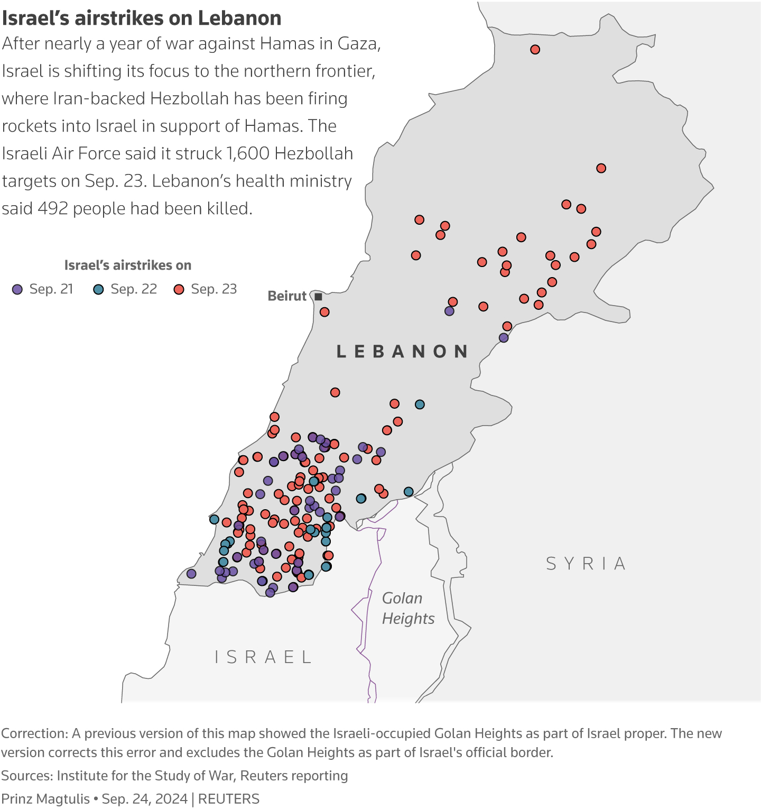

| Date |
Events |
| ... |
... |
| October 25, 2023 |
Russia, China veto US UNSC Gaza resolution. Details |
| ... |
... |
| November 22, 2023 |
IDF releases tunnel footage beneath Al Shifa Hospital. Details |
| ... |
... |
| February 9, 2024 |
Moody's downgrades Israel credit. Details |
| February 12, 2024 |
Israel freed 2 hostages in Rafah, 74 Pals reported dead. Details |
| February 14, 2024 |
US, Israel, Egypt, Qatar meet in Cairo. Talks end with no sign of breakthrough. Details |
| February 15, 2024 |
Israel raids main hospital in Rafah. Israel strikes kill 10 in Lebanon. Details |
| February 16, 2024 |
ICJ rejects South African request to add additional measures for Rafah to Jan 26 order. Details |
| February 19, 2024 |
IDF prepares for Rafah invasion and scaled back war. Details |
| February 20, 2024 |
US proposes UN security council temporary ceasefire. Pals ask ICJ to declare Israel occupation illegal. Details |
| February 21, 2024 |
Knesset backs Netanyahu rejection of Pal state. IDF stikes Syria. Details |
| February 22, 2024 |
Israel proposes "humanitarian pockets". Hamas cheif arrives in Cairo. Details |
| February 23, 2024 |
Netanyahu proposes day after plan. Details |
| February 24, 2024 |
Ceasefire talks in Paris. Details |
| February 26, 2024 |
Palestinian Authority PM resigns. Aaron Bushnell sets himself on fire. Details |
| February 27, 2024 |
Israel agrees to Ramadan ceasefire, awaits Hamas response. Details |
| February 28, 2024 |
Smotrich pledges to continue expanding WB settlements Details |
| February 29, 2024 |
Over 100 killed after IDF opens fire at Gaza aid trucks. Details |
| March 2, 2024 |
US airdrops aid into Gaza. Details |
| March 3, 2024 |
Hamas arrived in Cairo for cease-fire talks. Details |
| March 4, 2024 |
Kamalas Harris calls on Israel to do better. Israel carries massive raid in WB.Details |
| March 5, 2024 |
UN says sexual violence occured on Oct 7. Details |
| March 7, 2024 |
Houthis kill 3 in Red Sea attack. South Africa asks ICJ for ceasefire. Details |
| March 8, 2024 |
Biden announces US aid port in Gaza. Details |
| March 11, 2024 |
Ceasefire talks fade as Ramadan begins. First charity aid ship leaves Cyprus. Details |
| March 14, 2024 |
29 killed awaiting aid trucks in Gaza City. Hamas's Mustafa killed in Lebanon. Second Cyprus charity aid ship. Biden sanctions settlers. Knesset amends 2024 budget. Details |
| March 15, 2024 |
Hamas presents ceasefire proposal. Schumer calls for new elections. Hezhollah says they don't need Iran. Details |
| March 16, 2024 |
Netanyahu approves Rafah assault. First Cyprus ship arrives. Details |
| March 18, 2024 |
IPC says Gaza suffers famine shortages, mass death imminent. Netanyahu says he will press on with Rafah assault. IDF raids Al-Shifa again. Mossad chief to head to Qatar for negotiations. Details |
| March 19, 2024 |
Hamas' No 3, Marwan Issa, killed by Israel. Details |
| March 20, 2024 |
Blinken begins Middle East trip. IDF says they killed 90 Hamas gunmen at Al-Shifa. Details |
| March 21, 2024 |
Blinken in Cairo. IDF kills 50 more in Al-Shifa. Israeli minister says they will still enter Rafah even without US support. Details |
| March 22, 2024 |
Netanyahu says Israel will enter Rafah without US support in Blinken meeting. IDF says 358 militants captured at Al-Shifa. Details |
| March 23, 2024 |
Russia, China veto US ceasefire UNSC resolution. Smotrich declared almost 2000 acres as Israel land. IDF opens Gat 96 for aid into north. Details |
| March 24, 2024 |
IDF moves in on Al Amal, Nasser hospitals, say they captured 480 militants in Al Shifa. Details |
| March 25, 2024 |
UNSC passes resolution demanding immediate ceasefire in Gaza. Israel to stop working with UNRWA. Details |
| March 26, 2024 |
12 drown trying to get aid on north Gaza beach. Doha talks end with no breakthrough. Israeli government divided on religous conscription. Gollant visits Washington. Details |
| March 27, 2024 |
Ireland to intervene with investigation in South Africa genocide case. Jenin raid, Rafah airstikes continue. Details |
| March 28, 2024 |
ICJ orders Israel to halt famine. IDF lingerie viral videos against international law. Fighting continues around Al-Shifa. Blockade continues at Nasser and Al-Amal. WB bus terrrorist attack. New Cabinet for PA Details |
| March 29, 2024 |
Al-shifa, Al-Amal, Nasser fighting continues. 38 killed in IDF strikes in Syria. Netanyahu approved Cairo/Doha delegation for Gaza talks. Details |
| March 30, 2024 |
US agrees to send new military aid package to Israel. Details |
| March 31, 2024 |
IDF says they killed senior PIJ commander. Ceasefire talks commence in Cairo. Al-Amal, Nasser, Al-Shifa fighting continues. Details |
| April 1, 2024 |
IDF concludes Al-Shifa operation. Egypt mediators meet with Israel officals in Cairo. Details |
| April 2, 2024 |
7 aid workers for celebrity chef killed in WCK strike. Strike kills top IRGC advisers in Iran's embassy in Damascus. Details |
| April 5, 2024 |
IDF dismisses two officers following investigation of WCK strike. Biden threatens to withhold aid in call with Netanyahu. Israel to reopen Erez crossing, allow for more aid at Ashdid port and Kerem Shalom crossing. Details |
| April 6 2024 |
IDF finds dead hostage, says PIJ killed him. Hamas to head to Cairo for ceasefire talks. Pelosi calls for Biden to halt weapons aid to Israel. Details |
| April 7, 2024 |
IDF withdraws troops from Khan Younis. New round of ceasefire talks begin in Cairo. Details |
| April 8, 2024 |
Hamas says no progress in Cairo talks. BoI holds rates at 4.5%, budget deficit jumps to 6.2%/GDP. Details |
| April 9, 2024 |
Hamas rejects Israel Cairo offer. Turkey export restrictions on Israel. Israel purchases 40,000 tents for Rafah evacuation. Details |
| April 10, 2024 |
Biden says Netanyahu approach to war in Gaza is a 'mistake'. Cairo talks continue. Details |
| April 11, 2024 |
Three sons of Hamas leader Haniyeh killed. Israel to open new aid crossing in north Gaza. Details |
| April 12, 2024 |
Iran retaliation on Israel imminent. IDF battles in Al-Nusseirat camp in central Gaza. New US/EU sanctions on Hamas. Details |
| April 13, 2024 |
Iran siezes cargo ship at Strait of Hormuz. Israeli teen killed in WB, settlers respond with arson in Pal village. Details |
| April 14, 2024 |
Iran launches unprecedented drone/missile attack on Israel. Hamas rejects Israel offer in Cairo talks. Details |
| April 15, 2024 |
Iran says they notified US before attack, Washington denies this. Israel debt was 160 shekels in 2023, 63% debt-to-GDP. Details |
| April 16, 2024 |
Israeli war cabinet still to decide response to Iran attack. Four IDF solders injured in Lebanon. WB settlers kill 2 Pals in attack. Details |
| April 17, 2024 |
Israel approved $5 billion plan to rebuild Gaza border towns destroyed on Oct 7. Cairo ceasefire talks continue. Details |
| April 18, 2024 |
US blocks UN Palestine membership. Iran tensions continue. S&P downgrades Israel's credit. Turkey aid group announces another flotilla. Details |
| April 19, 2024 |
Israel attacks back at Iran. New round of WB settler sanctions from US and EU.Details |
| April 21, 2024 |
14 Pals killed in WB raid as settler violence continues. Thousands protest against Netanyahu in Israel. Ismail Haniyeh indicted my Israel state court. US reported to sanction IDF WB battalion for rights violations.Details |
| April 22, 2024 |
Head of IDF intel resigns. IDF enters back into Khan Younis. "Mass graves" reported at Nasser hospital following IDF withdraw. Details |
| April 23, 2024 |
IDF instensifies strikes in Gaza, calls for evacuation in north. Deepest Hezbollah drone attack in Israel. UNRWA Colonna Review on neutrality. Columbia campus protests. Details |
| April 24, 2024 |
IDF-Hezbollah fighting intensifies in Lebanon. North Gaza shelling intensifies, Rafah ground assault imminent. Iran, Pakistan call on UNSC to take action on Israel. US anti-Israel protests intensify. Details |
| April 25, 2024 |
IDF strikes intensify in Rafah and north Gaza. Smotrich pushes to legalize 68 illegal WB outposts. US and 17 other countries appeal to Hamas to release hostages. Details |
| April 26, 2024 |
Netanyahu says any ICC decision will be ignored. Egypt attempts to revive truce-hostage talks. Details |
| April 27, 2024 |
Peace talks continue. Two Pal gunmen killed in WB. Cyprus WCK aid to continue. Iran to release MSC Aries hostages. UN closes 4 cases of UNRWA workers. US still considering NetZah Yehuda sanctions. Details |
| April 28, 2024 |
Leaked internal US memo says Israel may be violating IHL. Hamas to head to Cairo for ceasefire talks. Israel says Rafah assault will be suspended if hostage deal. Turkey aid flotilla halted. Details |
| April 29, 2024 |
Hamas to respond to Israel peace proposal. ICC prepared arrest warrants on Israeli officials. Biden-Netanyahu call. Blinken in Saudi Arabia. US pier in Gaza to cost $320 million. Details |
| April 30, 2024 |
Netanyahu says Rafah assault with happen no matter outcome of truce talks. Israel prepares for war with Hezbollah. Pals attack EU diplomats in WB. Turkish national stabs Israeli police. Columbia protests continue. Details |
| May 1, 2024 |
Blinken, Netanyahu meet. Jordan aid convoy attacked by Israeli settlers. UCLA encampments attacked. 300 arrests at Columbia. Details |
| May 2, 2024 |
Hamas delegation heads to Egypt. Israel war cabinent meets. Erez crossing opened. Police arrests at UCLA. PA officers kill PIJ gunmen in WB. PA pushes for temporary residency for Gazans in Egypt.Details |
| May 3, 2024 |
Turkey halts trade with Israel. UK sanctions WB settlers. Houthis announce new attacks in Red Sea. Protests spread internationally. Houthis offer education to suspended. Hamas captured Erez convoy. Details |
| May 4, 2024 |
Hamas in Cairo for truce talks. Qatar considers closing Hamas office. IDF kills 5 in WB raid. Details |
| May 5, 2024 |
Hamas attacks Karem Shalom crossing. Cairo talks falter. Israel shuts down Al-Jazeera. Israeli hostage protests in Tel-Aviv. Campus protests continue.Details |
| May 6, 2024 |
Israel gives Rafah evacuation order after truce talks falter. Israel strikes in east Rafah. Columbia cancels commencement ceremony. Details |
| May 7, 2024 |
Hamas accepts Qatar-Egypt truce proposal, Israel says it is unacceptable. IDF takes over Rafah crossing. Biden calls Netanyahu. Qatar, Israeli officials to head to Cairo for continued negotiations. Details |
| May 8, 2024 |
US halts weapons to Israel. Truce talks show little sign of breakthrough. Thousands flee Rafah. Settlers attack aid. Kerem Shalom reopens. US Gaza pier completed. Hezbollah-IDF tensions grow. Amsterdam protests. Details |
| May 9, 2024 |
Biden says he will withhold aid if Israel enters Rafah. Cairo talks continue. Israel budget deficit hits 7%/GDP. Houthis target multiple ships in Gulf of Aden. Details |
| May 10, 2024 |
Truce talks end with no deal. Israel to continue with Rafah assault. UNRWA headquarters set on fire in Jerusalem. UN Gen Assembly votes to make Palestine a full member. Details |
| May 11, 2024 |
Biden admin finds Israel may have violated IHL. IDF encircles Rafah. 300k Gazans flee for Al-Mawasi. South Africa asks ICJ for Rafah withdraw. US protests continue, Canada protests. Details |
| May 12, 2024 |
IDF re-enters Jabalia in northern Gaza. Protests in Tel Aviv demand hostage deal. Details |
| May 13, 2024 |
Fighting in Jabalia and in east Rafah. Israel Memorial Day. Details |
| May 14, 2024 |
Fighting continues in Jabalia and east Rafah. Ceasefire talks reach stalemate. WB settlers attack and destroy 15 aid trucks. Details |
| May 15, 2024 |
Rafah/Jabalia fighting continues. Israel footage of militats with UNRWA. Indian aid worker killed in Rafah. Houthis attack "Destiny". Jordan foils Iran plan to smuggle weapons. Netanyahu presses bill to draft ultra-Orthodox Jews. Details |
| May 16, 2024 |
Rafah/Jabalia fighting continues. IDF raids in WB. Gallant calls out Netanyahu for day after plan. Egypt rejects Israel request to reopen Rafah crossing, blames Israel for evading truce talks. US anchors aid pier to Gaza beach. Details |
| May 17, 2024 |
Aid starts moving from US pier. ICJ hearings on Rafah. Fighting intensifies in Jabalia/Rafah. Israeli cabinet split on Gallant comments. Israeli settlers attack truck in WB. Israel abolished trade agreement with Turkey. G7 nations send letter to Israel. Spain to recognize Pal state. US house passes bill forcing Biden to send weapons. Canada WB settler sanctions. Details |
| May 18, 2024 |
Fighting in Jabalia and East Rafah continues. US pier transfers aid to Deir al-Balah. IDF retrieves three Israeli hostage dead bodies. Details |
| May 19, 2024 |
Fighting in Jabalia/Rafah. US Jake Sullivan mets with Netanyahu. IDF finds another body. Gants demands day after plan from Netanyahu. Details |
| May 20, 2024 |
ICC arrest warrants for Netanyahu, Sinwar. Gallant says IDF will broaden Rafah assault. Fighting continues in Jabalia, Deir al-Balah, East Rafah. Israel calls for US support against establishment of Pal state. Details |
| May 21, 2024 |
AP cameras seized by Israel. Fighting in Jabalia, Khan Younis, Rafah. International experts, France, Belgium back ICC warrant. Israel calls for opposition to warrant. IDF raid in Jenin. Details |
| May 22, 2024 |
Ireland, Spain, Norway recognize Palestine state. Israel returns AP equipment. IDF tanks enter central Rafah. Fighting in Jabalia/Khan Younis. US possibly santion ICC. Israel approved return to three WB settlements. Details |
| May 23, 2024 |
Rafah, Jabalia fighting. UN asks Israel to investigate allegations of Pal detanees. 2 more killed in Jenin WB raid. Details |
| May 24, 2024 |
ICJ rules Israel must halt operations on Rafah. Strikes continue in Jabalia/Rafah after ruling. Israel blocks Spain from providing services to WB. Details |
| May 25, 2024 |
Israel dismisses ICJ ruling. Jabalia/Rafah fighting continues. Biden-al-Sisi agreement for Karem Shalom aid. Truce talks to restart. Italy to resume UNRWA aid. G7 calls for Israel-Pal banks to remain open. White House reiterates Rafah position after ICJ ruling. Details |
| May 26, 2024 |
Hamas fires rocket attack at Tel Aviv. Fighting in Rafah/Jabalia. Israel to continue Rafah action. Hamas claims capture of IDF solders, IDF denies. Details |
| May 27, 2024 |
IDF stike in Rafah ignites fire, kills 45 Pals. Egypt/IDF forces trade fire, one Egyptian guard killed. Bank of Israel holds rates at 4.5%. 8 killed in IDF Lebanon strikes. Israeli Police and Jewish pilgrims clash at Jewish festival. Details |
| May 28, 2024 |
Al-Mawasi tent camp hit by IDF strikes. IDF enters central Gaza. Fighting in Jabalia/Rafah. Israel investigating tent fire. 1 million have fled Rafah in May. Spain, Norway, Ireland recognize Palestine. Denmark reject proposal to recognize Palestine. Biden call on Israel to protect civilians. Details |
| May 29, 2024 |
Fighting in Rafah, Jabalian, Khan Younis. Israel says war could last 7 more months. US says Rafah incursion doesn't cross red line. US built pier breaks. Israel says they didn't strike Al-Mawasi. Yair Golan wins Labour party leaership. Details |
| May 30, 2024 |
Israel takes full control of Egypt-Gaza border. Fighting in Rafah/Jabalia. Blinken calls for day after plan. Gantz's party calls for dissolution of pariament. Israel lifts ban of food into Gaza from Israel/WB. Details |
| May 31, 2024 |
IDF completes Jabalia operation. Rafah fighting continues. US-Britain launch strikes on Yemen-Houthis. Hamas says they will agree to negotiations only if Israel ends war. Jerusalem Gay pride parade. Egypt arrests during pro-Gaza protests. Details |
| June 1, 2024 |
Biden-Israel proposed 3 phase truce plan to Hamas. IDF probes further into Rafah. Details |
| June 2, 2024 |
Netanyahu aide confirms Israel accepts Biden offer. Israel supreme court hearings on ultra-Orthodox conscription. Two Pal teens killed in WB. Indonesia willing to send peacekeeping troops to Gaza. Details |
| June 3, 2024 |
Egypt says Rafah crossing can't reopen under Israel control. Netanyahu says first phase of deal can start. Ben-Gvir says Netanyahu whitewashing deal. Presumed Israeli hostage found in Kibbutz. Gallant assessing alternatives to Hamas rule. Details |
| June 4, 2024 |
Attacks on Israel from Iraq increase. Ultra-Orthodox Shas Knesset party backs Biden deal. UN human rights chief backs Biden deal. Houthi attacks in Red Sea decline following US retaliation. Details |
| June 5, 2024 |
Israel announces new operation in Central Gaza. Strikes in East Bureij, Al-Maghazi, Al-Nuseirat, and Dier al-Balah. William Burns in Qatar. Hamas says Israel need to commit to permanent ceasefire before accepting Biden deal. Israel says they are ready for an offensive against Hezbollah. Hamas/Fatah to meet in June. Ben-Gvir vows to disrupt coalition. Al Jazeera ban extended. Israel police in Jerusalem for Flag Day. Gunman fires at US embassy in Lebanon. Israel to phase out military detentions. Details |
| June 6, 2024 |
40 killed in UNRWA school strike. Half of Hamas has been killed since war start. Spain to intervene in SA ICJ case. Barak leaved ICJ case panel. Houthis attacks continue. Details |
| June 7, 2024 |
Strikes in Khan Younis, Deir al-Balah, and Rafah. IDF enters west Rafah. 80% unemployment in Gaza, 32% in WB. WB Jenin raid kills 3. US sanctions Lions' Den. US condemns journalists assaults at Flag Day. US-British 6 strikes in Yemen.Details |
| June 8, 2024 |
IDF rescues 4 hostages. Airstrikes in al-Nuseirat kill 200 Pals. Gantz delays resignation. US-Gaza pier reopens. US says pier not used for hostage rescue. Details |
| June 9, 2024 |
Al-Nuseirat rescue operation death toll to 274. IDF in Deir Al-Balah and Rafah. Al Jazeera ban extended 45 days. Details |
| June 10, 2024 |
Benny Gantz resigns from war cabinet. Blinken in Middle East. Hamas offical calls on US to pressure Israel to end war. Fighting in Rafah, Deir al-Balah. IDF covert strikes intensify in Syria. Details |
| June 11, 2024 |
UNSC backs resolution outlining Biden deal. Senior Hamas official accepts the UN resolution. Blinken announced $400 million in aid to Pals. Knesset passes ultra-Orthodox conscription law. 4 Pals killed in Ramallah raid. Details |
| June 12, 2024 |
UN inquiry into Israel and Hamas for war crimes. Hamas proposes changes to Biden truce deal. Hezbollah top commander killed. Blinken focuses on day after plans in Israel trip. Gaza pier resumes operation. Fighting in Rafah continues. Pals accuse Israel of abuse while detained. German court dismisses request to block arms export to Israel. Details |
| June 13, 2024 |
Hezbollah largest attack on Israel since start of Gaza war. IDF advances on west Rafah. Truce talks falter. US calls on Houthis to release detained UN personnel, detained US embassy employees. Details |
| June 14, 2024 |
US sanctions Israeli group Tasv 9. Israeli strikes in Lebanon. Polls show Likud gaining on Gantz's party. Poll shows Pals support for armed struggle rising. Details |
| June 15, 2024 |
8 IDF soldiers killed in West Rafah.Details |
| June 16, 2024 |
Israel begins tactical pauses in south Gaza for aid. Fighting in Rafah. Israel extends funding for southern evacuees residencies. US navy rescues Greek owned crew from Houthi attack. Details |
| June 17, 2024 |
Netanyahu disbands war cabinet. Netanyahu denounces army plan for tactical pauses. Israel defense exports rise to $13 billion in 2023. Israel-Hezbollah fighting intensifies. Fighting in Rafah. Details |
| June 18, 2024 |
Fighting in Rafah. UK-US strikes in Yemen. Biden working to cancel restrictions in Israeli arms. Dems agree to arms support for Israel. Anti-government protests in Jersualem.Details |
| June 19, 2024 |
IDF deeper in Rafah. Shelling in Al-Mawasi kills 8. Houthis sink second ship. UN human rights office report says Israel bombed indiscriminately. Details |
| June 20, 2024 |
Fighting in Rafah, Deir al-Balah. Hozbollah public threat to Israel and Cyprus. Netanyahu advisers to meet with Blinken, Sullivan. Israel YOY CPI 2.8%, est 3.2%. Details |
| June 21, 2024 |
Fighting in Rafah. Armenia recognises Pal state. 2 PIJ members killed in WB by IDF. US pier resumes operation. Details |
| June 22, 2024 |
25 Pals killed in Al-Mawasi. Fighting in Gaza City, Rafah. Israel citizen shot dead in WB. UN says Gaza lawlessness preventing humanitarian aid. Details |
| June 23, 2024 |
Fighting in Rafah, Deir al-Balah. IDF straps Pal man to front of jeep in WB. 8 Pals killed in strike on UNRWA college. Gallant in Washington. Thousands protest for ceasefire in Tel Aviv. Details |
| June 24, 2024 |
Netanyahu says intense fighting in Gaza is over, will focus on Hezbollah. IDF strike kills director of Gaza Ambulance and Emergency Dept. Hamas-Fatah China unity talks postponed. Israeli commission investigating Netanyahu for submarine purchases issues warning. Thailand to resume sending workers to Israel. Details |
| June 25, 2024 |
Israel supreme court rules ultra-Orthodox jews mush join military. Fighting in Gaza City, Rafah. IPC says 500k Gazans in phase 5 famine. Israelis sue UNRWA for aiding Hamas. Germany aid to Gaza, criticises Israel settlements. Israel says they prefer diplomacy with Hezbollah. UNRWA says Gaza near total breakdown of law/order. Details |
| June 26, 2024 |
Fighting in Rafah, Gaza City. US aid port faces looting, Hamas fires at UNICEF aid convoy. Turkey stands with Lebanon against Israel. Israel to build own supercomputer. Details |
| June 27, 2024 |
Fighting in Gaza City, Rafah. IDF solder killed in Jenin raid. Israel boosts water in Gaza. Details |
| June 28, 2024 |
Smotrich says Israel to promote WB settlements. Protesters outside Netanyahu house. UK request to ICC in Netanyahu/Gallant warrant. Israel strikes against Hezbollah instensity. Fighting in Rafah and north Gaza. US built pier removed for sea conditions. US has sent $6.5 billion to Israel since Oct 7. Details |
| June 29, 2024 |
Fighting in Rafah and Gaza City. Two IDF soldiers killed. Hamas says ceasefire talks stalled. Iran and Israel trade verbal attacks over Lebanon escalation. Details |
| June 30, 2024 |
Fighting in Shejaia, Rafah continues. IDF strike in Tulkarm. Israel tech startups raise $2.9 billion in Q2. Israel extends waiver for Israel-PA bank cooperation in WB. Details |
| July 1, 2024 |
PIJ fires rockets at Israel. Fighting in Gaza City and Rafah. IDF raid in Tulkarm. Victims of Oct 7 sue Iran, Syria, North Korea in US court. Details |
| July 2, 2024 |
Fighting in Rafah, Gaza City, Khan Younis. Israel says intense fighting coming to a close. Israel presents post-war plan for Gaza. Israel presents power line for water in Gaza. Details |
| July 3, 2024 |
IDF strike kills senior Hezbollah official. One dead in stabbing attack in Israel. Fighting in Rafah, Khan Younis, Deir Al-Balah, and Gaza City. Houthis escalate Red Sea attacks. PIJ says hostages have attempted suicide. 12 former Biden officals accuse "undeniable complicity". Israel police clash with WB settlers. 4 Pals killed in WB strike. Details |
| July 4, 2024 |
Israel to send delegation to revive stalled ceasefire talks after Hamas response. Hezbollah lanuches drone/rockets attack on Israel. Israel legalizes 5 WB settlements, plans to build 6000 more homes. Israel to transfer withheld taxes to PA. Details |
| July 5, 2024 |
Ceasefire negotiations to resume next week. Hamas rules out foreign occupation in Gaza. Hamas briefs Hezbollah on ceasefire talks. 7 Pals killed in WB raid in Jenin. ICC prosecutor cancelled mission to Israel/Palestine on day of arrest warrant request. Details |
| July 6, 2024 |
Hamas says they accept US ceasefire proposal. Fighting in Rafah and Al-Nuseirat camp. Details |
| July 7, 2024 |
Ceasefire talks resume. Fighting accross all of Gaza. Hezbollah fires rocket attack into north Israel. Protests accross Israel demanding end to war. Details |
| July 8, 2024 |
Three Pals found dead at Gaza-Israel border. IDF advances in Gaza City, new evacuation orders. Netanyahu says deal must allow Hamas eradication. Smotrich says offensive can't stop. Lapid says he would support Netanyahu as PM if accepts ceasefire. Hezbollah launches rocket attack on Golan Heights. Details |
| July 9, 2024 |
Gallant approved drafting of ultra-Orthodox. CIA director meets with Egyptian Pres. Fighting in Gaza City, central Gaza, Rafah. Hamas says IDF evac orders threaten talks. IDF strike in Syrian territory. New Iran pres reaffirms anti-Israel policies. Brazil-PA trade agreement. Details |
| July 10, 2024 |
Ceasefire talks resume in Doha. 29 killed in IDf strike on soccer game. UN says famine has begun to spread in Gaza. Gallant says 60% of Hamas killed, important for Israel to accept ceasefire. Israel to implement digital shekel. IDF tanks hit Syrian targets in Golan. Morocco to aquire spy satellite from Israel. Details |
| July 11, 2024 |
IDF presses on in Gaza City, Pals refuse to evacuate. Hamas says no update from mediators, accuses Israel of stalling. Shin Ben head in Cairo, US envoy in Israel. Pal prisoners recount beatings in IDF detention. 1150 backlog of aid in Gaza. G7 denounces WB settlements. Intel invests in Israeli AI startup. Drone attack from Lebanon. US continues shipping 500 lbs bombs. Details |
| July 12, 2024 |
IDF begins withdrawl from Gaza City. IDF finds "combat complex" in Gaza city. Ceasefire talks continue. Biden says war must end now, Israel can't occupy Gaza. Israel, Egypt discuss border surveillance system. Israel extends mandatory service. IDF soldier killed on Lebanon border. Israel releases findings of internal probe into failings on Oct 7. US sanctions new WB outposts. Details |
| July 13, 2024 |
IDF strike on Al-Mawasi targets Mohammed Deif, kills 71 Pals. UN chief says no alternative to UNRWA. ICJ to deliver non-binding opinion on Israel occupation. Details |
| July 14, 2024 |
Ceasefire talks paused, Egypt blames Israel. Death toll to 91 for Deif strike. Netanyahu not sure if Deif was killed. Abbas blames Hamas for war continuing. Hamas not withdrawn from talks. Four wounded in car ramming attack in Israel. Israel strikes in Syria kill 4. Thousands march in Jerusalem for ceasefire. Details |
| July 15, 2024 |
Fighting in southern and central Gaza. Gaza to take 15 years to rebuild. UK merchant ship reports attack in Red Sea. Details |
| July 16, 2024 |
Fighting in Khan Younis, Rafah. Ceasefire talks stalled. Pal boy shot after attempted Ramallah stabbing. UN sanctions WB settlers. Israel approved UN to start bringing armoured vehicles, PPE into Gaza. Fatah and Hamas to meet in China. Three civilians killed in IDF Lebanon strike. Prominent Syrian businessman killed in IDF strike. Details |
| July 17, 2024 |
Israel pounds Khan Younis, North Rafah. IDF says they killed half of Hamas leadership. HRW accuses Hamas of warcrimes on Oct 7. Israel releases 13 detainees. Gallant Lloyd Austin call. Google in talks to buy Wiz. Details |
| July 18, 2024 |
IDF strikes in Dier al-Balah, Gaza City, Rafah. IDF kills 2 PIJ commanders. Ceasefire talks still on hold. Suez Canal revenue drops by 25%. Spanish, German police dentain 4 for smuggling to Hezbollah. Italy sends aid to Gaza. US ends Gaza pier mission. US travel ban on IDF sergeant. Details |
| July 19, 2024 |
ICC rules Israel settlements are illegal. Houthi drone hits Tel Aviv. Fighting in al-Nuseirat, Rafah. Ceasefire talks stalled. EU aid to Gaza. Britain resumes UNRWA funding. UN said anarchy spreading in Gaza. FIFA ends Pal bid to suspend Israel. Details |
| July 20, 2024 |
Fighting in Al-Nuseirat, Deir al-Balah, Rafah. Ceasefire talks stalled, Blinken says ceasefire is within sight. Settlers campaign Trump to drop two-state solution. Polls for annexing WB grow in Israel since Oct 7. Details |
| July 21, 2024 |
Israel strikes on Yemen port. Fighting in Rafah, Al-Nuseirat, Deir Al-Balah. IDF polio vaccines in Gaza. Israel begins conscripting ultra-Orthodox. US critisizes ICJ opinion on Israel. Details |
| July 22, 2024 |
IDF issues evac orders in Khan Younis. Netanyahu addresses Congress. Fighting in Khan Younis, Deir al-Balah. IDF adjusts al-Mawasi boundaries. Two Israeli hostages dead. Canadian citizen attempted stabbing in Israel. Israeli delegation to receive 24-hour security at Paris Olympics. Details |
| July 23, 2024 |
Fighting intensifies in Khan Younis, fighting in Deir al-Balah and Rafah. Netanyahu to meet Biden and Trump. WHO says high risk of polio in Gaza. Fatah and Hamas form unity gov in China negotiations. IDF kills 7 in Tulkarm raid. Energean invests $1.2B in Israeli project. IAF jets break sound barrier over Lebanon. Details |
| July 24, 2024 |
Fighting in Khan Younis and central Gaza. Protests at capital hill ahead of Netanyahu visit. Netanyahu denies Ben-Gvir Jerusalem policy. Hezbollah show drone footage inside Israel. 9 arrested in pro-Pal protests in London. Starlike activated in Gaza hospital. Details |
| July 25, 2024 |
Fighting in Khan Younis, Rafah. IDF in phase 3 operations. US pier a failure. Houthis threaten response to Israel. US official says negotiations in closing stages. IDF finds 5 dead hostages. Australia sanctions on WB settlers. Details |
| July 26, 2024 |
Israel seeks changes to truce plan, complicates talks. Kamala calls for ceasefire. AU, NZ, CA call for ceasefire. US General says Israel has no day after plan. Gazans begin to move into former prisons. WHO send 1M vaccines to Gaza. UK gov drops bid against ICC Netanyahu arrest warrant. Israeli spy in court in UK. WB Hamas leader dies in IDF custody. Israel warns France of Iranian terror plot. Details |
| July 27, 2024 |
30 Pals killed in IDF strike on school. Fighting in Khan Younis, Rafah, Gaza City. PIJ rockets at Israel. Biden and Jordan's Abdullah meet. CIA's Bill Burns to meet with Israeli, Qatari, Egyptian officials. US to offer deportation relief to Lebanese due to Israel-Hezbollah tensions. Details |
| July 28, 2024 |
Rocket attack on Druze village in Israel Golan Heights. IDF tanks push further into Khan Younis, Rafah. Thousands flee Khan Younis. Details |
| July 29, 2024 |
Israel seeks to prevent war with Hezbollah. Fighting in Khan Younis, Rafah, Gaza City, many flee to Deir. All Beirut flights cancelled. IDF drone strike in Lebanon kills 2. Italy discusses Israel-Lebanon efforts to prevent war. Hamas accuses Netanyahu of preventing ceasefire. Right wing protests in response to IDF investigations of dentention camp. GHM declares polio epidemic. Erdogan says Turkey could enter Israel. Details |
| July 30, 2024 |
IDF leaves Khan Younis, begins evacuations in al-Bureij. 9 soldiers detained from Sde Teiman by IDF. Israeli citizen killed in rocket attack from Lebanon. Pal prisoner association calls for international inquiry. US advising Israel not to strike Beirut. Beirut flight cancellations continue. Details |
| July 31, 2024 |
Hamas political leader Ismail Haniyeh killed in Tehran. Israel says they killed top Hezbollah commander Fuad Shukr in Beirut. WHO says polio detected in Gaza. 85 critical condition Gazans evacuated in WHO operation. UN releases report on Sde Teiman. Another IDF soldier indicted for Pal prisoner abuse. Details |
| August 1, 2024 |
Israel confirms death of Deif. Hezbollah confirms death of Shukr. Protests in mourning in Tehran and Istalbul. Fighting in Al-Maghazi, Nusseirat. Iran and regional allies meet for retaliation. Hezbollah said they had assurances Beirut was safe. Malaysia's Anwar Haniyeh FB post removed. Turkey blocks NATO-Israel cooperation. Israel Leviathan expands production. Australia urges citizens to leave Lebanon. Germany halts flights to Tel Aviv, extends halt in Lebanon. Netanyahu says will retaliate if Israel is struck. Al Jazeera reporter and cameraman killed in Gaza. Details |
| August 2, 2024 |
Haniyeh funeral in Qatar. Biden says killing hurts ceasefire talks. Poland advises against travel to mideast, many flight cancelations across Europe/Asia. Australia says WCK strike not intentional. Blinken meets with UAE. Israel reprimands Turkey for mourning Haniyeh death. Hezbollah vows response. IDF confirms death of Al Jazeera reporter. Warning sirens in north Israel. Details |
| August 3, 2024 |
US deploys Navy and jets to mideast. Israel WB airstrikes kill 9 militants. IDF strike in Gaza City kill 10 sheltering in school. France suspeds flights to Beirut. Hezbollah resumes rocket barrages. Archbishop of Canterbury calls for ICJ occupation opinion to be respected. Israel sends delegation to Cairo. Details |
| August 4, 2024 |
IDF says school strike targeted Hamas center. Fighting in Rafah, Gaza City. Blinken meets with France, UK to discuss ceasefire. Biden calls for Iran to stand down. Details |
| August 5, 2024 |
Israel returns 80 Pal bodies to Gaza. Strikes in Khan Younis, Deir al-Balah. IDF says they killed deputy minister of Gaza economy. Lebanon recieves WHO aid, Turkey citizens evacuate Lebanon. Russia's Shoigu in Tehran. Iran looks to punish Israel without escalation. Another strike on Gaza school. Cairo talks end in failure. Rocket attacks from Gaza on Israel. Pal attacker stabs and kills 2 in Israel. Details |
| August 6, 2024 |
Fighting in central Gaza, Rafah. 9 UNRWA staff members fired for role in Oct 7. Ultra Orthodox protest conscription orders. BTselem reports systemic prison abuse in Israel. IDF kills head of Hamas smuggling. Netanyahu critisized for avoiding ceasefire deal. Lebanon continues rocket attacks. Israeli planes break sound barrier over Beirut. South Korea bans citizens from Israel/Lebanon. Japan urged citizens to leave Israel. IDF WB raids in Jenin. Irene Khan condemns killing of Al Jazeera journalist. Putin asks Iran to avoid civilian harm. Details |
| August 7, 2024 |
Details |
| August 8, 2024
[1]
[2]
[3]
[4]
[5]
[6]
[7]
|
Gaza
- IDF new evacuation orders in Khan Younis
- Strikes in Al-Bureij, Al-Nuseirat, Gaza City, Khan Younis
- 15 Pals killed in airstrikes on 2 schools in Gaza City
- IDF says they hit Hamas command centers in Abdel-Fattah Hamouda and Al-Zahra schools in the Tuffah neighbourhood of Gaza City
- WCK says that a Pal staff member, Nadi Sallout, was killed while off-duty in Deir Al-Balah
- Hamas politician Khalil al-Hayya set to continue leading indirect negotiations with Israel for ceasefire with guidance from Sinwar
Israel
- Kamala didn't discuss imposing arms embargo on Israel during exchange with pro-Pal activists, aide says
- Canada pulls all children of its diplomats from Israel amid fears of wider Mid-east conflict
- Israel revoked the accreditation of 8 Norwegian diplomats working as reps of the PA
- Norway calls move an "extreme act"
- Israel Katz says revocation was made in response to "Norway's anti-Israel conduct"
Yemen
- US strikes military targets in Yemen after Houthis attack US destroyer and Liberia flagged container ship
- Destroy two drones, Houthi ground control station, and three anti-ship cruise missiles
|
| August 9, 2024
[1]
[2]
[3]
|
Gaza
- Smile of Hope camp opens in Deir al-Balah for disabled Pals
- IDF tanks enter Khan Younis, thousands flee to Al-Mawasi
- Also fighting in Rafah
- US, Qatar, Egypt called for Israel and Hamas to meet for negotiations on Aug 15 to finalize ceasefire deal
- Talks to take place in Doha or Cairo
- Netanyahu says Israeli negotiators will be there, Hamas has not responded yet
|
| August 10, 2024
[1]
[2]
[3]
[4]
[5]
[6]
|
Gaza
- Israel strike on Tabeen school complex in Gaza City, housing displaced families kills 100, according to GHM
- IDF says they were targeting Hamas militants and casts doubt on the Pal death toll
- 93 confirmed dead, 11 children and 6 women
- IDF says there were 20 militants housing at the school complex, says precise munitions used could not have caused the death toll that the GHM was reporting
- Egypt, Qatar, the United Arab Emirates Saudi Arabia and Turkey all condemned the strike.
- Strikes also in Al-Nuseirat and Deir al-Balah
Israel
- IDF strike in Lebanon port of Sidon kills senior figure from Hamas, Samer al-Hajj
- Washington to provide $3.5 billion to Israel to spend on US weapons and military equipment
- Funding comes from the $14 billion that was appropriated for Israel from the bill Congress passed in April
- Greek police arrest Israeli on international warrant
- The man was convicted of robbery in Israel and under investigation for a bomb attack by Israel
- Blinken tells Gallant that escalation in Middle East was "in no party's interest", stresses need for Gaza ceasefire
- Israeli military unit, Netzah Yehuda, accused of mistreating Pals in WB has addressed rights violations internally and is cleared to continue receiving US aid
- Washington called for probe into Netzah Yehuda after they were accused of involvement in killing of 78 year old Pal-American man, who died of a heart attack
- Netzah Yehuda's battalion commander was reprimanded and two officers were dismissed but no charges were pursued against them due to no link between the soldier's actions and the Pal man's death
|
| August 11, 2024
[1]
[2]
[3]
[4]
|
Gaza
- Israel issues massive evacuation order in Khan Younis, tens of thousands flee
- US says they are "deeply concerned" about Israeli airstrike on the Tabeen school complex
- German chancellor Sholtz tells Netanyahu that he needs to reach a ceasefire deal with Hamas
- Jordan says they will not be a battlefield for Iran or Israel
- Jordan says they will intercept anything that passes through their airspace
|
| August 12, 2024
[1]
[2]
[3]
[4]
|
Gaza
- IDF presses on with new operations into Khan Younis
- Strikes in Zeitoun (suburb of Gaza City) and Rafah
- Hamas says they are sceptical of latest round of ceasefire talks, says they see no sign of movement from Israeli side
- Hamas says they do not believe Netanyahu is serious about reaching a deal
- Israel released document of 31 militants they said were killed in Tabeen school complex strike
Iran-Israel tensions
- Axios reports that Gallant told Lloyd Austin that Iran was making preparations for large-scale military attack on Israel
- UK, France, Germany call on Iran and its allies to refrain from attacking Israel in joint statement
- Lloyd Austin publicly announces he ordered the deployment of a guided missile submarine, USS Georgia, to the Middle East
- USS Georgia was already in Mediterranean in July, public announcement is rare
West Bank
- One Israeli killed in WB after Pal gunman opened fire, Hamas claims responsibility
- Hamas says the killing was in response to IDF school strike from Saturday
|
| August 13, 2024
[1]
[2]
[3]
[4]
[5]
[6]
[7]
|
Gaza
- Hamas fires two "M90" rockets into Tel Aviv, no causualties reported
- IDF strikes in Deir al-Balah, Al-Bureij camp, Al-Maghazi camp, and Rafah
- Hamas says they will not send delegation to ceasefire talks, accusing Netanyahu of wasting time
Israel
- Ben-Gvir says Jews should be allowed to pray at Al-Aqsa
- Netanyahu says there has been no changes to the rules that prohibit Jews from praying at Al-Aqsa, rebuked Ben-Gvir
- Fitch cuts Israel credit rating to A from A+, cites worsening geopolitical risks due to Gaza war
- Gallant dismissed Netanyahu war aims of "total victory" against Hamas as "nonsense"
- Netanyahu rebuked Gallant's comments
Iran
- Iran says only a Gaza ceasefire will stop them from retaliating on Israel
- Iran dismisses France, Germany, and UK calls for restraint against Israel
- Says calls for restraint "lack political logic and contradict principles of international law"
West Bank
- IDF kill 18-year old Pal in WB raid in Ramallah
- IDF says they responded with live fire to suspects throwing rocks at them
|
| August 14, 2024
[1]
[2]
[3]
[4]
[5]
[6]
[7]
[8]
[9]
[10]
|
Gaza
- Hamas confirms they will not take part in peace talks, Israel to attend
- Talks to go ahead in Qatar, dim hopes of deal being reached
- Blinken postpones trip to Middle East due to "uncertainty" in the Middle East
- Strikes in Khan Younis, western Rafah
Israel
- US approves sale of $20 billion in military equipment to Israel, deliveries not to begin for years
- Equipment includes: F-15 jets and equipment worth $19 billion, tank cartridges valued at $774 million, explosive mortar cartridges valued at $60 million, and army vehicles worth $583 million
- Smotrich publishes new WB settlement plans, says plans are response to countries recognizing Palestine as a state
- Plans are for new 60 hectare settlement called Nachal Heletz will form part of the Gush Etzion settlement cluster and connect the region with nearby Jerusalem
- Israel contractor, defense firm Elbit Systems, reports higher Q2 profits due to Gaza war
- Leumi, one of Israel's largest banks reports 7.5% drop in Q2 net-profit
- Germany and France condemn Ben-Gvir visit to Al-Aqsa mosque, says it is a provication
West Bank
- IDF raid in Tubas kills 1 Hamas fighter
- IDF drone strike in Tamoun kills 4
- Abbas meets with Putin
- Putin says he backs Pal state and more humanitarian relief
Lebanon
- Senior adviser to Biden, Amos Hochstein, in Beirut to meet with leaders to de-escalate
|
| August 15, 2024
[1]
[2]
[3]
[4]
[5]
[6]
[7]
[8]
|
Gaza
- Gaza ceasefire talks begin in Doha, mediators to consult Hamas after negotiations
- Negotiation gaps include IDF troops in Gaza, sequence of hostage release, and restrictions on access to northern Gaza
- Hamas says guard that killed Israeli hostage acted in revenge after he found out that his two children were killed in an airstrike
- Hamas says the guard acted against instruction and doesn't represent their ethics
Israel
- Families of hostages still in Gaza protest outside Likud headquarters
- Netanyahu denies Axios report that he had spoken to Trump about a Gaza ceasefire
- Leader of Australia's main opposition party, Liberal Party, is called racist over saying that Australia shouldn't take in any refugees from Gaza due to possible Hamas sympathisers
West Bank
- Abbas addressed Turkish parliament, says he has decided to visit Gaza and Jerusalem to protest Gaza war
- Abbas also accuses the US of prolonging the war by supporting Israel and vetoing UNSC resolutions
- IDF drone strikes kill 2 gunmen in Nablus
- Israel's El Al airlines reported 150% jump in profit due to near-monopoly status amid flight cancellations
United States
- US Treasury sanctions on Houthis and Hezbollah trade network
- Sanctions target companies, individuals, and vessels accused of being involved in trade with the Iranian proxies
|
| August 16, 2024
[1]
[2]
[3]
[4]
[5]
[6]
[7]
[8]
[9]
|
Gaza
- Gaza ceasefire talks in Doha paused, due to resume next week
- In joint statement, US, Qatar, Egypt present new proposal to close gaps from previous Biden proposal
- Israel issues new evacuation orders in Deir al-Balah and Khan Younis previously deemed humanitarian zones, says due to Hamas mortar and rocket fire
Israel
- Jordanian citizen charged in US with threatening to use explosives and destruction of an energy facility of a local businesses because they supported Israel
- The Jordanian allegedly caused over $700,000 in damages to local businesses he thought supported Israel
- UN special rapporteur on torture, Alice Jill Edwards, condemns case of sexual abuse of Pal prisoner by IDF soldier and says he should be held accountable
- IDF says prosecutors have requested that soldiers accused of abuse be placed under house arrest
- Trump says he told Netanyahu to quickly end Gaza war but criticized ceasefire demands during meeting in July
- Trump calls pro-Pal supporters "pro-Hamas thugs" and "jihad sympathizers," threatens to deport them if elected
- Israel CPI rises 3.2% in July, est 3.1% prev 2.9%
West Bank
- Dozens of Israeli settlers attack Pal village (village of Jit) near Qalqilya
- Settlers burned cars and killed at least one Pal with gunfire
- White house says "unacceptable and must stop"
- IDF intervened and arrested one suspect, also condemns the incident for diverting military resources
- Netanyahu says "those responsible for any offence will be apprehended and tried"
Lebanon
- Hezbollah publishes footage showing fighters driving trucks with rocket launchers through maze of tunnels to apparent underground launch site
|
| August 17, 2024
[1]
[2]
[3]
[4]
[5]
|
Gaza
- 17 Pals killed including 8 children and 4 women in Zawayda (central Gaza) IDF strike
- Biden says no party in middle east should undermine efforts to reach ceasefire, says hostage deal is now in sight but far from over
- Senior Biden official says that Doha ceasefire negotiations have been most productive in months
- Hamas says reports of an agreement being close and "deceptive claims"
- Pal health ministry says they detected first confirmed case of polio on Deir al-Balah in a 10-month old baby who wasn't vaccinated
- UN Sec Gen Antonio Guterres calls for Israel and Hamas to provide humanitarian pauses in order for polio vaccines to be distributed in Gaza
- 95% vaccine coverage will be needed to stop the spread of polio, Guterres says
- Malta Freedom Flotilla Coalition flotilla sets out to break Israel blockade and deliver aid to Gaza
Lebanon
- 10 killed (all Syrian citizens) including 2 children in Israeli strike on residential building in south Lebanon
- IDF says they were targeting a weapons depot used by Hezbollah
- Hezbollah responds with a rocket attack into Northern Israel, wounding 2 IDF soldiers
|
| August 18, 2024
[1]
[2]
[3]
[4]
|
Gaza
- 6 children and mother killed in airstrike in Deir al-Balah, no IDF comment
- Fighting in Deir al-Balah, Khan Younis following evacuations
- Blinken arrived in Israel for ceasefire talks, to meet with Netanyahu
Israel
- Israel Q2 GDP 1.2%, est. 4.4%, prev 17.3%
- Parially due to lack of Pal workers from Gaza
- Still no intrest rate cut expected
West Bank
- Israel kills two senior Hamas militants in airstike in Jenin, says the militants were involved in killing of an Israeli from previous week in Jordan Valley
Lebanon
- 3 peacekeepers injured in south Lebanon after explosion occurs near clearly marked UN vehicle
|
| August 19, 2024
[1]
[2]
[3]
[4]
[5]
[6]
[7]
[8]
[9]
|
Gaza
- Blinken meets with Netanyahu and pres Isaac Herzog, tells them that this is best and last chance to obtain a ceasefire
- Little sign of agreement with IDF continuing fighting and Hamas starting suicide bombings again
- Hamas says Blinken is too optimistic, says new proposal is too close to Netanyahu's recent positions
- IDF pushes into the north of Khan Younis
- IDF strikes in Nuseirat and Khan Younis
- Ceasefire sticking points include:
- Hamas wants an agreement to end the war, Netanyahu wants "total victory"
- Hamas wants total withdrawl of IDF, Israel wants to retain control of Philadelphi Corridor along Gaza-Egypt border
- Israel wants Pals to be screened as they return to the north of Gaza, Hamas wants free movement
- Israel wants veto power over what Pals will be released in exchange for hostages
Israel
- Hamas and PIJ claim responsibility for suicide bombing attack in Tel Aviv that wounded one Israeli
- Hamas says "martyrdom operations" will "will return to the forefront" while "occupation's massacres and assassination policy continue"
- German airline group Lufthansa extends suspensions of flights to Middle East until Aug 26
- Human Rights Watch says Israeli strike on Yemen Hodeidah port in July appeared to be indiscriminate or disproportiante attack on civilians, may have amounted to war crime
- 60 Muslim Democrat delegates (5000 overall), "Delegates Against Genocide", aim to enforce arms embargo on Israel at Kamala nomination at DNC
- Israel says they are starting "robust investigation" into suspected abuse of Pal prisoners at Sde Teiman detention facility
- Israeli man dies after Pal man steals his weapon and attacks him in WB
|
| August 20, 2024
[1]
[2]
[3]
[4]
[5]
[6]
[7]
|
Gaza
- Blinken meets with Egyptian Pres Sisi after talks with Israel
- Blinken says Netanyahu had accepted his bridging proposal, urges Hamas to accept proposal as the basis for more talks
- Hamas says the deal "raises many ambiguities" because it is "not what was presented to us nor what we agreed on."
- IDF retrieves bodies of 6 hostages in a tunnel under Khan Younis, leaves 109 hostages still believed to be in Gaza
- Hostage names: Alex Dancyg, Yoram Metzger, Yagev Buchshtab, Chaim Peri and Abraham Munder and hostage Nadav Popplewell
- 10 Pals killed in IDF strike on school in Gaza City, IDF says strike targeted Hamas militant base embedded within the school
Israel
- Israel's largest supermarket chain Shufersal reports +132% Q2 profit at $46 million
- Thousands in Chicago at DNC opening day to protest Biden's support for Israel
- Chicago police confirm some protesters were arrested after a dozen protesters began to riot
- Was expected to be tens of thousands of protesters but only half that showed up
Lebanon
- IDF strike targets Hezbollah arms depot on Bekaa Valley, no deaths reported
|
| August 21, 2024
[1]
[2]
[3]
[4]
[5]
|
Gaza
- Blinken visit to Middle East ends with no deal
- Israeli strikes in Gaza City, Khan Younis
- IDF issues evacuation orders in Deir al-Balah
- Israel says they killed dozens of gunmen, seized arms
Israel
- Israeli banks refusing shekel cash transfers from Pal banks in WB
- US disputes report that cites Netanyahu as saying he might have convinced Bliken that IDF should keep border troops on Gaza-Egypt border
- Israeli central bank chief Amir Yaron calls on Netanyahu to speed up approval of 2025 budget, says financial markets need a strong fiscal policy from Israel
Lebanon
- Hezbollah says they conducted drone attack on military post in Amiad, north Israeli kibbutz, in retaliation for Bekka Valley IDF strike
- Israel says no injuries were reported
|
| August 22, 2024
[1]
[2]
[3]
[4]
[5]
[6]
[7]
[8]
[9]
|
Gaza
- Biden presses Netanyahu in phone call on urgency of ceasefire deal following failed week of negotiations
- Sources say previous negoations failed due to disagreements over Israel's future military presence in Netzarim Corridor (east to west Gaza) and Philadelphi Corridor (Gaza to Egypt)
- Sources say Israel introduced the new demands after Hamas accepted a previous version of Biden's ceasefire proposal
- Netanyahu says IDF will not withdraw from Philidelphi corridor
-
- IDF push deeper into Deir al-Balah, Khan Younis
- IDF says 50 militants killed in Rafah in past day
- Strikes in Al-Maghazi, Khan Younis
Israel
- Russia detains Israeli-Canadian race car driver, Joshua Cartu, wanted by US for alleged fraud related to illegal online stock trading
- Israel's head of military intelligence, Major General Aharon Haliva, resigns and takes responsibility for country's failures to defend border on Oct 7
West Bank
- 3 Pals killed in Israeli strike in Tulkarm, IDF says they were targeting militants
- Israeli police arrest 4 suspected of taking part in violent settler attack on Pal village of Jit that killed one Pal
Yemen
- Sounion oil tanker (Greek flagged) carrying 150,000 tonnes of crude evacuated after being attacked by projectiles off Yemen port Hodeidah in Red Sea
|
| August 23, 2024
[1]
[2]
[3]
[4]
[5]
[6]
[7]
|
Gaza
- First type 2 polio case paralyzes 10 month old baby in Gaza says WHO
- Israel finds bullets inside bodies of the 6 hostages retrieved in Gaza earlier in the week
- IDF says they found another 4 bodies with the hostages, presumed to be Hamas, that didn't have bullet wounds
- Netanyahu denies reports that said Israel was considering the deployment of an international force to the Philadelphi corridor along Gaza-Egypt border
- US envoy to the UN says ceasefire deal "now is in sight", urges Hamas to accept the deal
Israel
- Harris stays with status quo on Israel, says Israel has the right to defend itself and also favors a Pal right to self-determination
- Israel military court has extended the house arrest of the soldiers accuses of sexually abusing Pal inmates at Sde Teiman until Sept 4, will allow defence to hold hearing to request alternative detention mechanism
Lebanon
- IDF strikes kill 6 in southern Lebanon, including one child
- Hezbollah responds with artillery rounds and rockets across the border
|
| August 24, 2024
[1]
[2]
[3]
[4]
[5]
[6]
[7]
|
Gaza
- Ceasefire talks resume in Cairo, Hamas and Israeli delegation to attend
- IDF shelling in Khan Younis and Al-Nuseirat camp
- Biden speaks to leaders of Qatar and Egypt by phone, pushes for ceasefire deal and overcoming gaps
- ICC prosecutor Karim Khan stresses that ICC has jurisdiction on Israeli nationals, urges court to decide on arrest warrants from Netanyahu and Gallant in public court filings
- There is no deadline for the judges to decide on the warrants
- Axios reports that Biden asked Netanyahu to pull IDF from Philidalphi corridor in their phone call from 8/21
- Israeli officials said Netanyahu partially agreed and gave up an Israeli troop position along one part of the Israeli-Egypt border
Israel
- U.S. Air Force General C.Q. Brown (chairman of the Joint Chiefs of Staff) begins unannounced visit to Middle East to discuss avoiding an escalation
- Netanyahu and Israeli ceasefire negotiators reported to have disagreements on keeping IDF troops along Philidalphi Corridor
- Netanyahu wants to retain control of Philidalphi Corridor while negotiators want concessions
Syria
- 7 civilians wounded in IDF strikes in Syria says Syrian defense ministry
|
| August 25, 2024
[1]
[2]
[3]
[4]
[5]
|
Israel
- Tel Aviv indecies closed 2% higher following Hezbollah attack and pre-emptive Israel strikes
- TA-35 up 2%, TA-125 up 2.1%
Lebanon
- Hezbollah launches 320 of rockets/drones at northern Israel in response to Skukr assassination in July
- One of the largest clashes seen between the group in months
- Hezbollah says their retalitory attack has been completed, was delayed due to ceasefire talks, denies they were thwarted by Israel
- Damage within Israel following the strikes appeared to be limited
- Israel says their own pre-emptive strikes with around 100 jets in Lebanon prevented a bigger attack
- Three deaths (2 Hezbollah militants, one Amal, Hezbollah aligned, militant) confirmed in Lebanon, none confirmed in Israel
- Pres Sisi warns visiting US Gen CQ Brown of dangers of Lebanon escalation
- Air France cancelled all flights to Tel Aviv and Beirut until 8/26 following Hezbollah attack
- Royal Jordanian airlines suspends flights to Beirut following attack
|
| August 26, 2024
[1]
[2]
[3]
[4]
[5]
[6]
[7]
|
Gaza
- Israel gives new evacuation orders in Deir al-Balah, 250,000 said to have fled so far
- IDF strikes in Khan Younis, Gaza City, Deir al-Balah, Al-Nuseirat, and Rafah
- No ceasefire agreement made between Israel and Hamas as Cairo talks end
Israel
- Financial assistance ($923 million) for residents evacuated from homes in north Israel extended until Dec 31 2024
- Security Minister Ben-Gvir repeats calls for Jews to be allowed to pray at Al-Aqsa
- Netanyahu releases statement that only non-Muslim prayer is allowed at Al-Aqsa following comments
- Gallant condemns Ben-Gvir comments, unlikely Ben-Gvir will be sacked due to government positioning
- Some Orthodox Jews also criticised Ben-Gvir as they consider the site too holy for Jews to enter
- Airlines suspend flights to middle east: Aegean Airlines, Air Algerie, Airbaltic, Air France, Air India, Cathay Pacific, Delta Airlines, Easyjet, IAG, ITA Airways, Lot, Lufthansa, Ryanair, Royal Jordanian, Sunexpress, Tarom, United Airlines
- Bank of Israel to keep rates steady at 4.5% with inflation still at 3.2%, despite ECB and Fed cuts
Lebanon
- Israel and Hezbollah seem content to leave fighting settled at the moment following attack on 8/25
- Israel says "The current situation is not sustainable," longer lasting solution was needed
- Hezbollah leader Sayyed Hassan Nasrallah says they were assessing impact of 8/25 attack, still determining whether to carry out further attacks to avenge Shukr
|
| August 27, 2024
[1]
[2]
[3]
[4]
[5]
[6]
[7]
[8]
|
Gaza
- Cairo talks continue with little sign of a breakthrough, Philadelphi and Netzarim corridors remain main sticking points
- IDF rescues hostage, Qaid Farhan Alkadi, in "complex operation" from tunnel in south Gaza
- 108 hostages still left in Gaza with 1/3 known to be dead and fate of others unknown
- Israel issues several more evacuation orders, most since the start of the war
- UN aid operations in Gaza are halted following Deir al-Balah evacuation orders
- Pals flee from Khan Younis and Deir al-Balah to live in tent camps on the beaches
- IDF strikes in Bureij, Maghaza, Khan Younis, and Rafah
Israel
- Pentagon says they are continuing to assess the threat of attack against Israel by Iran and proxies following Hezbollah attack
West Bank
- Israeli settlers shoot dead one Pal and wound three others in Bethlehem, IDF says looking into reports of settler raid
- 5 Pals killed in IDF strike on Nur Shams refugee camp near Tulkarm, IDF says strike targeted militant operation center
Lebanon
- UN peacekeeping force says some rockets launched by Hezbollah on 8/25 were launched from a position near the international peacekeepers
- UNFIL says that launching rockets from positions near them is in violation of Res 1701, which ended 2006 Israel-Lebanon war and designates the area as a deescalation zone
- US Gen CQ Brown says near-term risk of a broader Middle East war is eased following Hezbollah-Israel exchange on 8/25, but Iran still posed a significant danger
- Israeli soldier injured in Hezbollah aircraft attack in northern Israel
Red Sea
- Greek flagged oil tanker Sounion that was attacked by Houthis still on fire, appears to be leaking oil
- Houthis attacked the Sounion last week
- Third-party tried to send tug boats out to get the oil tanker but Houthis threatened to attack them
|
| August 28, 2024
[1]
[2]
[3]
[4]
[5]
[6]
[7]
[8]
[9]
|
Gaza
- IDF tanks push deeper into Khan Younis as families continue to flee area
- IDF strikes in Deir al-Balah, Nuseirat
- Negotiators from Israel, US, Egypt, and Qatar meet in Doha for ceasefire talks
Israel
- Slovakia to buy 6 mobile air defense systems from Israel in $616 million deal
- US John Kirby says US will defent Israel in any Iranian attack, was hopeful for Gaza ceasefire
West Bank
- IDF raids in Jenin, Tulkarm, and Tubas in major offensive with helicopters and drones due to recent rise in Pal militant activity
- Fighters in Jenin are in the Jenin refugee camp that holds 14000 people and includes Jenin Brigade which includes fighters from Hamas, Islamic Jihad, and Fatah's al-Aqsa Martyrs Brigades
- At least 9 Pals killed, IDF releases names of 5 Pals identified as militants
Lebanon
- UNSC unanimously voted to extend UNIFIL peacekeeping force in Lebanon for another year
- IDF drone strike kills 4 fighters (3 PIJ militants and 1 Hezbollah militant) in car at Syrian checkpoint along Syria-Lebanon border
Red Sea
- Imminent risk of pollution from Greek-flagged Sounion oil tanker being struck, tanker appears to be leaking oil
- Sounion tanker still on fire
- Major oil spill to devastate local Yemen fishing communities, with half-a-million Yemenis working in that industry
- Cost of insurance nearly doubles since Houthi attack on the Sounion oil tanker to 0.75% to 0.4%
|
| August 29, 2024
[1]
[2]
[3]
[4]
[5]
[6]
[7]
[8]
[9]
|
Gaza
- UN to begin polio vaccination campaign on 9/1, hopes to vaccinate 640,000 children
- No pause in fighting for the vaccine campaign, Netanyahu denies media reports that says Israel was preparing a generalised humanitarian truce but says there was a more limited plan for the vaccine campaign
- IDF strikes in Gaza City, Rafah
- UN World Food Programme (WFP) temporarily suspends movement of its employees across Gaza after it says their clearly marked vehicles were shot at when approaching an Israeli checkpoint
Israel
- EU foreign policy chief Josep Borrell asks EU members if they wanted to impose sanctions on some Israeli ministers for "hate messages" against Pals that he said broke international law
- Borrell didn't say who he was referring to but it is most likely Ben-Gvir and Smotrich
- Ireland backs Borrell's suggestion
- IDF recovers body of soldier abducted on Oct 7
- Families of Israeli hostages in Gaza protest near Gaza border, demanding a deal to secure their release and at one point tried to dash to try and cross the border but were stopped by Israeli police
- US imposes new sanctions on Israeli nonprofit (Hashomer Yosh - NGO that protects settlers) and a Jewish West Bank settlement security official (Yitzhak Levi Filant - set up roadblocks in Feb to force Pals to flee) in response to Jit attack
West Bank
- IDF says they killed 5 Pal militants that were hiding in mosque in Tulkarm
- IDF largest offensive on months continues in Tulkarm, Jenin, and the Jordan Valley
- IDF says in report that they failed to protect civilians during settler attack on village of Jit on 8/15
- Report says troops and police initially failed to manage the situation and should have acted more decisively
Red Sea
- Houthis agree to allow tugboats and rescue ships reach Greek-flagged Sounion oil tanker
|
| August 30, 2024
[1]
[2]
[3]
[4]
[5]
[6]
[7]
[8]
[9]
|
Gaza
- UN to launch polio vaccination campaign in Gaza
- 1.2 million vaccines delivered, 400,000 more en route
- WHO says 90% of Gaza children need to be vaccinated for campaign to succeed
- Hamas and IDF both agree to humanitarian pauses to allow for the vaccination campaign
- Will be three separate humanitarian zones for vaccination, each with three day pauses in fighting
- The eight hour pauses will start in central Gaza, then to southern Gaza, then to northern Gaza
- Humanitarian pauses to allow for first phase of vaccinations, will need another vaccine phase in 4-weeks
- Israel reverses evacuation order in Deir al-Balah for first time during war, allows UN to return to the premises
- Israel tells US that shots fired at UN WFP vehicle in Gaza occured after "communication error" between IDF units in initial review
Israel
- Harris rejects calls to halt weapons aid to Israel in interview
- Harris says she supports a strong Israel but "we must get a deal done" for a ceasefire
- Gallant calls for expansions of stated goals in Gaza to include enabling residents to return to communities in north Israel
- ICJ rules against Nicuraguan bid for emergency orders to stop German arms exports to Israel, also express concerns over living conditions in Gaza
- ICJ also rejects German request to throw out the Nicuraguan's main case that German arms exports to Israel were being used to break IHL, which will move forward
West Bank
- IDF kills (drone strike) Wassem Hazem, local commander and head of Hamas wing in Jenin, and two other Hamas militants in Jenin
- IDF also kills local commander of PIJ in Nur Shams refugee camp, Muhhamad Jabber, known as Abu Shujaa, in Tulkarm
- IDF keeps on large-scale operation in Jenin/Tulkarm/Jordan Valley for third day
- IDF bulldozers edge along streets of WB to remove planted explosives
- British govt says that it was "deeply concerned" by civilain casualties in the IDF WB operation and calls for urgent need to de-escalate
- UN Secgen Antonio Guterres says WB operation was "deeply concerning" and called for immediate halt
Red Sea
- Salvage operation to save Sounion to begin in coming days
- Does not appear that a spill has occured as of yet
|
| August 31, 2024
[1]
[2]
[3]
[4]
[5]
[6]
|
Gaza
- IDF strikes in Nuseirat, fighting in Gaza City and Rafah
- Families return to Khan Younis following IDF 22 day offensive
- US based aid group, Anera, says IDF strike on an aid convoy carrying fuel/food to a Rafah hospital killed 4 Pals, IDF claims they were "armed assailants"
- IDF had authorized a plan for unarmed security guards in the convoy, but the 4 Pals had not been vetted or coordinated with Israeli authorities
Israel
- Three Arab Israelis and two Egyptian hotel workers injured after fight breaks out in Egypt town of Taba on Egypt-Israel border
- Fight broke out after Israeli tourists verbally insulted the Egyptians
- FIFA again delays decision on Pal bid to have Israel suspended from international soccer over Gaza war until October
West Bank
- Major IDF operation continues
- Two attackers killed in separate incidents near Gush Etzion where the men attacked Israelis
- One incident was an attempted car bombing, second incident was an attempted car ramming
- IDF also carries out raids in Hebron, were attackers were from
- Hamas praises attackers for attempted car bombings and rammings
Red Sea
- Two missiles explode newr vessel off of Yemen's Aden says UK maritime agency
- Says crew is safe and the vessel was not damaged
|
| September 1, 2024
[1]
[2]
[3]
[4]
[5]
[6]
|
Gaza
- IDF recovers bodies of 6 bodies from a tunnel in Rafah where they were killed shortly before the troops reached them
- Hostage bodies recovered include: Carmel Gat, Hersh Goldberg-Polin, Eden Yerushalmi, Alexander Lobanov, Almog Sarusi and Ori Danino
- Goldberg-Polin was an American-Israeli hostage
- Hamas says Israel is to blame for the hostage's deaths since they didn't sign a ceasefire
- 101 Israeli hostages remain in Gaza, a third believed to be dead
- Netanyahu says "Whoever murders hostages - does not want a deal," in response to hostage deaths
- Polio vaccine campaign begins in Gaza
- IDF targets Hamas in Gaza City, IDF strike in Khan Younis
Israel
- Thousands protest in Jerusalem and Tel Aviv to pressure Netanyahu to bring home remaining hostages
- Head of Israel's trade union federation (Histadrut), Arnon Bar-David, calls for general strike to pressure ceasefire deal
- Bar-David says Ben-Gurion Intl Airport to be closed starting at 5am GMT
- Gallant calls for ceasefire deal
- Opposition leader Yair Lapid calls for people to join demonstrations in Tel Aviv, calls for strikes to shut down economy in order to pressure Netanyahu
West Bank
- Three Israeli police officers killed when their vehicle came under fire in Hebron
- IDF security forces kill Pal suspects of attack shortly after
- Hamas praises but doesn't claim attack, says it is a response to Gaza War
- IDF still operating in Jenin
- Smotrich calls for more action against Pal militants in the WB
|
| September 2, 2024
[1]
[2]
[3]
[4]
[5]
[6]
|
Gaza
- Polio vaccination campaign continues for second day, 80,000+ children vaccinated
- IDF strikes in Gaza City, Bueij, Nuseirat
Israel
- Thousands protest accross Israel, demand ceasefire
- Crowd up to 500,000 strong in Jerusalem, Tel Aviv, other cities
- Biden says Netanyahu is not doing enough to reach a hostage deal
- Several US Dem lawmakers call for Israel-Hamas ceasefire, Republicans criticize Biden for not supporting Israel enough
Lebanon
- IDF strike kills two civilians in a car in souther coast, including cleaning worker contracted by UN
- Hezbollah responds with rocket attacks into Israel
Red Sea
- Saudi-owned crude tanker and Panama-flagged oil ship attacked in Red Sea, unclear if attacks were by Houthis
- No major damages or causualties reported
|
| September 3, 2024
[1]
[2]
[3]
[4]
[5]
[6]
[7]
[8]
|
Gaza
- IDF attacks in Rafah, Gaza City, Khan Younis, across enclave
- IDF says Gaza City attack killed 8 Pal militants including a senior Hamas commander who took part in Oct 7
- Polio vaccine campaign on third day, WHO says it is ahead of its target for vaccination numbers (161,000 children vaccinated, 150,000 expected)
- Netanyahu says IDF troops to stay along Philadelphi corridor
- Gallant called on cabinet to reverse decision to keep troops at Philadelphi corridor in order to reach a deal
- Hamas says in June (after 4 hostages were rescued in IDF operation) they changed the instructions for how to handle hostages if IDF should approach their location
Israel
- UK foreign minister David Lammy says UK govt is suspending 30 of 350 arms export licences with Israel due to risk they are being used to commit violations of intl law
- Lammy says the decision was not a judgement on whether Israel had breached international law
- British exports amount to less than 1% of total arms Israel receives
- Netanyahu says UK decision to halt some arms exports is a "shameful decision"
- UK cheif rabbi, Ephraim Mirvis, criticised UK govt decision to suspend some arms
- Germany's Lufthansa resumes flights to Tel Aviv, flights to Beirut remain suspended
West Bank
- Pal man dies in IDF custody after being arrested in Jenin
- IDF WB operation continues for sixth day
Red Sea
- US says Houthis attacked two crude tankers, Saudi flagged Amjad and Panama-flagged Blue Lagoon I, with ballistic missiles
- Saudi shipping firm Behri says its tanker Amjad was not targeted in Red Sea attack
- Houthis claim responsibility for attacking Blue Lagoon tanker
- Appears that Amjad and Blue Lagoon were sailing near each other, Blue Lagoon was attacked by Houthis and US thought Amjad was attacked too but Amjad was just near the explosion and was not directly targeted
|
| September 4, 2024
[1]
[2]
[3]
[4]
[5]
[6]
[7]
[8]
[9]
[10]
|
Gaza
- UNRWA praises polio vaccine campaign but says permanent ceasefire is still needed, 187,000 children vaccinated
- Fighting in Rafah, Khan Younis, Gaza City, and north Gaza
- US criminally charges Hamas leaders for their roles in planning and perpetrating Oct 7 attacks
- Charged: Yahya Sinwar (leader of Hamas), Khaled Meshaal (head of Hamas diaspora office in Doha), Ali Baraka (senior Hamas official in Lebanon), Ismail Haniyeh (dead), Mohammed Deif (dead), Marwan Issa (dead)
- UNSC members to consider taking action if a ceasefire cannot soon be brokered between Israel and Hamas says Slovenia's UN envoy
Israel
- Norways $1.7 trillion wealth fund to divest shares of companies who violate watchdog's standard in doing business with Israel's operations in Pal territories
- Companies the watchdog is looking at included RTX Corp, General Electric, and General Dynamics who make weapons for Israel
- Norway wealth fund currently holds $1.41 billion in 77 Israel companies
- Gantz criticises Netanyahu, says that IDF does not need to remain at southern Gaza border for security reasons to prevent a deal
- Smotrich plans for steep spending cuts (35 billion shekels) in 2025 budget to fund Gaza war
- Smotrich has rejected calls by Bank of Israel to raise taxes during war
West Bank
- IDF operation in WB continues for seventh day in Tulkarm and Jenin
- 16 yo Pal girl, Lujain Osama Musleh, killed outside of Jenin when she was looking out of the window, IDF gave no details
- IDF also kills 2 Fatah militants in Tulkarm
Lebanon
- IDF strikes in Lebanon following Hezbollah rocket attacks in previous day
Red Sea
- Private companies are weighing options to save Greek flagged Sounion after they deemed towing operation was unsafe
- Sounion remains on fire
|
| September 5, 2024
[1]
[2]
[3]
[4]
[5]
[6]
[7]
[8]
[9]
[10]
|
Gaza
- Second stage of polio vaccine campaign is under way, UNRWA says campaign is successfull so far
- Fighting in Deir al-Balah, across Gaza
- White House is scrambling to put forward a new proposal for Gaza ceasefire
- Hamas says they see no reason for new ceasefire deal, agrees that Biden deal is fine
- Egypt army chief of staff Lieutenant General Ahmed Fathy Khalifa makes suprise visit to Gaza border to inspect security situation
- Egypt, Saudi Arabia, Turkey, reject Netanyahu calls to keep IDF along Philadelphi corridor
- Netanyahu says that ceasefire will only be reached if Gaza that guarantees the border area between southern Gaza and Egypt could never be used as a lifeline for the Islamist movement Hamas
Israel
- German police kill gunman in fire exchange near Israeli consulate in Munich on anniversary of 1972 Munich Olympics attack where 11 Israeli athletes were murdered
- No Israeli staff harmed in shooting, gunman was 18 years old and Australian, Australia says he was a suspected Islamist
- Meta agrees to no automatically remove Pal posts with "From the river to the sea" from platforms
West Bank
- 6 Pals killed in IDF bombing in Tubas in Jordan Valley, IDF says they were armed terrorists
- WB operation continues
- 4,000-5,000 people had been ordered from their homes in the refugee area and the eastern part of Jenin
Red Sea
- The negative impact on maritime shipping and global supply chains from attacks in the Red Sea continues to intensify as traffic is rerouted away from the Suez Canal, Danish shipping company A.P. Moller-Maersk
|
| September 6, 2024
[1]
[2]
[3]
[4]
[5]
[6]
[7]
[8]
[9]
|
Gaza
- UNRWA vaccine campaign continues, 355,000 children vaccinated
- IDF strikes and fighting in Nuseirat, Gaza City, Khan Younis, Rafah
- Blinken says it is up to both Hamas and Israel to bridge gaps to reach ceasefire deal
- Philadelphi corridor remains main sticking point
Israel
- Israel's ultra-Orthodox push for their separate schooling system to have same benefits as state-run schools
- Ultra-Orthodox "New Horizon" programme would add school hours and sharply hike teacher's pay
- Israel's Tower Semiconductor and Adani Group to invest $10 billion for semiconductor project in India
- "Of Dogs And Men" filmed on location of kibbutz attacked on Oct 7 premiers at Venice Film Festival
- 300 filmmakers, actors, writers at festival sign letter condeming inclusion of the film due to "oppression of Pals"
West Bank
- Drone strike kills 6 Pal militants in Tubas
- IDF operation ends, forces pull out of Jenin
- IDF leaves trail of destruction of buildings and infrastructure
- IDF says 30 exposives on roads had been dismantled, killed 14 militants, arrested 30 suspects, confiscated weapons
- 21 total deaths during operation, all in Jenin
- US-Turkish citizen, Aysenur Ezgi Eygi, taking part in protest against WB settlement expansion near Nablus dies after being shot in the head by IDF troop
- White House says they are deeply distrubed by shooting, calls for investigation
Lebanon
- Dual Lebanese-Belagian citizen, Mohammad Bazzi, accuse by US of financing Hezbollah to plead guilty for evasion of sanctions and money laundering
|
| September 7, 2024
[1]
[2]
[3]
|
Gaza
- Polio vaccine campaign continues
- IDF strikes in Jabalia camp, Gaza City,
- CIA director Burns says a new detailed ceasefire proposal would be made in the coming days
- ICC drops proceedings against Hamas leader Ismail Haniyeh after Karim Khan withdrew his warrant request due to Haniyeh's death in July
Israel
- Turkey Pres Erdogan calls for Islamic countries to form alliance against "the growing threat of expansionism" from Israel, following death of Turkish-American woman in WB
|
| September 8, 2024
[1]
[2]
[3]
[4]
|
Gaza
- IDF strike in Jabalia kills Mohammad Morsi, deputy director of the Gaza Civil Emergency Service in north Gaza, and four of his family members
- IDF strikes in Jabalia, Zeitoun (Gaza City),
- Polio vaccine campaign continues, UN extends campaign by a day
West Bank
- Gunman from Jordan kills 3 Israeli citizens at the Allenby Bridge border crossing in WB
- IDF forces shot the gunman dead
- Hundreds take to streets in Jordan to celebrate the shooting
Lebanon
- 3 Lebanes medics (Lebanese Civil Defence) and 2 others wounded in IDF attack in Faroun
- Medics were responding to a fire sparked by a previous airstrike
- IDF says they were targetting Amal terrorists
- Hezbollah responds with "squadron of missiles" into Northern Israeli military headquarters, causing casualties
|
| September 9, 2024
[1]
[2]
[3]
[4]
[5]
[6]
|
Gaza
- New IDF evacuation orders in northern Gaza, follows rockets being shot at Israel during previous day
- Polio vaccine campaign continues, UNRWA says 450,000 children have been vaccinated
- Today would have been day that Pal children started school year, this year all schools are closed due to the war
- IDF strikes in central Gaza, Khan Younis
Israel
- UN human rights chief, Volker Turk, asks countries to act on Israel's "blatant disregard" for international law in occupied Pal territories
- Israel lawmakers give initial approval (needs to pass 2x more) to raise 2024 budget framework to fund reservists and assist people displaced from the Gaza war, due to support from ultra-Orthodox parties after they previously boycotted due to their separate education system funding
- vote to add 3.4 billion shekels ($906 million) to the 2024 budget passed by a 58-52 margin
- Israel budget deficit at 12.1 billion shekels ($3.24 billion) in August, due to Gaza war
- Deficit was 8.3% of GDP in Aug compared to 8.0% in July, target is 6.6% in all of 2024
Syria
- IDF strikes kill 16 people in Syria, Syrian state media reports (SANA)
- Sources say a major military chemical research center for arms production was hit in Hama, believed to house Iranian military experts
- Damascus and Tehran deny these claims
West Bank
- Qatar Red Crescent and UNRWA signs agreement with more than $4.5 million from Qatar state development fund to at more than 4,400 Pal workers and patients stranded in WB that are originally from WB
|
| September 10, 2024
[1]
[2]
[3]
[4]
[5]
[6]
[7]
[8]
|
Gaza
- IDF strikes in al-Mawasi designated safe zone tent camp kill 40 according to GHM, Israel disputed casualty numbers
- IDF says they were targeting Hamas command and control center housing Hamas commanders that took part in Oct 7, Hamas denies they were present at the camp
- UNRWA estimates more than 1 million people are sheltering in Mawasi
- Polio vaccine campaign starts in north Gaza despite evacuation orders, 446,000 children already vaccinated in central/south Gaza
- ICC investigation into Mohammed Deif's death, will drop charges if he is found dead
Israel
- Israel-based startup Quantum Source raises $50 million to produce quantum computers
West Bank
- Blinken demands overhaul of Israeli military conduct in WB following the shooting of American protester against settlement expansion, Aysenur Ezgi Eygi
- Blinken calls Eygi's death "unprovoked and unjustified"
- Israel says Eygi's death was accidental and IDF forces who shot her were aiming for someone else but missed and hit Eygi instead
Yemen
- Houthis claim they downed US MQ9 drone in Saada province
|
| September 11, 2024
[1]
[2]
[3]
[4]
[5]
[6]
[7]
[8]
|
Gaza
- Israel releases footage of Rafah tunnels where 6 hostages were shot before being found by IDF
- Convoy for vaccine campaign of UN marked vehicles in Gaza is encircled and held at gunpoint by IDF with IDF seeking to question two of the UN staff
- IDF tanks and bulldozers then rammed and dropped debris on the UN vehicles with UN staff still inside
- IDF says they had military intelligence that "Pal suspects" were on the UN vehicles
- UN vehicles had to return from where they came after 7.5 hours of questioning
Israel
- Biden says Israel must do more to protect against incidents like shooting of Aysenur Ezgi Eygi
- Biden calls Eygi's death "totally unacceptable"
- Gallant says Gaza mission is nearly over and that they are shifting their attention to Lebanon border with Hezbollah
- Gallant says they will pursue an agreement with Hezbollah first to have them move from the border before any kind of military operation
West Bank
- IDF continues operation in WB, targets Iranian-backed terrorist militant groups
- IDF kill 2 (man and woman) in Tulkarm after IDF returns to Tulkarm after ending operation two days before
- IDF airstrike kills 5 in Tubas, IDF says they struck a terrorist cell
- Israel reports a car ramming attack in Ramallah, leaves one Israeli injured
Lebanon
- US sanctions Lebanese network accused of smuggling oil and gas to help fund Hezbollah
- sanctions target three people, five companies and two vessels that US says is overseen and generate revenue for Hezbollah
|
| September 12, 2024
[1]
[2]
[3]
[4]
[5]
[6]
[7]
[8]
[9]
|
Gaza
- Gaza economy shrinks to 1/6 of the size it was before war started
- WHO evacuates 97 (half children) from Gaza to UAE for emergency medical treatment in rare evacuation operation
- Evacuees included those suffering from cancer, blood and kidney diseases and trauma
- Polio vaccine campaign set to end after 500,000+ children vaccinated, 90% target has been reached
- UN Sec Gen Antonio Guterres says killing of UN staff and aid workers in Gaza is "totally unacceptable"
- Hamas reiterates that they are ready to implement a ceasefire based on the previously agreed upon proposal set forth by Biden without new conditions
- UNRWA says 6 of their staffers were killed in Nuseirat after 2 IDF strikes on school killed 18 total, IDF says they were targeting Hamas command center
Israel
- Several Muslim and European countries to meet in Madrid on how to implement a two-state solution and how to demobilise Hamas
- Spain to host the meeting, Norway, PA, Gaza Contract Group (Egypt, Saudi Arabia, Qatar, Jordan, Indonesia, Nigeria and Turkey) also to attend
West Bank
- Since Gaza war began WB unemployment rate has gone from 12.9% to 32%, UN blames unrest in the WB for the decline in jobs
- Turkey opens investigation into death of Turkish-American activist, Aysenur Ezgi Eygi
- Turkey says Israel intentionally killed Eygi and they would be seeking international arrest warrant requests
- IDF kills armed Pal militant in Tulkarm as WB raids continue
Red Sea
- Risky salvage of Sounion tanker resumes, tanker was attacked by Houthis and previous tugging mission failed
|
| September 13, 2024
[1]
[2]
[3]
[4]
[5]
[6]
[7]
|
Gaza
- Sinwar sends letter to Hezbollah leader Nasrallah, thanks the group for their support against Israel during the war
- Israel names 9 gunmen they said were killed in Nuseirat strike that killed 6 UNRWA staffers, says three of thr Hamas militants were doubled as UNRWA staffers
- Netanyahu says that the world must pressure Hamas into a hostage deal, follows Hamas remarks from previous day about not adding new conditions
Israel
- Opinion poll (left-wing Ma'ariv daily) show Netanyahu's right wing Likud winning 24 seats if elections were held right now, they currently have 32 seats
- Poll shows Gantz's centrist National Unity Party at 21 seats
- Even though poll shows Likud gaining support since Oct 7 (after Oct 7 they regularly polled at 16-18 seats), Netanyahu's coalition would only have 53 seats according to the poll, compared with 58 seats from the opposition bloc, there are 120 seats in the Knesset
- Support has not climbed for the two nationalist religious parties, Jewish Power, led by Ben-Gvir, and Religious Zionism, under Smotrich, giving both parties an incentive not to leave the government
- One of two US aircraft carriers departs from Middle East, carrier was there amid heighted tensions in fear of an Iranian attack on Israel
- US approves potential sale of heavy-duty tank trailers and related equipment to Israel in $164.6 million deal, principal contractor would be Leonardo DRS
West Bank
- Aysenur Ezgi Eygi's body arrives in Istanbul to be buried on 9/14 at her funeral at the city of Didim where her family lives
|
| September 14, 2024
[1]
[2]
[3]
[4]
|
Gaza
- Pope Francis says IDF bombings of schools in Gaza on the "presumption" of striking Hamas militants was "ugly", also expresses doubt that either side wants to end the conflict
- IDF strikes in Gaza City, Jabalia, and al-Mawasi
- IDF shows reporters Hamas tunnels in Tel al-Sultan area of Rafah
Syria
- IDF says they have acted on terrorist targets in southern Syria
|
| September 15, 2024
[1]
[2]
[3]
[4]
|
Gaza
- IDF strikes in Gaza City, Jabalia, and al-Mawasi
- IDF says one strike in Gaza City targeted a Hamas commander
Israel
- Houthis reach central Israel with missile launched from Yemen for the first time
- Netanyahu says Israel will inflict a "heavy price" on the Houthis in response
- Israel also says they intercepted 40 projectiles from Lebanon
Lebanon
- IDF says they are investigating after a unit dropped unauthorized leaflets calling to evacuate in the southern Lebanese city of the Wazzani area
Red Sea
- Operation to begin towing Greek-flagged Sounion oil tanker begins
- Operation includes towing the tanker to safety then tranferring the 1 million barrels of crude iol from it
|
| September 16, 2024
[1]
[2]
[3]
[4]
|
Gaza
- UNRWA chief says polio vaccine campaign reached target of 90% of children (640,000 children), aim to get the same amount od children a second dose next month
Israel
- Ben-Gvir calls for Gallant to be sacked due to Hezbollah issue
- Israel Q2 GDP at 0.7%, prev Q1 GDP was 17.2%
- Israel CPI at 3.6% YOY, est. 3.2%, highest rate seen since last October
- Israel unemployment rate at 2.6%
- Analysts expect central bank to stay on sidelines due to data, likely won't cut from 4.5% rates until next year
Lebanon
- Gallant tells Lloyd Austin that the window was closing for a diplomatic solution with Hezbollah
- Israel approves distribution of 9000 ARs to civilian rapid response in northern Israel and Golan Heights
|
| September 17, 2024
[1]
[2]
[3]
[4]
[5]
[6]
[7]
[8]
[9]
|
Gaza
- New poll (Palestinian Center for Policy and Survey Research (PSR)) find 57% of Pals think Oct 7 was incorrect decision
- Is a reversal of the previous June poll that saw 57% of Pals thinking Oct 7 was the correct decision, now only 39% say it was the right decision
- Polling still shows 64% of WB Pals still think Oct 7 was the correct decision
- Poll shows overall 54% between both Gaza and WB think Oct 7 was correct decision
- PSR says "almost 90% of the public believes Hamas men did not commit the atrocities depicted in videos taken on that day"
- Hamas popularity goes from 38% to 35% now, still more popular than Fatah
- US says they are still working with Qatar and Egypt to revise a new ceasefire proposal for Gaza
Israel
- Israel updates their war objectives to include returning citizens safely to border towns with Lebanon
- Update comes amid rumors that Netanyahu will replace Gallant with Gideon Saar due to far-right pressure from within his government
- Saar wants more decisive action against Iran and their proxies and is against making a deal with Hamas
- Israel's Business Forum urges Netanyahu not to fire Gallant, warns that is will stoke division and lead to an economic downturn
- Francesca Albanese, U.N. Special Rapporteur for Palestine criticises Israel and the west for supporting them, says Israel is committing genocide and will be a pariah state
- Albanese criticises west for being hypocritical between Israeli actions and Russia doing the same thing
- Albanese also says Israel shouldn't have a right to a UN seat since they don't respect international law
- US says Israel's initial probe into killing of US-Turkish citizen Eygi does not exonerate the IDF
- US's Matthew Miller says that the US will consider measures if it is not satisfied with the results of a full Israeli probe
- Israel's initial probe said the IDF did kill Eygi but they were aiming at someone else, "the key instigator of the riot"
Lebanon
- More than 1000 people including Hezbollah fighters and medics injured after their pagers used for communication detonated
- Iran says their ambassador to Lebanon was injured in the blasts
- Explosions happened all over Lebanon, but were mainly concentrated in Beirut
- Separately Israel says they foiled Hezbollah plan to assassinate former senior defense official, did not name the official
- Say they seized and explosive device attached to a detonation system that Hezbollah planted
Yemen
- Hamas chief Yehya Sinwar congratulates Houthis in letter for missile attack that hit Israel on 9/15
|
| September 18, 2024
[1]
[2]
[3]
[4]
[5]
[6]
[7]
[8]
[9]
[10]
[11]
|
Gaza
- Egypt says they will not allow Israeli troops to stay on Philadelphi corridor
- Kamala Harris calls for end of war in Gaza, says that Israel should not reoccupy Israel after war ends
Israel
- UN General Assembly votes 124 for, 43 abstained, 12 no demanding Israel end "its unlawful presence in the Occupied Palestinian Territory"
- The UN resolution imposes a 12-month deadline
- Both the previous ICJ decision and this UN resolution are non-binding but hold political weight
- Resolution comes days before a UN assembly gathering in New York were Netanyahu and Abbas are set to speak
- US votes no, had no veto power in Gen assembly, says the resolution only jeopardizes a two-state solution
- Blinken in Cairo to meet for ceasefire talks, warns against the risk of escalation in the Middle East due to pager attack
- Finland's President Alexander Stubb defends decision to buy arms (Israel's David's Sling system) from Israel despite war in Gaza
- Stubb's defends decision with "realist" approach by saying they need the arms for defense against any Russian attacks
- Stubb says decision was not linked to Finland's unwillingless to recognise an independent Pal state, despite Iceland, Sweden, and Norway doing so
Lebanon
- Pager attack death toll rises to 12 including 6 Hezbollah fighters, 1 Hezbollah nurse, 1 Hezbollah engineer, and 2 children, 3000 wounded many of which are Hezbollah and Iranian officials and mostly around Beirut
- Hezbollah ordered pagers months ago from Taiwan based firm BAC and were made in Europe
- Lebanon security says explosives in 5,000 pagers were modified by Israel's Mossad in the production stage before being imported by Hezbollah
- Attack shines spotlight in Israel's 8200 cyber warfare unit
- Israel still yet to make a comment on the attack
- Hezbollah responds with rocket attacks onto Israeli artillery positions, vows further revenge
- Jordan accuses Israel of pushing middle east to the brink of a regional war by escalating, says it hurts prospects of a two-state solution
West Bank
- Israeli settlers attack Pal school near Bedouin area near Jericho with wooden bats, 7 Pals injured in attack
- Schools are half empty following attack due to students being scared to attend
- Students accuse the IDF of standing idle during the attack and even joining in
- West Bank settler attacks average around 4 per day currently
|
| September 19, 2024
[1]
[2]
[3]
[4]
[5]
[6]
[7]
[8]
[9]
|
Gaza
- UN committee accuses Israel of breaching global treaty protecting children's rights
- Israel ratified the "1989 Convention on the Rights of the Child" in 1991
- Israel says the treaty does not apply in Gaza or WB, accuses committe of having "politically-driven agenda"
- Gaza authorities say 11,355 Gaza children killed in war
- Bragi Gudbrandsson, vice chair of the committee says "I don't think we have seen before, a violation that is so massive, as we are seeing in Gaza now...These are extremely grave violations that we do not often see"
- Committee called on Israel to provide urgent assistance to thousands of children maimed or injured by the war, provide support for orphans and allow more medical evacuations from Gaza
Israel
- Shin Bet uncovers arrest Israeli businessman "Adi" that took place last month
- Says he was involved in an Iranian-backed plot to assassinate prominent Israelis including Netanyahu, Gallant, and the head of Shin Bet
- Gallant says "We are opening a new phase in the war. It requires courage, determination and perseverance from us"
- Netanyahu vows to return evacuated citizens to homes in northern Israel
- IDF moves elite 98th Division to border with Lebanon, group has commando and paratrooper formations
- Germany has stopped new exports of weapons to Israel while it deals with legal challenges and political pressure
- Says that legal cases argue the arms are being used to break IHL
- Last year arms exports from Germany to Israel were $363.5 million
- So far, no cases against Israel arms exports have succeeded in Germany, including one brought by Nicaragua at the ICJ
- Issue has created friction within government as Chancellery still supports Israel while Greens-led ministers are critical of Netanyahu
- US Senator Bernie Sanders to file legislation seeking to block the sale of offensive US weapons to Israel
- Sanders says motivation for the legislation is high civilian death count in Gaza war
- Sanders plans to file Joint Resolutions of Disapproval, which if passed by Congress and signed by the president, would stop major foreign weapons sales to Israel under the U.S. Arms Export Control Act
Lebanon
- Israeli planes break sound barrier over Beirut
- Israel launched airstrikes on border with Lebanon on Hezbollah targets
- Second wave of pager attack begins, now includes exploding wakie talkies, kills 25 more people
- Tokyo company ICOM investigating reports that its walkie talkies exploding
- Death toll for pager attack rises to 37, 3000 remain wounded
- Lebanes authorities ban walkie-talkies and pagers from being taken on flights from Beirut airport
- Lebanese PM Najib Mikati calls on UN to halt pager attack
- Spain condemns pager attacks, says it violates IHL and threatens a wider conflict
- Spain condemnation comes hours after Abbas meets with Spains PM in Madrid
Red Sea
- War premiums for Red Sea voyage more than doubled since September due to Houthis
- Quotes rise to 2% up from 0.7% in September due to Sounion attack
- Souinion towing operation is successful
- Smaller insurers are pausing Red Sea war coverage due to heightened risks
|
| September 20, 2024
[1]
[2]
[3]
[4]
[5]
[6]
[7]
[8]
[9]
[10]
[11]
[12]
[13]
[14]
[15]
[16]
[17]
[18]
|
Gaza
- Tanks advance deeper into Rafah
- Airstrikes and shelling in Nuseirat and Gaza City
- Tent camps in al-Mawasi destroyed by beach waves starting to come closer to shore
- Gaza war has moved into a phase of Hamas insurgency against IDF forces
- US officials say ceasefire deal under Biden is unlikely
- UN to add essential vitamins and minerals to second round of child polio vaccines
Israel
- Israel submits formal challenges to ICC jurisdiction and legality of arrest warrant requests made for Netanyahu and Gallant by Karim Khan
- Israel also criticises Khan's decision to request the warrants before allowing Israel to investigate the chaims first
- Israel lifts orders on restricted movement and large gatherings in northern Israel and Golan Heights
- Orders had been put in place the day before due to the escalation with Lebanon
- Delta Airlines pauses flights to and from Tel Aviv and New York due to concerns over wider conflict
Lebanon
- Israel kills top Hezbollah commander, Ibrahim Aqil, in airstike in Beirut, strike kills 8 other Hezbollah members too
- Aqil had a $7 million US bounty on his head for the Marine bombing in Lebanon in 1983
- Hezbollah handed out the Gold Apollo pagers hours before they blew up, had conducted security checks on them beforehand
- Batteries of wakie talkies that blew up were laced with PETN highly explosive compound, up to 3 grams of explosives were found in the pagers
- Western security source says Israel's 8200 group helped in coordinating the attack
- Israel's Kan says 150 rockets were fired from Lebanon into Israel, no casualties reported
- Lebanese authorities say explosives were planted in pagers and radios before entering Lebanon in preliminary investigation
- Taiwan-based Gold Apollo says they did not manufacture the pagers used in the attack, blamed Hungary based BAC due to them licensing the pagers
- Bulgaria authorities say Sofia-based Norta Global Ltd was not involved in the importing or exporting of the pagers
- Japanese based ICOM, which logo appeared ont he pagers, says the model of pager used in the explosions they stopped producing a decade ago and they were most likely counterfeit
- Still unknown where in the supply chain the explosives were planted, largely due to low policing of counterfeit products in Asia
- Israel launched intense airstrikes into Lebanon, says they hit 100 rocket launching sites and other targets
- UK calls for immediate ceasefire between Hezbollah and Israel, US says a dipolmatic solution is needed to avoid all-out conflict
- Hezbollah's Nasrallah says device explosions "crossed all red lines"
- IDF warplanes carry out sonic booms over Beirut during Nasrallah address
- Two Israeli soldiers killed in combat in the north, IDF reports
- IRGC commander says Israel will face "a crushing response from the axis of resistance"
- UN peacekeeping force in south Lebanon urges de-escalation after escalation in hostilities
- Pentagon says ther has been no change in US military posture following Hezbollah-Israel escalation
West Bank
- IDF says they are investigating after video shows 3 soldiers pushing apparent dead bodies off a roof following WB raid
- IDF says incident is not inline with their values
- In separate incident, IDF kills 7 milinats in gun battles and airstrikes in town of Qabatiya in Jenin
|
| September 21, 2024
[1]
[2]
[3]
[4]
[5]
[6]
[7]
[8]
[9]
[10]
|
Gaza
- GHM says 22 Pals killed in IDF strike on school in Gaza City, says 13 children and 6 women were killed
- IDF says the strike was on a Hamas command and contol center
- IDF strikes also in Rafah
Israel
- At UN gen assembly Turkey's Erdogan says Israeli's actions this week show they want to spread the war, call on western countries to take "deterrent steps" against Israel
- Hedge fund manager Steven Eisman seen in the "Big Short" is put on leave after he posts social media posts celebrating destruction of Gaza
- An X user posted that the world was silent about war-ravaged Gaza. Eisman responded: "You must be kidding. We are not silent. We are celebrating." His account has since been deleted.
Lebanon
- Death toll rises to 37 of those killed in Beirut strike from day before, includes 3 children and 7 women
- Hezbollah says 16 of its members were killed in the strike including top commanders Ibrahim Aqil, Ahmed Wahbi, and members of their elite Radwan forces
- Israel says they were targeting underground gathering of senior Hezbollah commanders and "almost completely dismantled" Hezbollah's military chain of command
- EU member Cyprus calls on Lebanon and Israel to show restraint in phone calls with each county's PMs
- Cyprus has good relations with Lebanon and Israel
- Hungary intelligence agency interviews CEO of BAC, who was linked to the pager explosions
- Agency says the explosive pagers were never in Hungary
- BAC CEO Cristiana Barsony-Arcidiacono says "I am just the intermediate. I think you got it wrong"
- U.S. National Security Adviser Jake Sullivan says he is concerned over Lebanon-Israel escalation but thinks killing if Hezbollah commanders brings justice against Hezbollah
- Top UN official, Rosemary DiCarlo, asks countries with sway with Israel and Hezbollah to use their leverage to avoid an all out conflict dueing UN gen assembly meeting
|
| September 22, 2024
[1]
[2]
[3]
[4]
[5]
[6]
|
Gaza
- IDF strike kills 7 Pals on Kafr Qasem School in Beach camp/shelter in Gaza City
- Among dead was Majed Saleh, Hamas-run Public Works and Housing ministry
- IDF says they were targeting militants operating from the compound
- Other IDF strikes in central and southern Gaza
- IDF tanks push deeper into western Rafah
- Flooding of tent encampments due to heavy rain add to turmoil and misery of Pals
Israel
- Iran's Supreme Leader, Ayatollah Ali Khamenei says Israel is committing "shameless crimes" against children instead of combatants
Lebanon
- Israel and Hezbollah exchange heavy fire
- IDF carried out intense bombings and Hezbollah fires rockets and attack drones into northern Israel including at Haifa military complex
- Gallant says the strikes will continue until it is safe for the evacuated civilians to return to northern Israel
- Gaalant's comments set the stage for a long conflict with Hezbollah
- Iran-backed group in Iraq, Islamic Resistance in Iraq, says they fired cruise missiles and drones attacks at Israel in response to Lebanon attacks
West Bank
- IDF raids the bureau of Al Jazeera in Ramallah
- Also orders the network to shut down operations in that location for 45 days
- Israel says the order was signed after it was determined the site was used "to incite terror, to support terrorist activities"
- UK foreign minister David Lammy says UK considering possible sanctions against Israeli settlers
|
| September 23, 2024
[1]
[2]
[3]
[4]
[5]
[6]
[7]
[8]
|
Gaza
- IDF strikes in Nuseirat, Deir al-Balah
- Hamas and IDF fighting in Rafah
- Rain flood continue to wreck havoc on tent camps
- Netanyahu says Israel is considering plans to use seige tactics in northern Gaza against Hamas
- Plan would be to evacuate all Pals from the North then declare it a closed military zone
- Then the estimated 5000 remaining Hamas militants would be put under seige until they surrender
Israel
- Turkey to submit evidence to UNSC, ICJ, and ICC over killing of US-Turkish woman Aysenur Ezgi Eygi
- Turkey has an open investigation into the killing and will request an international arrest warrant for the killing
- Turkey to take part in UN gen assmebly in New York, use opportunity to criticise Israel
- Israel's tech sector remains resilient since Gaza war but faces funding uncertainty
- Israel tech firms raised $9 billion since Oct 7, ranking only behind Silicon Valley and New York
- High tech accounts for 16% of the Israeli employment and 20% of their overall economy
Lebanon
- IDF airstrikes more than 300 Hezbollah targets in southern Lebanon, Bekka Valley, and northern region near Syria
- 182 reported killed, including women, children and medics, making it deadliest day in over a year
- IDF issues evacuation orders to Lebanese citizens living in southern Lebanon and Bekka Valley, where they suspect Hezbollah is hiding weapons
- Hezbollah says it fired rockets at an Israeli military outpost
- IRGC orders all member to cease using communication devices following pager and radio attack in Lebanon
- IRGC to carry out wide inspection campaign of all devices
|
| September 24, 2024
[1]
[2]
[3]
[4]
[5]
[6]
[7]
[8]
[9]
[10]
[11]
[12]
[13]
[14]
[15]
[16]
[17]
[18]
[19]
|
Gaza
- Strikes across Gaza kill 22 Pals, IDF forces continue to battle Hamas and PIJ in Rafah
- Jake Sullivan says Biden is not giving up on gaza ceasefire, seeks to de-escalate tensions in the region
- Signed statement by the heads of UN agencies including UNICEF and WFP demand "an end to the appalling human suffering and humanitarian catastrophe" in Gaza
Israel
- UN Sec-Gen Antonio Guterres denounced governemnts who feel they are "entitled to a get out of jail free card", cites Israel and Gaza
Lebanon
- IDF airstrike in Beirut suburb, 6 dead including top Hezbollah commander Ibrahim Qubaisi, leading figure of Hezbollah rocket division
- Another IDF strike in Beirut targets Ali Karaki, head od Hezbollah's southern front, his fate is unclear
- Hezbollah says Israel dropping leaflets in Bekka Valley with "very dangerous" barcodes on them that are used to "withdraw all information" from any device
- 558 deaths, including 50 children and 94 women, reported from IDF strikes from day before, over 800 targets hit
- Tens of thousands have fled for safety, head toward Beirut with no set plans
- WHO says some Lebanese hospitals are overwhelmed due to the thousands of wounded arriving
- More than 30 flights to and from Beirut cancelled
- The Lebanese Football Association (LFA) postpones all matched and tournaments after Israel began strikes within Lebanon
- Israel says port in Haifa to stay open at normal capacity despite Lebanon conflict and Haifa being rocket target for Hezbollah
- US, UN, UK all call for a diplomatic solution and de-escalation
- UN human rights chief Volker Turk calls on anyone with influence to seek to avert an escalation
- US sends additional forces to middle east amid hightened tensions, Pentagon doesn't cite specific number of deployed units
- US says they don't support escalation between Israel and Hezbollah, says they are seeking ways to prevent a war
- Kremlin says they are extremely concerned that Israeli strikes in Lebanon could destabalise the Middle East and widen the conflict
- Turkey slams Israel's attacks in Lebanon as "efforts to drag the region into chaos"
- China tells Lebanon that China firmly supports Lebanon in safeguarding it's sovereignty and security, strongly condemnes Israels large scale airstrikes
- Greece says that Israel is not facing sufficient pressure to end the war in Gaza and the escalation in Lebanon
- Greece also seeks to act as Middle east peace broker, citing that they are friendly with Israel
West Bank
- US urges Israel to extend its banking relationship with Pal banks for another year to avert an economic crisis in the WB, warns that Israel's security is at stake
- US cited concerns about threats by Israeli Finance Minister Bezalel Smotrich to halt banking services with Pals
|
| September 25, 2024
[1]
[2]
[3]
[4]
[5]
[6]
[7]
[8]
[9]
[10]
[11]
[12]
|
Gaza
- Israel returns 88 Pal bodies the IDF killed to Gaza, GHM refuses to bury them until Israel discloses who they are and how they were killed
- IDF strikes accross Gaza kill 14 Pals, IDF tanks in Rafah and Bei Lahiya in north Gaza
Israel
- US protests in New York and Washington demanding the US stop funding Israel with weapons
- Protests also planned for San Francisco, Seattle, San Antonio and Phoenix
Lebanon
- Hezbollah targets Mossad headquarters with ballistic missile attack, Israel defense (David's Sling) intercepts the missile with no casualties
- First time in over a year that Tel Aviv has been threatened
- Over past week Hezbollah has fired over 700 rockets and missiles into Israel, damaging many homes but no casualties
- Israel continues and expands extensive strikes in south Lebanon and Bekka Valley, 51 Lebanese reported killed
- IDF Rear Admiral Daniel Hagari says Israel wants a short campaign against Lebanon but is prepared for it to take time
- Hezbollah using their vast tunnel network, built with the help of Iran and North Korea, and fixed telephone network to weather Israel's assault
- Hezbollah says 1500 of its fighters were out of commission due to pager attack, many had been blinded or had hands blown off
- According to US, Hezbollah has 40,000-50,000 fighters and some 150,000 rockets
- Blinken says "Risk of escalation in the region is acute..The best answer is diplomacy, and our coordinated efforts are vital to preventing further escalation"
- Israel says they are open to de-escalate in Lebanon, that they prefer a diplomatic solution but still have goal of returning 70,000 displaced Israelis back to northern Israel
- Hezbollah has rejected any deal with Israel until they end the war in Gaza
- Israel calls two additional reserve brigades to northern Israel for operational activities
- Lebanon says that over 500,000 people have been displaced by the Israeli assault
- Iran's Khamenei says killing Hezbollah commanders will not bring group to its knees
- Norway's security police (PST) begin priliminary investigation into reports that Norwegian-owned company, Norta Global Ltd, was linked to the sale of Hezbollah pagers
- UK sends 700 troops to Cyprus to help evacuate nationals trapped in Lebanon, Keir Starmer calls for diplomacy and a ceasefire
- Greece urges EU to offer medical treatment to injured Lebanese citizens
- Lebanon says Biden's remarks at UN about Israel-hezbollah conflict was "not promising and it would not solve this problem"
|
| September 26, 2024
[1]
[2]
[3]
[4]
[5]
[6]
[7]
[8]
[9]
[10]
[11]
[12]
[13]
[14]
[15]
[16]
|
Gaza
- IDF strikes in Jabalia camp, , 31 Pals killed
- IDF and Hamas battle in Khan Younis, Rafah, Gaza City
- Frace, US, others call for Gaza ceasefire in their Lebanon ceasefire proposal
Israel
- Israel said it secured an $8.7 billion aid package from the US to support Israel's military efforts
- Package included $3.5 billion for essential wartime procurement (military purchases), and $5.2 billion for air defense systems including the Iron Dome and David's Sling
Lebanon
- US, France and several other Israel allies (EU, Saudi, Qatar, UAE) urged immediate 21-day ceasefire in Lebanon-Israel border in proposal to fully implement UN resolution 1701 from 2006, also express support for Gaza ceasefire
- Israel foreign minister Katz rejects that ceasefire proposal with Hezbollah
- IDF continues airstrikes into Lebanon, killing 28
- One IDF strike in Beirut killed head of one of Hezbollah's air force units, Mohammad Surur
- Hezbollah says they hit the town of Kiryat Shmona in northern Israel
- Israel army chief tells troops near the border they should prepare to cross
- Blinken meets with Israeli officials to discuss a ceasefire, Llyod Austin continues daily calls with Gallant to push for diplomacy
- France to send foreign minister to Lebanon to urge diplomatic solution
- Blinken says world wants peace along Israel-Lebanon border, says risk of escalation in Lebanon was "acute", says he is working tirelessly to get a ceasefire
- Biden says all out war is possible but there was also the possibility of a settlement between Israel with Gaza and Hezbollah
- Pentagon says they are not prociding intelligence support for Israel in Lebanon, says IDF ground incursion into Lebanon was not imminent
- US troops that were moved to Middle East to help US citizens evacuate Lebanon
- Australia urges citizens to leave Lebanon, estimated 15,000 Australians in Lebanon
- Erdogan tells Lebanese PM Najib Makati that the international community must urgently implement a solution to stop Israel's aggression
- Turkey is preparing for evacuation of foreign nationals and its own citizens from Lebanon, Cyprus is currently first option for western countries and Turkey/Greece is second option
- Taiwan prosecutors say 4 have been questioned so far as witnesses to company (Gold Apollo) linked the pager detonations
- Norway issues international search request for Rinson Jose, a Norwegian-Indian man, linked to the sale of the Hezbollah pagers
- Jose founded the Bulgaria-based company Norta Global Ltd in 2022 that was linked to the pagers

|
| September 27, 2024
[1]
[2]
[3]
[4]
[5]
[6]
[7]
[8]
[9]
[10]
[11]
[12]
[13]
|
Gaza
- Gunmen in Gaza shoot and kills Pal aid worker, Islam Hejazy, from US-based charity, HEAL Palestine, in Khan Younis
- Gumnen opened fire on her car, Hamas told her family that it was a case of "mistaken identity" and said they were opening an investigation
- Group of 10 global trade unions file complaint against Israel with International Labour Organization (ILO)
- ILO complaint alleges that the treatment of Pal workers (207 million workers in over 160 countries) since the start of the war is a breach of a global treaty, 1949 Protection of Wages Convention (which Israel ratified)
- Complaint says Israel exclused 200,000 Pal migrant workers, Israel said was for security grounds
- Complaint claims unpaid wages and other compensation amounting to billions of dollars
Israel
- Netanyahu speaks at UN gen assembly "As long as Hezbollah chooses the path of war, Israel has no choice, and Israel has every right to remove this threat and return our citizens to their homes safely"
- Netanyahu says "There is no place in Iran that the long arm of Israel cannot reach. And that's true of the entire Middle East. Far from being lambs led to the slaughter, Israel soldiers have fought back with incredible courage"
- Netanyahu also calls for tougher sanctions on Iran nuclear program and for Hamas to surrender
- Several delegations walked out during Netanyahu's address, while supporters cheered
- PA's Abbas speaks at UN also, says Israel has entirely destroyed the Gaza Strip and it was no longer fit for life, calls for immediate ceasefire and says PA should be given control over all territories until war is over
- Saudi Arabia forms global alliance to push for two-state solution including unspecified Arab/Muslim countries and some EU countries
Lebanon
- Multiple strikes in Beirut, IDF says they were targeting Hezbollah central headquarters
- Axios says that an Israeli source was targeting Hezbollah's Nasrallah, Hezbollah and Iran says Nasrallah is alive
- This week over 100,000 displaced in Lebanon, brings total displaced during the escalation to 200,000
- UNHCR says more than 30,000 cross from Lebanon into Syria in past 72 hours, 80% of them were Syrians and 20% were Lebanese
- 1.5 million Syrians had previously fled Syria into Lebanon during the Syrian civil war
- Death toll from Israel strikes in Lebanon rise to 700
- France says, 87-year-old Frenchwoman was killed in explosion in south Lebanon, about 20,000 French citizens are registered in Lebanon
- Nation Station soup kitchen says they are working at max capacity, serving 700 meals a day
- UK's Starmer meets with Lebanese PM Mitaki, discussed ceasefire
- Netanyahu's team says they will continue to discuss US ceasefire proposals with Lebanon, says they appreciate US efforts
Red Sea
- Houthis say they targeted cities Tel Aviv and Askelon in Israel with missiles and drones
- Israel said they intercepted a missile coming from Yemen
- Houthis also say they targeted 3 US destroyers in the Red Sea with missiles and drones
- US officials said they intercepted a number of missiles and drones fired by the Houthis, no damage was reported
|
| September 28, 2024
[1]
[2]
[3]
[4]
[5]
[6]
[7]
[8]
[9]
[10]
[11]
[12]
[13]
[14]
[15]
|
Israel
- Moody's downgrades Israel's credit again, this time two notches, from "A2" to "Baa1"
- Moody's cites geopolitical risk for the decision, downgrade leaves Israel three notches before losing investment grade status and becoming junk bonds
- Maritime security and industry group Ambrey raise risk level for ships calling at Israeli ports due to possible missile attacks from Hezbollah and Houthis
Lebanon
- Hezbollah's Nasrallah confirmed dead from Beirut airstrike the day before, strikes major blow to Iran and Hezbollah, Nasrallah served as head of group for 32 years
- Senior IRGC deputy commander Abbas Nilforoushan, top Hezbollah leader Ali Karaki, and other commanders also killed in the strike
- Senior Hezbollah official Sayyed Hashem Safieddine seen as apparent heir to Nasrallah but Hezbollah nor Iran has not confirmed anything
- Safieddine is related to Nasrallah and wears a black turban signifying he is a decendant from Mohammad, also aligns with Hezbollah militant activities against Israel with Palestine and has distain for the US
- Armed men shoot in the air and shops are shut down in parts of Beirut after they are in a state of shock following Nasrallah death
- Hezbollah's Al-Manar TV played verses from the Koran to mourn Nasrallah's death
- Ayatollah Khamenei calls on all Muslims "to stand by the people of Lebanon and the proud Hezbollah with whatever means they have and assist them in confronting the ... wicked regime (of Israel)"
- Ayatollah Ali Khamenei moved to a heightened security location inside of Iran following Nasrallah's killing
- Iran's adviser to Khanenei says Israel was crossing Tehran's red lines with Beirut strike, says situation is becoming serious
- Lebanese politicians, Houthis, Turkey, Iran, and Iraqi officials condemn and mourn Nasrallah's death
- Biden directs Pentagon to "assess and adjust as necessary U.S. force posture" in the Middle East following Nasrallah's killing
- Llyod Austin says US didn't have advanced warning of Beirut strike that killed Nasrallah, says he will continue calls with Gallant
- Russia says they strongly condemn Israel's killing of Nasrallah, says Israel is responsible for the escalation and they shoudl immediately halt hostilities
- Jordan says Israel and Netanyahu is dragging the Middle East into a full-fledged war and must be stopped, says Israel needs to solve the Pal problem to have lasting peace
- Israel continues airstrikes in southern Lebanon, also more strikes in Beirut suburb of Dahiyeh
- Hezbollah says they are still vowing to battle against Israel "in support of Gaza and Palestine, and in defence of Lebanon and its steadfast and honourable people"
- Lebanese transport ministry asks Iranian plane to not enter Lebanese airspace after Israel threatened to use "force" if the plane landed in Lebanon
- Israel says they fear arms transferred to Lebanon and Hezbollah from the Iran flight and Iran has cancelled all flights to Lebanon until further notice
West Bank
- Israel mobilies 3 reserve battalions in the WB ahead of upcoming period of Jewish holidays where tensions often increase in Jerusalem and WB
|
| September 29, 2024
[1]
[2]
[3]
[4]
[5]
[6]
[7]
[8]
[9]
[10]
[11]
[12]
[13]
|
Gaza
- IDF strikes in the north, central and south of Gaza kill 11
- IDF ground forces continue in Rafah
Israel
- Pro-Palestinian protests take place at the gates of RAF Akrotiri (UK military base) in Cyprus
- Protestors accuse Britain of offering support to Israel in Gaza and Lebanon
- UK says: "No RAF flights have transported lethal cargo to the Israeli Defence Forces."
Lebanon
- Israel continues strikes into Lebanon, kills prominent Hezbollah leader Nabil Kaouk
- Israel has eliminated half of Hezbollah's leadership council (Israel says 8/9 of Hezbollah's most senior commanders), destroyed "a very respectable portion" of its missile stocks
- Hezbollah fires new rockets into Israel in response to Nasrallah killing, Israel says they intercepted rockets from Lebanon and from Red Sea
- Nasrallah's body recovered intact from strike location
- Lebanese Health Ministry says 1000 Lebanese people killed, didn't specify how many were civilains, says 1 million people had fled their homes
- Lebanon information ministry says diplomatic efforts for a ceasefire with Israel were underway
- John Kirby says a diplomatic solution is the only way forward, also praised Narsallah's death as justice for his victims
- Gallant holds talks to possibly expand offensive in Lebanon
- Israel's military spokesperson Lieutenant Colonel Nadav Shoshani says IDF had "real-time" knowledge of Nasrallah gathering before the strike
- French foreign minister Jean-Noel Barrot in Lebanon to coordinate French humanitarian support to Lebanon
- Iran foreign minister says killing of IRGC commander with Nasrallah will not go unpunished
- China says they oppose any violation of Lebanon's sovereignty in response to Nasrallah killing
West Bank
- Projectile fired from Lebanon crashed into WB, sparks fires but no causalties reported
|
| September 30, 2024
[1]
[2]
[3]
[4]
[5]
[6]
[7]
[8]
[9]
[10]
[11]
[12]
[13]
[14]
[15]
[16]
[17]
[18]
[19]
[20]
|
Gaza
- Hamas says their leader in Lebanon, Fateh Sherif Abu el-Amin, was killed in an Israeli strike in south Lebanon
- 12 Pals killed in IDF strikes in Deir al-Balah, Rafah, north Gaza, Nuseirat
- Gaza residents says fighting in Gaza has subsided since Lebanese conflict started
- Israel release 12 Pals detained from Gaza
- US announces $336 million in additional USAID humanitarian assistance for Pals in Gaza and the WB
- Aid includes food assistance, healthcare, nutrition and other services and also support emergency shelter assistance to displaced Gazans
Israel
- Netanyahu tells Iran that nowhere in the Middle East that was beyond Israel's reach they will go to protect their country
- Israel opposition leader Gideon Saar rejoins Netanyahu's government giving Netanyahu a majority of 68/120, stregthening Netanyahu politically
- Saar seen as further to the right of Netanyahu and opposes Pal statehood
- Saar's help could solve challenges to ultra-Orthodox conscription since Netanyahu wouldn't need to rely on ultra-Orthodox parties anymore
Lebanon
- Gallant says "We will use all the means that may be required – your forces, other forces, from the air, from the sea, and on land. Good luck," hinting at a ground invasion
- Israel vows to keep up assault as strikes in Lebanon continue
- Hezbollah deputy chief Naim Qassem says they will replace Nasrallah "at the earliest opportunity"
- Qassem says they are also continuing to fire rockets at Israel
- Lebanese PM says they are ready to implement UN resolution 1701 from 2006
- WHO warns of Lebanese healthcare system becoming overstretched due to Israeli attacks
- US Sen Mark Kelly, chair of the Senate Armed Services Airland Subcommittee, says US made bomb was used to kill Nasrallah
- Iran says they will not leave "the criminal acts" of Israel unanswered
- Germany evacuates non-essential staff, families of embassy workers and German nationals that are medically vulnerable from Lebanon, there are 1800 registered German citizens in Lebanon
- Flights from Lebanon to Turkey are sold out as hundreds of Lebanese citizens flee to Turkey
- Emirati airline flydubai cancels all Dubai-Beirut flights until Oct 7
- Airlines from Algeria, France, India, Hong Kong, US, UK, Spain, Poland, Germany, Turkey cancel flights in Beirut and Tel Aviv
- Britain's Starmer says they are ironclad in their support for Israeli self-defense but calls for ceasefire in Lebanon
- Kremlin says that risk of major Middle East war was "extremely high" following Nasrallah's killing, calls Nasrallah's death a political assassination and on Israel to stop hostilities in Lebanon
- Arab world split on Nasrallah's killing with Egypt, Saudi Arabia, Qatar, UAE, and Bahrain not saying anything about Nasrallah's death, while Oman, Iran, Syria morn him, while Iraq called out Nasrallah for what he did in Syria
- Pope Francis criticised military attacks that he said go "beyond morality" when asked about Nasrallah's killing
- Stone-throwing protests with chants "death to America" in southern Pakistan targeting US consulate in response to Israel killing of Nasrallah
Yemen
- Israel strikes Houthi targets in Yemen's port of Hodeidah
- Houthis say 4 killed, 29 wounded
- Israel says strikes were in response to Houthis firing on Israel in recent days
|
| October 1, 2024
[1]
[2]
[3]
[4]
[5]
[6]
[7]
[8]
[9]
[10]
[11]
[12]
[13]
[14]
[15]
|
Gaza
- 37 Pals dead from IDF strikes in Nuseirat, Gaza City, Rafah, Khan Younis
- IDF says they were targeting Hamas command and control centers
- Hamas and PIJ also engage in fighting against IDF across Gaza
- UNRWA chief Lazzarini says he was unaware that Fateh Sherif Abu el-Amin was a Hamas commander in Lebanon
- Fateh Sherif Abu el-Amin had previously been suspended from the UNRWA in March 2024 for allegations concerning him being a senior member of Hamas
- UNRWA facing $80 million in budget shortfalls for 2024-2025 due to aid cuts from western countries
Israel
- Israel N12 News poll shows Netanyahu gaining in polls, still loses election though
- 43% of Israelis says Netanyahu's conduct in war was 'good', previously was 35%
- Israel hopes to use UN res 1701 from 2006 to push Hezbollah back across the Litani River 18 miles from the border
Lebanon
- Israel commando and paratrooper units launches "limited" ground raids into southern Lebanon
- IDF says they were engaging in intense fighting with Hezbollah in southern Lebanon
- Israeli military spokesman Daniel Hagari says they uncovered Hezbollah plan similar to Hamas's Oct 7 attack on Israel
- Israeli military spokesman Daniel Hagari says they have already been conducting raids into south Lebanon for months to uncover weapons caches and tunnels under civilian homes
- IDF says they are calling up 4 more reserve brigades for missions in on Lebanese border
- Hezbollah fires "Fadi 4" missiles at Tel Aviv, two reported wonded from shrapnel
- Israel carries out "precise strike" on high-rise building in Beirut's Jnah area, causing the airport to briefly close
- UK foreign minister calls on Israel again to avoid a conflict and not get "bogged down in a quagmire"
- France says they are sending a helicopter carrier to eastern Mediterranean to help evacuate nationals from Lebanon
- Germany's Lufthansa group extends suspension of flights in Tel Aviv, Beirut, and Tehran
- Russia calls on Israel to withdraw troops from Lebanon, warns of further escalation
- Turkey's Erdogan calls on UN gen assembly to recommend the use of force if the UNSC fails to stop Israel's attacks in Lebanon and Gaza
- Biden urges for a ceasefire in Lebanon
Syria
- Israel strikes hit 3 anti-aircraft radar stations in Syria, in Sweida and Daraa
- Seperately, Syria says 3 civilains killed in IDF strike in Damascus
Red Sea
- 2 vessels (Panama and Liberia flagged) damages after being hit with missiles and a drone off Yemen's Hodeidah port
- Both vessel's crews reported safe
Iran
- US says Iran is preparing imminent ballistic missile attack on Israel
- US says attack will be at least as large as previous April attack
- US says they are preparing to support Israel's defense and that an attack by Iran on Israel will carry severe consequences
|
| October 2, 2024
[1]
[2]
[3]
[4]
[5]
[6]
[7]
[8]
[9]
[10]
[11]
[12]
[13]
[14]
[15]
[16]
[17]
[18]
[19]
[20]
[21]
[22]
[23]
[24]
[25]
[26]
[27]
[28]
[29]
[30]
[31]
[32]
[33]
|
Gaza
- Israel authories new customs for UN aid coming from Jordan to Gaza via Israel
- Customs require aid workers to provide their passports and accept liability for any false information about the shipments
- Aid workers say they are disputing the requirements because for fear they will be punished if the aid falls into the hands of Hamas
- Israel also restricts commercial food shipments to Gaza amid concerns that Hamas was benifiting from trade
- 65 Pals killed overnight in IDF strikes across Gaza
- IDF tanks advance in Khan Younis as Israel carries out raids in the city
- Voice of Palestine reports more than 30 Pals killed in IDF strike on school in Gaza
Israel
- 2 Pal gunmen from Hebron shooting attack in south Tel Aviv neighborhood of Jaffa kill 7 Israelis
- Israel says attack was terrorist attack
- Israel bars U.N. Secretary-General Antonio Guterres from entering Israel due to him not "unequivocally" comdemning Iran's military attack on Israel
- Katz says "Anyone who cannot unequivocally condemn Iran's heinous attack on Israel, as nearly all the countries of the world have done, does not deserve to set foot on Israeli soil"
- South Korea sends military aircraft to Middle East to help its citizens evacuate from Israel and other part of Middle East, in 2023 there were 572 South Koreans in Israel and 214 in Lebanon
- Israel credit ratting downgraded by S&P Global from A+ to A, Israeli international bonds fall more than 2 cents and country's default insurance cost rose to highest level in 12 years
Lebanon
- Israel says 8 IDF soldiers killed in cross-border clashes against Hezbollah
- Lebanese death toll rises to 1900, 9000 wounded since Oct 7
- With Israeli strikes in Dahiyeh in Beirut, residents flee to camp on beaches for safety
- Dubai, Kuwait, Lebanon and Israel airports all see heavy delays, cancellations
- British Airways and Air France cancell flights in Tel Aviv
- Israel sends infantry and armoured units to join ground units in southern Lebanon
- Over 200 Chinese citizens have been evacuated from Lebanon by Chinese govt, China says
- Spain to send 2 military aircraft to Lebanon evacuate citizens, Spain has 350 citizens in Lebanon
- Israel says they killed commander of Hezbollah-linked group based in Syria, Al-Faqar Hanawi, in strike in Beirut that had also killed Hezbollah's Muhammad Jaafar Qasir
Yemen
- Houthis says they targeted military outposts in Israel with rocket attack, no response on attack from Israel
Iran
- Iran attacks Israel with missile barrage, 180 missiles were launched at Israel
- Pentagon says missile attack was twice as large at April Iranian attack
- Iran says missiles only targeted 3 Israeli military bases, says attack was self-defense
- Iran says attack is concluded unless the "Israeli regime decides to invite further retaliation"
- IRGC says attack was in reponse to Israel killing of militant leaders in Hezbollah and Hamas
- Israel says they vow a "painful response" to the attack
- Iran says if Israel stikes back, Tehran's response would be "more crushing and ruinous", says they are "fully prepared" for an Israeli response
- Israel military sources say they will conduct "powerful strikes" throughout the middle east in response to Iran's attack
- "Iran made a big mistake tonight - and it will pay for it," says Netanyahu
- Only know fatality was a Gazan worker who fled from Gaza to the Jericho in the WB
- Oil prices shoot up 5% in fear of wider war
- Most missiles were intercepted by Israel and US led coalition
- Some misslies hit in central and souther Israel, school in Gedera in central Israel was heavily damaged, not injuried reported other than WB man death
- US military forces in the region helped thwart Iranian attack, Biden ordered US military to help thwart attack, Iran told US not to interfer with attack shortly after launching it
- US says Israel has right to defend themselves and even though attack was thwated, it marks a significant escalation
- US says they had no warning from Iran prior to the attack,
- UK says 2 of its fighter jets and an air-to-air refuelling tanker helped defend against Iran attack on Israel
- Says jets didn't engage any targets but were there for deterrence
- France say they mobilised military in Middle East to help defend Israel during Iranian attack
- Both France and Germany condemn the Iranian attack on Israel
- EU condemns "in the strongest terms" Iran's attack on Israel, urges a regional ceasefire
- U.S. Secretary of Defense Lloyd Austin tells Gallant that US was U.S. Secretary of Defense Lloyd Austin
- Biden epxresses support for Israel and describes Iran's attack as ineffective, says he plans to speak to Netanyahu
- Kamala Harris says U.S. would not hesitate to defend its interests against Iran, says Iran is a "dangerous" and "destabilizing" force in the Middle East
- Saudi Arabia calls for de-escalation in Middle East and for a diplomatic solution
- Hamas praises Iran's attack as "heroic" and that it avenged deaths of Haniyeh/Nasrallah, Pals in Gaza also celebrate the Iranian attack
- Iranians split over support for attacking Israel, some wanting to see Khanenei's fall, and some fearing an Israeli reprisal
- Some Iranians stock up on hard currency
- US warns Iran as UNSC against targeting US or Israel, says "deadly cycle of tit-for-tat violence must stop"
- U.S. Ambassador to the U.N. Linda Thomas-Greenfield says UNSC should impose "serious consequences" on Iran for the attack
- Iran sends letter to UNSC saying their attack on Israel was protected as self-defense under Article 51 of the founding UN charter
- Iran calls on UNSC to take "meaningful action" on preventing threats to regional peace and security
- Reoprt that Khamenei warned Nasrallah to flee from Lebanon to Iran days before strike killed him, Khamenei remains in a secure location in Iran
- Hezbollah and Iran are investigating possible deep Mossad infiltration and has already made arrests, mistrust running rampant in both groups' leaderships
|
| October 3, 2024
[1]
[2]
[3]
[4]
[5]
[6]
[7]
[8]
[9]
[10]
[11]
[12]
[13]
[14]
[15]
[16]
[17]
[18]
[19]
|
Gaza
- Gazans fear Lebanon-Israel conflict will prolong Israel-Hamas war, also fear it will make ceasefire harder due to taking attention away from Gaza
- IDF strike in Deir al-Balah kills Abdel-Aziz Salha, WB Hamas militant who took part in 2000 Ramallah lynchings of IDF reservists
- Salha had previously been transferred to Gaza in a prisoner swap
- IDF also announces killing Rawhi Mushtaha, a confidant of Hamas Gaza chief Yehya Al-Sinwar, Sameh Al-Saraj, a senior security official and Sami Odeh, Hamas' general security service commander from IDF strike from 3 months ago
- 21 year old Yazidi woman, Fawzia Sido, kidnapped by ISIL for more than a decade is freed from Gaza
- Secret 4 month long operation to free Sido involved US, Israel, Jordan, and Iraq and was achieved after her captor had been killed presumably from an IDF strike
Lebanon
- Israel presses on with ground incursions, orders the evacuation of over 20 towns in southern Lebanon
- 1.2 million Lebanese displaced by Israeli attacks, nearly 2000 killed including 127 children
- WHO sats 28 on-duty medics have been killed in Lebanon in past 24 hours
- Lebanese army says 2 of their soldiers were killed in separate IDF airstrikes
- Israel bombs central Beirut overnight, kills 9
- American citizen, Kamel Ahmad Jawad, from Dearborn, Michigan killed in IDF strike in Lebanon
- Qatar's Emir Sheikh Tamim bin Hamad Al-Thani calls for ceasefire in Lebanon, says what is happening in Middle East is a "collective genocide", warns of Israel acting with "impunity"
- Greece and Cyprus evacuate their citizens from Lebanon
- Russia evacuates family members of Russian diplomatis in Lebanon
- Australia evacuates hundreds of Australians by plane in Lebanon, urges rest of citizens to flee Lebanon immediately
- Australia also calls for Israel and Hezbollah to accept US ceasefire plan
- UK charters a limited number of flights in Lebanon to support evacuating its citizens (150 evacuated), repeats advice to leave country immediately
- EU announced extra 30 million euros ($33 million) in humanitarian aid for Lebanon, brings total send from EU to Lebanon to 104 million euros this year
- China calls on UNSC to take "urgent actions" to de-escalate Middle East situation
- Gulf Cooperation Council affirms support for Lebanon, calls for immediate ceasefire in Gaza during meeting at Doha
- Lebanese parliament moves to revive bid to fill presidency with elections
- Lebanon has not had a president since 2022 due to a power struggle, partly involving Hezbollah
Syria
- Consultant working for IRGC dies from injuries sustained in IDF strike on Damascus from day before
Red Sea
- Houthis email campaign to Greek shipping companies that they will be targeted if they go through the Red Sea
- Campaign includes dozens of emails sent to at least 6 Greek shipping companies
- Campaign show Houthis are expanding their drone/missile terrorism operation by attacking Greek merchant ships with little to no connection to Israel
- Greek owned ships represent one of the largest fleets in the world
Iran
- G7 condemns Iran's attack on Israel, expressing "strong concern" over the crisis in the Middle East
- Iran says G7 comments were "biased and irresponsible"
- Flight times and plane ticket prices in Middle East shoot up as airlines move to avoid Iranian airspace
- Biden says he would not support an Israeli strike on an Isranian nuclear site in retaliation for Iran's attack, urged Israel to act "proportionally"
- Iranian President Masoud Pezeshkian visits Qatar
|
| October 4, 2024
[1]
[2]
[3]
[4]
[5]
[6]
[7]
[8]
[9]
[10]
[11]
[12]
[13]
[14]
[15]
[16]
[17]
[18]
[19]
[20]
|
Gaza
- Hamas officials say Sinwar has sole decision maker in relation to ceasefire talks with Israel
- Officials also say Sinwar views military struggle as the only way to "liberate Palestine"
- 29 Pals killed in IDF strikes across Gaza
- Hamas fires rockets into southern Israel, despite years long war to eradicate them
- WHO to requests Israel to allow it to begin second polio vaccine roll-out on Oct 14
Israel
- Emails from US official Dana Stroul show he sent emails to senior Biden aides on Oct 13 warning that mass evacuations in Gaza would be a humanitarian disaster and could violate international law
- Dana and other's emails show there was early alarm and internal struggle between Oct 11-14 within the Biden admin about the rising death toll in Gaza
- Emails show top US diplomatic official Bill Russo (who resigned) wrote, "If this course is not quickly reversed by not only messaging, but action, it risks damaging our stance in the region for years to come"
- Email from Dana after Netanyahu ordered 1 million Gazans to evacuate from north Gaza in 24 hours wrote "ICRC is not ready to say this in public, but is raising private alarm that Israel is close to committing war crimes" and "Their main line is that it is impossible for one million civilians to move this fast"
- Australia tightens security ahead of Oct 7 pro-Pal protests to take place
- Protests in Melbourne Australia prompt protests after Hezbollah flags and pictures of Nasrallah are shown, which is illegal in Australia
- Chairman of U.S. House of Representatives Foreign Affairs Committee, Rep. Michael McCaul, urges in letter to Biden to speed up weapons shipments to Israel, including 2000lbs bombs held up due to humanitarian concerns
- UNSC expressed full support in favor of UN Secretary-General Antonio Guterres after Israel bars him from entering Israel
Lebanon
- IDF strike in Beirut intelligence headquarters of Hezbollah, targets Hezbollah official Hashem Safieddine, who is apparent heir to Nasrallah
- Unclear if Safieddine was killed in the strike
- IDF strikes increasingly hit medical and aid facilities in Lebanon
- Israel says they have killed 250 Hezbollah fighters in ground operations already, including a number of battalion and company commanders
- Iran says they back a ceasefire in Lebanon if Lebanese people accept it and there is also one in Gaza
- Israel says they killed head of Hezbollah's communication networks, Mohammad Rashid Sakafi in a Beirut strike
- UN says almost all of Lebanon's 900 shelters were full, people increasingly sleeping in streets and fleeing to hotels and nightclubs
- UN also voiced concerns over employers who are fleeing the country, abandoning their migrant workers who fear being deported
- UN says civilains have beared the brunt of the Israeli attacks in Lebanon
- Israel strikes Lebanon-Syria main border crossing, Masnaa, leaving 12 meter crater
- Israel strike seals Lebanon's main border with Syria for vehicle traffic, many still cross on foot
- IDF says Hezbollah used the border crossing to transport military equipment into Lebanon from Syria
- 300,000 people, mostly Syrian from the Syrian civil war, have fled from Lebanon to Syria so far in past 10 days
- UN peacekeeping force (UNIFIL, with 10000 troops) on southern Lebanon border remain in place, despite Israel asking them to move 3 miles from the border
- Biden admin's Matthew Miller says they support Israel continuing ground and air attacks in Lebanon against Hezbollah for now, despite risk of wider regional conflict
- Miller says the US would prefer a ceasefire and diplomatic solution
- Biden says he doesn't believe there will be an all out war in the Middle East
- Michigan governor Gretchen Whitmer urges US government to do more to rescue Americans in Lebanon
- Request follows death of man in Lebanon who was from Dearborn, Michigan, many Americans in Lebanon are from Michigan
- US had evacuated 250 citizens so far from Lebanon
West Bank
- 18 Pals killed in IDF strike in Tulkarm
- Strike targeted and killed Zahi Yaser Abd al-Razeq Oufi, head of the Hamas network in Tulkarm
- Local residents also say PIJ commander and a civilian family of 5 was killed in the strike
Iran
- Khamenei, in rare appearance to lead Friday prayer, says Iran will not 'procrastinate nor act hastily to carry out its duty' in confronting Israel
- Khanenei also calls for allies to conduct more anti-Israel struggle attacks
- Khamenei says Iran's attack on Israel was "legal and legitimate"
- Khamenei says Iran and allies will not back down from Israel following strike in Beirut targeting apparent heir to Nasrallah
- IRGC says Iran will attack Israeli energy facilities if Israel attacks Iran
- Possibilities for Israel retaliation on Iran include strikes on Iran's military infrastructure, nuclear facilities, petroleum production infrastructure, and economic or cyber attacks
|
| October 5, 2024
[1]
[2]
[3]
[4]
[5]
[6]
[7]
[8]
[9]
[10]
[11]
[12]
|
Gaza
- In May 2024, Canada launched program pledging temporary residency for up to 5,000 Gazans, since then 300 have arrived in Canada
- Out of 4200 applications submitted, only 700 have been approved
- 20,000 babies born in Gaza since Oct 7, the babies are particularly vulnerable to infection, disease, and malnutrition in Gaza
- Hamas rejects "false narrative" that the Yazidi woman that was rescued earlier in the week
- Hamas says the woman was never sold to and never held captive by a Hamas member as Israel claims
- Hamas says the woman was married to a Pal man in Syria till he died, when she traveled to Turkey then Egypt then lived with her mother-in-law in Gaza before remarrying a her husband's brother in Gaza
- They say her new husband was killed during the Gaza war and that she was free to leave Gaza at any time
Israel
- France's Macron says arms shipments to Israel used in Gaza should be halted as part of broader effort to get a ceasefire, last year France only provided $33 million in arms to Israel
- Biden says he doesn't think Netanyahu is avoiding a ceasefire to influence US elections
Lebanon
- IDF strike hits Tripoli in northern Lebanon for first time, strikes continue in Beirut
- Triploi strike killed a Hamas member and his family
- IDF continues raids into southern Lebanon
- Hashem Safieddine, heir to Nasrallah remains unreachable since IDF strike from previous day, Hezbollah still hasn't made a comment on his fate
- Dubai's Emirates Airlines bans carrying pagers or walkie-talkies on flights
- Australia begins large scale evacuations from Lebanon through Cyprus to get Australian nationals out of the country
- Cyprus has already been used by China, Greece, Portugal, and Slovakia for evacuations, was used to evacuate 60,000 people in 2006
- China says more than 200 Chinese citizens have been evacuated from Lebanon
- US and UK already have troops in Cyprus to help with evacuations
- Canada's Trudeau urges all Canadian citizens to leave Lebanon, 1000 have already fled and 6000 have signed up to leave
- US to give $157 million in new humanitarian assistance to support affected Lebanese population
Yemen
- US carries out 15 strikes in Yemen on Houthi targets including its capital Sanaa and the Hodeidah airport
Iran
- Biden says he would think about alternatives to striking Iranian oil fields if he were in Israel's shoes
- Israel still weighing response to Iran missile attack
|
| October 6, 2024
[1]
[2]
[3]
[4]
[5]
[6]
[7]
[8]
[9]
|
Gaza
- 26 Pal killed in IDF strikes in Gaza, including on a school and mosque both in Deir al-Balah
- IDF says strikes were precise and targeted terrorist cells operating in the school and mosque
- IDF tanks push into northern Gaza, Beit Lahiya and Jabalia, for first time in months, IDF urges Gazans in the north to evacuate
- IDF says they are entering north to prevent Hamas from regrouping
- IDF evacuation orders also in Nuseirat, says to flee to al-Mawasi
- Estimated 42 tonnes of debris in gaza since start of war
- UN estimates it will take 14 years and $1.2 billion to rebuild Gaza after war
Israel
- 40,000 pro-Pal protestors demonstrate in London
- Thousands march in Paris, Rome, Manila, Cape Town, New York City, at the White House, Berlin,
- Also protests in Indonesia at their US embassy,
- Protestors demand the end of support for Israel in their campaigns in Gaza and Lebanon
- Israel to have 2 ceremonies on Oct 7
- First ceremony to be held by families who lost loved ones on Oct 7, plans to dive deep into failures and heroism during the attack
- Second ceremony to be held by the government and will be pre-recorded
- Both to be aired on TV one after the other
- Israeli airline Arkia brings home 17,000 Israelis tranded in European countries due to European airlines flight cancellations
- Gunman opens fire at bus station in southern Israel city of Beersheba
- Attack kills one woman and wounds 10 others, attacker was killed when IDF soldiers fired at him
- Israeli media says gunman was a Bedouin from the Negev, Israeli police say the attack was a terrorist attack
Lebanon
- Heavy IDF strikes in Beirut's southern suburbs, most intense bombardment since campaign began
- Israel says they conducted a series of targeted strikes on weapons and infrastructure facilities used by Hezbollah
- Hashem Safieddine remains out of contact, IDF continues to bomb site where Safieddine was to prevent rescue workers from reaching him
- 9 IDF soldiers killed in Lebanon so far
- Hezbollah continues to fire rockets into northern Israel
- France to host international conference this month to help gather humanitarian aid for Lebanon and strengthen security in souther Lebanon
Syria
- IDF airstrike in Homs on three cars carrying medical aid and relief materials
|
| October 7, 2024
[1]
[2]
[3]
[4]
[5]
[6]
[7]
[8]
[9]
[10]
[11]
[12]
[13]
[14]
[15]
[16]
[17]
[18]
[19]
[20]
[21]
[22]
|
Gaza
- IDF strikes kill 52 across Gaza, including hospital compound in Deir al-Balah
- IDF says there was a Hamas command center in the hospital
- IDF tanks enter Jabalia
- IDF evacuation orders in Khan Younis
- Hamas fires rockets from Gaza into Tel Aviv, two people lighly injured
- PIJ fires rockets from Gaza into Israeli border towns of Sderot and Nir Am, IDF says they intercepted the rockets
- IDF has conducted 40,000 strikes, found 4,700 tunnel shafts, and destroyed 1,000 rocket launcher sites in Gaza since start of war in Gaza
- Hamas chief negotiator, Khalil Al-Hayya, says Israel is undermining ceasefire talks
- Hayya reaffirmed the group's standing behind the Oct. 7 attack on Israel, says it put the Palestinian cause on top of the world agenda.
Israel
- Israel marks first anniversary of Oct 7 attacks, Israel security on high alert for any Pal attacks
- IDF shuts down many checkpoints in the WB to restrict movement, some Pals recieved messages that they were not allowed into Israel during the day
- Ceremonies and protests held in Jerusalem and in southern Israel, started at 6:29am when attacks began
- 300 people led by hostage's families demonstrate outside of Netanyahu's house
- President Isaac Herzog holds ceremony at Reim where Nova music festival was held
- Ceremonies also held at kibbutz on border that were attacked
- Since Oct 7, 13200 rockets were fired from Gaza, 12400 from Lebanon, 60 from Syria, 180 from Yemen, and 400 from Iran
- France-Israel relations remain frosty after Macron comments over weekend
- Netanyahu responds to Macron arms embargo comments, says during phone call that placing restrictions on Israel will just serve Iran and its proxies
- France says Israel cannot guarantee their security with military force alone and will require a diplomatic solution
- Israel envoy to Taiwan says Israel-Taiwan ties remain strong following pager explosions that brought international attention to Taiwanese supply chains
- Taiwan says they are strong Israeli allies due to democratic values
- Britain withdraws family members of embassy from Israel due to escalation with Hezbollah
- Biden pays tribute to Oct 7, says it was "unspeakable brutality", also pushes for ceasefire
- Kamala Harris says "We all must ensure nothing like the horrors of October 7 ever happen again. I will do everything in my power to ensure that the threat Hamas poses is eliminated."
- Harris also says she will continue to pressure Israel to reach a ceasefire in Gaza
- Church in Thailand holds gathering to pray for safe return of their eldest sone who was kidnapped on Oct 7
- Pope Francis criticises "shameful inability" of the international community to end war in the Middle east, calls for diplomatic means to end conflict in Gaza and Lebanon
- Israel hosts event at UN to mark Oct 7 attacks, they say UN failed "in its most basic mandate to protect the innocent and condemn evil"
Lebanon
- Hezbollah fires 135 rockets at Haifa in Israel, Hezbollah says they targeted military base in Haifa
- 12 people reported injured in Israel after rockets land in Haifa in first direct hit by Lebanon in the city
- Israel also say they intercepted 2 drones in central Israel
- IDF continues strikes in Lebanon, says 2 IDF soldiers had been killed in Lebanon in last day
- Iran says top commander of Iran's Quds Force, Esmail Qaani, is in "good health" after IDF strike targeted him in Dahiyeh, Beirut in the previous week
- Israel says they cannot confirm the death of Hashem Safieddine
- Hezbollah says that Israel is obstructing search and rescue efforts in the area of where Safieddine was bombed
- US says Israeli military pressure in Lebanon can enable diplomacy but can also lead to miscalculations
- US State Dept. also says that further escalation in Lebanon is in no one's best intrest, says Washington's goal is to reach a ceasefire
West Bank
- Movement in WB restricted for Oct 7
- IDF soldier kills 12 year old Pal boy in confrontation in area of Qalandia
- IDF says they were conducting a raid when a riot broke out and Pals started throwing stones at them, they responded with live fire
Iran
- Iran summons Australian ambassador in Tehran due to what they call "biased stance" Australia has on Iran's attack on Israel
- Australia says it "makes no apology for the views it has expressed about Iran's actions or the actions of its ambassador to Australia"
|
| October 8, 2024
[1]
[2]
[3]
[4]
[5]
[6]
[7]
[8]
[9]
[10]
[11]
[12]
[13]
[14]
[15]
[16]
|
Gaza
- IDF tanks push deeper into Jabalia, IDF also issues new evacuation orders in Jabalia
- IDF says they are trying to prevent Hamas from regrouping
- IDF strikes continue across the enclave
- Growing number of Gazans dessent from Hamas, express opposition to Oct 7 attack (57% of Gazans oppose attack)
- Hamas dismissed criticism that they don't care about Gazans dying by saying they were just "limited remarks"
- Hamas leader in exile, Khaled Meshaal, says Hamas will rise from the ashes again despite their heavy losses, says that they are still recruiting new fighters and manufacturing weapons
Israel
- Turkish lawmakers held closed-door session to discuss Middle East escalation
- Turkey's Erdogan makes unsubstantiated claims that Israel wants to eventually take Turkish territory
- Erdogan's claims seem unreasonable given that Turkey is a NATO country
- U.S. Republican Senator Lindsey Graham visits Jerusalem, urges Saudi Arabia and Israel to normalize relations before the end of the year
- Turkey says their exports to Pal territories have increasex 6x to $571.2 million in 2024 after they halted trade with Israel in mid-2024
- Local Turkish media accuses the government of still allowed trade with Israel through Palestinian companies to side-step the trade ban
- Graham warns that getting US defense for Saudi Arabia in exchange for normailization needs to happen under Biden because under Trump congress won't have the votes
- Greece, Algeria, Latvia, Spain, France, India, Bulgaria, Hong-Kong, US, UK, UAE, Dubai, Iran, Iraq, Polland, Germany, Turkey, Qatar, Hungary all cancel flights in Middle East due to escalations
Lebanon
- Gallant says that it appeared Safieddine, who was seen as Nasrallah's replacement, had been 'eliminated' in previous strike that targeted him
- Netanyahu says that Israel killed both Nasrallah's replacment and his second replacement, he didn't give any names and it was not clear who he meant
- IDF expands ground operations, begins incursions into southwest Lebanon
- IDF sends first reserve division into south Lebanon, estimated that thousands of IDF soldiers are in Lebanon but no concrete number has been given by the IDF
- Hezbollah fires 200 rockets at Israel, including at Haifa
- Hezbollah's deputy leader Naim Qassem says he supported attempts to secure a truce in televised speech, he didn't mention a Gaza ceasefire as a precursor as well
- "We support the political activity being led by Berri under the title of a ceasefire," Qassem said, Berri is the current Speaker of Parliament in Lebanon
- Qassem also says Hezbollah is increasing rocket fire on Israel and that it was itching for "clashes" with Israeli troops in Lebanon
- IDF strikes in Beirut continue, kill Suhail Hussein Husseini, figure responsible for Hezbollah's budgeting and logistics
- UNs WFP director warns that same civilain casualties and toll could happen in Lebanon that happened in Gaza if Israel doesn't change their method of warfare
- Turkey starts evacuating its citizens from Lebanon by sea, using navy ships aims to evacuate 2000 citizens
- China to provide emergency medical supplies to Lebanon at the request of the Lebanese government
- US Matthew Miller says they do not want to see UNIFIL peacekeepers put in danger in Lebanon, including from attacks by Israel
- Matthew Miller also says that UNIFIL plays an important role in establishing security in Lebanon
Yemen
- Houthis say they fired 2 missiles at Jaffa in central Israel
- Israel says the missiles were successfully intercepted
Iran
- Iran foreign minister says any Israeli attack on Iran's infrastructure would be met with stronger retaliation
- Iran foreign minister to also visit Saudi Arabia to discuss Gaza war and Middle East escalation
|
| October 9, 2024
[1]
[2]
[3]
[4]
[5]
[6]
[7]
[8]
[9]
[10]
[11]
[12]
[13]
[14]
|
Gaza
- IDF continues raids in Jabalia for 5th day to prevent Hamas regrouping
- 60 Pals killed in strikes accross Gaza
- UNRWA says there are 400,000 Pals trapped in Jabalia
- Hamas and Fatah meet in Cairo to discuss cooperation plans for after Gaza war
- Issues between groups involve creating a post-war unity government to run Gaza and managing border crossings
Israel
- Biden and Netanyahu call about possible retaliations Israel could have on Iran for their missile attack from previous week
- Will be their first call since August
- Gallant also cancels planned trip to Washington because Netanyahu wanted a chance to talk to Biden first
- Bank of Israel hold rates at 4.50% for 6th straight meeting, raised prospect of further rate hikes if war on 2 fronts causes an inflation spike
- 6 wounded in stabbing attack in Hadera in northern Israel
- Israeli police says "The terrorist has been neutralized"
- UK foreign minister David Lammy to visit Bahrain and Jordan to discuss Middle East de-escalation, UK and Bahrain/Jordan have long standing ties
- Israel drafting legislation that would ban UNRWA from working in the Gaza Strip and the WB
- United Nations Secretary-General Antonio Guterres says it would be a "catastrophe" if the law was enacted and raised concerns with Netanyahu
Lebanon
- Hezbollah says they pushed back IDF forces in fighting along southern Lebanon border
- Hezbollah continues rocket fire into northern Israel, including at Haifa
- Israel says 2 people killed from rocket attacks in the border town of Kiryat Shmona and 6 were wounded in the Haifa strikes
- IDF continues strikes in Lebanon, death toll rises to 2100 since Oct 7 attack
- Turkey continues evacuation of 2000 Turkish citizens from Lebanon
- Russia says that Hezbollah is still organized and had not lost chain of command despite Israeli strikes on its leadership
- Russia also condemns Israeli strike in Syria and says Israel had "desire to further expand the geography of armed escalation in the region"
- Lebanese government official says that Hezbollah dropped Gaza ceasefire from truce demands due to the massive amount of displaced people from Israel's attcks, who are mostly Hezbollah supporters and Shias
Syria
- Israeli strikes from Golan Height on Damascus residential building kills 7 civilians including women and children according to Syrian state media
Iran
- Iran's semi-official Tasnim news agency says IRGC commander Qanni was well and will receive a medal from Khamenei soon
- Senior Iranian officials say Qaani hadn't been heard from since strike in Beirut, despite reports that he was in "good health"
- Iran says that Gulf states must not allow their airspace to be used by Israel for attacks on Iran
- Iran says if they allowed Israel to use their airspace there would be an Iranian response, Gulf states promise their neutrality
|
| October 10, 2024
[1]
[2]
[3]
[4]
[5]
[6]
[7]
[8]
[9]
[10]
[11]
[12]
[13]
[14]
[15]
|
Gaza
- IDF orders evacyation of 3 hospitals in northern Gaza, hospitals say the patient's lives at risk if they are shut down
- IDF strike on school in Deir al-Balah kills 28 including women and children, IDF says it was used as a militant command center
- Israeli offensive continues in Jabalia
- UN inquiry found Israel carried out a policy of destroying Gaza's healthcare system in Gaza war
- Inquiry says the Israeli actions amounted to war crimes and the crime against humanity of extermination
- Inquiry also accuses IDF of deliberately killing and torturing medical personnel, targeting medical vehicles and restricting permits for patients to leave the besieged Gaza Strip
- Inquiry says investigations of Israeli and Hamas detainees show both sides were involved in torture and sexual violence
- U.S. Ambassador to the U.N. Linda Thomas-Greenfield calls out Israel at UNSC, says Israel needs to address "catastrophic conditions" among civilians and stop "intensifying suffering" by limiting aid deliveries in Gaza
- Thomas-Greenfield also says there must be no territorial changes in Gaza bvy Israel, in reference to the recent Jabalia evacuation orders
- Israel UN ambassador defends Israel saying "Israel imposes no restrictions on humanitarian aid. In fact, 82% of all requests for humanitarian coordination have been approved and implemented."
- US's Matthew Miller says US is incredibly concerned about the humanitarian situation in Gaza, particularly in the north
- Miller also says reports from CNN and Al-Jazeera that Pal civilains fleeing IDF operations in the north were shot in the head, were unacceptable if they were true
Israel
- Gulf states lobby the US to press Israel for restraint on targeting Iranian oil fields
- Gulf states fear that if Israel targets Iran's oil then Iran's proxies will attack their own oil fields
- Saudi Arabia, UAE, and Qatar also are refusing to let Israel fly over their airspace after Iran threatened them
- Gallant says in relation to their retaliation on Iran "Our strike will be lethal, precise, and above all - surprising. They will not understand what happened and how it happened. They will see the results."
- Multiple Pal human rights orgs and Dutch NGOs file legal complaint against Netherlands for alleged failure to prevent Israel from possibly commiting a genocide and other
- The orgs seek to ban all Dutch exports to Israel of weapons and goods that could have a military use and want Netherlands to halt all business with any Israeli companies with a presence in the occupied Pal territories
- The Dutch case is expected to be heard in November 2024
- Swedish police investigate a shooting near unit of Israeli defence electronics firm Elbit Systems
- Swedish police say they launched a probe into a suspected who was younger than 15, for attempted murder and serious weapons crime
- Israeli budget deficit rises to 8.8 billion shekels ($2.34 billion) in September, an increase to 8.5% of GDP
- Biden reported as saying "Bibi, what the fuck?" to Netanyahu after Beirut striked Lebanon in new book
Lebanon
- Israeli forces fire on UNIFIL peacekeepers in Lebanon, UNIFIL say 2 of their peacekeepers were injured in the incident but no other casualties
- UNIFIL says incident involved Israeli tank fire on a UN watchtower, causing it to fall
- UNIFIL also says the IDF in previous day had "fired at and disabled the position's perimeter-monitoring cameras"
- Israel warns southern Lebanese civilains they should not return "to the homes they have evacuated in the villages and towns until further notice for their safety"
- IDF strike near southern Lebanon border kills 5 paramedics and rescue workers, IDF didn't comment on the incident
- Hezbollah continues rocket fire into Israel
- Itally protests Israeli firing on UNIFIL, says the incident was "totally unacceptable" and clearly flouted international law
- Lebanese PM Mikati says talks with US and France are underway to revive a ceasefire
- U.N. Special Coordinator for Lebanon Jeanine Hennis-Plasschaert calls for UN res 1701 to be implemented, calls for immediate ceasefire
- US has evacuated over 1000 Americans from Lebanon on US chartered flights since start of escalation
- US's Matthew Miller says it would be unacceptable for Israel's incursion in Lebanon to evolve into a situation similar to Gaza
West Bank
- IDF forces kill 5 Pal fighters in Nablus
- 4 of the militants were claimed by al-Aqsa Martyrs Brigades
Red Sea
- Liberia-flagged tanker struck by unidentified projectile in Red Sea, caused minor damage and no casualties were reported
- Incident occured of coast of Yemen's Hoedeidah port, security firm Ambrey says incident had strong affiliation with a Houthi attack
|
| October 11, 2024
[1]
[2]
[3]
[4]
[5]
[6]
[7]
[8]
[9]
[10]
[11]
[12]
[13]
[14]
[15]
[16]
[17]
|
Gaza
- IDF strikes in Jabalia
- UN estimates 400,000 Gazans trapped in Jabalia camp as IDF continues their offensive in the area
- Second stage of polio vaccination program to begin on Oct 14, UN says Israel and Hamas have agreed to humanitarian pauses
- UN officials fear evacuation orders in northern Gaza might affect second phase of polio vaccine set to start next week
Israel
- Iran president Masoud Pezeshkian says Israel should "stop killing innocent people" and that they are backed by the US and EU
- Iran foreign minister reiterates that Iran will take action if Israel retaliates against them
- Blinken says that there was deep concern in Asia about a possible Middle East conflict spreading, at ASEAN annual summit
- Germany's Sholtz to meet with Erdogan in Turkey to discuss situation in the Middle East
- Sholtz says Germany to send more weapons to Israel soon after a significant drop during 2024 which caused opposition to accuse government of delaying exports
- Germany weapons exports to Israel only 14.5 million euros in 2024, was 326.5 million euros in 2023
- Kamala Harris says de-escalation in the Middle East is needed
Lebanon
- Hezbollah says they are preparing for war of attrition with Israel, are also using a new military command structure "operations room" to direct rocket fire
- Hezbollah says new operations room is operating in total secrecy
- Israel says fact that Hezbollah is only firing 100-200 rockets per day means they are weakened, they are expected to be firing 1000s
- Israel airstrike in Beirut targets head of Hezbollah's liaison and coordination unit Wafiq Safa, who survived
- IDF continues to strike accross southern Lebanon and Bekka
- Head of Shin Bet, Roen Bar, says Israel will not stop until their citizens are able to return to the north
- Western countries condemn Israel's killing of UN peacekeepers
- UNIFIL says IDF attack on them was "deliberate", 2 peacekeepers who were injured were from Indonesia
- UNIFIL says Israeli forces fired on them for three days in a row
- Israel's military said in a statement its troops operated in the Naqoura area, "next to a UNIFIL base."
- "Accordingly, the IDF instructed the UN forces in the area to remain in protected spaces, following which the forces opened fire in the area," Israel's statement said, adding it maintains routine communication with UNIFIL.
- France, Spain, and Italy call the attack on UNIFIL "unjustifiable" and Russia said they were "outraged"
- Spanish Prime Minister Pedro Sanchez calls on the international community to stop selling weapons to Israel due to Israel's attack on UNIFIL forces
- Turkey condemns Israel's attack on UNIFIL forces
- Biden asks Israel not to hit UNIFIL forces
- Israel's U.N. Ambassador Danny Danon said Israel recommends UNIFIL relocate north in Lebanon "to avoid danger as fighting intensifies"
- UNIFIL forces say they are staying at their posts despite IDF attacks on them
- Drones from Lebanon in central Israel, one hit a building but no casualties reported
- IDF forces attack Lebanese army in southern Lebanon, 3 Lebanese soldiers killed
- US and France call for UN to strengthen Lebanese Army with more UNIFIL forces to enforce UN res 1701 at UNSC
Syria
- US-led coalition in Syria strikes targets linked to Iran near Deir el-Zor's airport
|
| October 12, 2024
[1]
[2]
[3]
[4]
[5]
[6]
|
Gaza
- IDF forces continue to pound Jabalia from ground and air as raid continues
- Israel sends new evacuation orders to far north Gaza
- Hamas said Israel's "massacre against the civilians" aimed to punish the residents of Jabalia for refusing to leave their homes
- 19 Pals killed overnight in IDF strikes
Israel
- France's Macron renews calls to end arms exports to Israel used in Lebanon and Gaza, says it is the only way to end the conflicts
- Iran ally Nicaragua breaks off diplomatic ties with Israel due to attacks on Pal territories, calls Israel's government "fascist" and "genocidal"
Lebanon
- US drops calls for ceasefire in Lebanon, choose to let the conflict play out
- US new approach is driven by desire to see Hezbollah weakened but also risks fueling a broader war
- Israel orders residents in 23 southern Lebanese villages to evacuate to the north of the Awali River, many of the villages are already empty
- UNIFIL peacekeeper was shot, man was in stable condition and is having surgery to remove the bullet
- UN didn't specify who the UNIFIL soldier was shot by
- EU Mediterranean leaders including from France, Italy, Spain, Greece and Portugal call for immediate ceasefire in Lebanon at MED9 summit
|
| October 13, 2024
[1]
[2]
[3]
[4]
|
Gaza
- IDF raid into Jabalia pushes deeper into northern Gaza, reaching outskirts of Gaza city
- Many Jabalia residents posted on social media platforms: "We will not leave, we die, and we don't leave."
- IDF strikes continue across the enclave
Israel
- Israeli Foreign Minister Israel Katz again says that UN chief Guterres is barred from entering Israel due to his failure to condemn Iran's attack
- Guterres says he has condemned Iran's attack and reiterated his condemnation
Lebanon
- UN says IDF tanks burst through the gates of one of their peacekeeping bases in southern Lebanon
- Netanyahu tells Antonio Guterres to evacuate UNIFIL troops from combat zones in Lebanon
- Israel had asked the UNIFIL forces to relocate 3 milles north two weeks before today
- Italian Prime Minister Giorgia Meloni, normally a strong supporter of Israel, denounced the attacks on UNIFIL forces in phone call with Netanyahu, also tells him to implement res 1701
- Italy has 1000+ tropps on the UNIFIL force
Iran
- NBC reports that Israel has narrowed down their retaliation target in Iran and aims to hit energy and military infrastructure
- NBC also suggested that the Israeli attack was imminent
|
| October 14, 2024
[1]
[2]
[3]
[4]
[5]
[6]
[7]
[8]
|
Gaza
- 10 killed in IDF strike in food distribution center in Jabalia
- IDF continues operation in Jabalia
- Israel denies Hamas claims that IDF is trying to displace all civilains in Jabalia in order to put a seige on remaining Hamas militants in the north
- Second phase of WHO polio vaccine campaign begins in central Gaza
Israel
- Israeli mining tycoon Beny Steinmetz freed from custody on bail in Greece but banned from traveling outside the country
- Steinmetz awaits court ruling in Rommaian-issued arrest warrant for his participation in a criminal organization
- US to send US troops (operators) and advanced anti-missile system (THAAD system) to Israel meant to bolster Israeli defense following last Iranian missile attack
- Lockeed Martin builds THAAD and Raytheon builds its advanced radar system
Lebanon
- IDF strike on Christain town in north Lebanon kills 18
- IDF says a strike in the south killed Muhammad Kamel Naim, commander of the anti-tank missile unit of Hezbollah's elite Radwan Force
- IDF orders more evacuations in the south of Lebanon.
- US strongly encourages its citizens to leave Lebanon "now"
- Israel takes journalists and shows them Hezbollah tunnel shafts 650 ft away from UNIFIL positions and civilian areas
- EU foreign policy chief Joseph Borrell condemns all attacks against UN missions and says they are "grave violation of international law" in response to IDF attacks on UNIFIL
- United Nations Secretary-General Antonio Guterres warned that attacks on UNIFIL "may constitute a war crime"
Iran
- UK sanctions Iranian individuals and orgs following Iran's attcak on Israel from Oct 1
- Those sanctioned include Abdolrahim Mousavi, the Commander-in Chief of the Islamic Republic of Iran Army, the Farzanegan Propulsion Systems Design Bureau and the Iranian Space Agency.
|
| October 15, 2024
[1]
[2]
[3]
[4]
[5]
[6]
[7]
[8]
[9]
[10]
[11]
[12]
[13]
[14]
[15]
[16]
|
Gaza
- IDF strikes in Gaza kill 50, IDF says they killed dozens of Pal militants in Jabalia
- IDF forces encircle Jabalia
- Israel says they are facilitating humanitarian aid to Jabalia, also helping transfer patients and staff from the north to other hospitals
- WHO says they were able to start polio vaccinations for 92,000 children despite IDF strikes in protected zones hours before
Israel
- Israel begins demining campaign in Golan Heights, signaling they may be moving to expand its ground operations to surround Hezbollah on its eastern flank
- Russian troops stationed along Syrian-Israel DMZ withdraw from their observation post in Daraa due to possible IDF raids
- Netanyahu says that Israel will listen to the US but will make its own decisions for national security intrests
- Netanyahu says Israel plans to strike military targets in Iran, not oil or nuclear ones
- US says the THAAD advanced anti-missile system they sent to Israel will be operation in the near future, precise timeline was not layed out for security reasons US says
- Gunman opens fire on cars on a highway near Tel Aviv, killing policeman and wounding 4 others before the gunman was shot dead by a passerby armed civilian
- Police arrest over 200 pro-Palestinian demonstrators who staged (many from Jewish Voice for Peace) a sit-in outside the NYSE demanding US end their support for Israel in Gaza war, 500 people were at the protests in total
- Australia urges its citizens to not travel to Israel and to also flee from Israel, cites rising tensions in the region
- China calls on Israel and Iran to avoid an escalation in the region, calls for immediate ceasefire in Gaza in phone call with Israel's FM Israel Katz
Lebanon
- Hezbollah's deputy chief Naim Qassem says in recorded speech they will inflict "pain" on Israel but he also called for a ceasefire but only if Israel agreed to one first
- UN says that Israel has issued evacuation orders for over a quarter of Lebanon, following new orders sent to 20 villages
- Death toll in Lebanon at 2300 in last year
- UN says most of the 22 victims in IDF strike on Christians in north Lebanon were woman and children, 12 women and 2 children
- Lebanon's caretaker prime minister Najib Mikati says US assured them that Israel would not strike Beirut and its suburbs in the previous week
- Israel has not struck near Beirut since last week after near daily strikes for weeks
- Italian Prime Minister Giorgia Meloni plans to visit Lebanon, called for security guarantees for her country's troops after UNIFIL incident
- UNSC released statement supporting UNIFIL peacekeepers in Lebanon, says "U.N. peacekeepers and U.N. premises must never be the target of an attack"
- UNSC also calls for Un res 1701 to be implemented
- Netanyahu rejects accusations that IDf deliberately targeted UNIFIL forces, also repeats calls for UNIFIL to withdrawl from combat zones, UNIFIL says they are staying still
West Bank
- UK sanctions Israeli target seven settler outposts or organisations that sponsored violence against Pals in the WB
- UK calls on Israel to "stop settler expansion on Palestinian land"
|
| October 16, 2024
[1]
[2]
[3]
[4]
[5]
[6]
[7]
[8]
[9]
[10]
[11]
[12]
|
Gaza
- US tells Israel in letter (from Blinken and Austin) they must take steps in the next 30 days to improve the humanitarian situation in Gaza or face potential restrictions on US military aid
- The letter cited restrictions Israel was imposing, including those on commercial imports, the denial of most humanitarian movements between northern and southern Gaza, and "burdensome and excessive" restrictions on what goods can enter Gaza.
- Letter says Israel must facilitate minimum of 350 trucks to enter Gaza per day within the next 30 days and instituting pauses in fighting to allow aid to be delivered
- Israel says the letter has been recieved and intends to address its concerns
- Pal health officials call for humanitarian corridor to 3 hospitals in northern Gaza
- Healthcare officials make call after refusing to leave following IDF evacuation orders, cites fact that their patients would die if they left them
- IDF strikes kill 65 Pals in past 24 hours, Israel says over 50 of them are Pal militants
- UNRWA says they are very near "possible breaking point" in Gaza
- 2 US officials who resigned over Biden's Gaza policy last year launch a new lobbying org and PAC, "A New Policy", to advocate to Washington to change their stance on Israel-Palestine
Israel
- France has banned Israeli firms (7 firms affected) from participating in an upcoming military naval trade show next month
- Second time this year that France has banned Israel firms from a major defence show.
- France's Macron told a cabinet meeting that Netanyahu should not forget that his country was created by a U.N. decision
- Netanyahu's office said in response that Israel was established through "the War of Independence with the blood of our heroic fighters, many of whom were Holocaust survivors, including from the Vichy regime in France"
- UK PM Starmer says UK is considering sanctioning Israel's Smotrich and Ben-Gvir due to their comments over the WB
- Previous foreign secretary David Cameron had planned to sanction Smotrich and Ben-Gvir before the last UK election
- Smotrich has made comments that starving civilians in Gaza might be justified and Ben-Gvir has made comments that settlers who led violent attacks in the WB were heros
- Smotrich and Ben-Gvir each said the threat of sanctions would not lead to a change in their positions.
- Delta Airlines to pause flights between New York's JFK airport and Tel Aviv through March, due to escalating conflict and safety concerns in Israel
Lebanon
- IDF airstrike in municipal headquarters in Nabatieh in south Lebanon kills 5 including the mayor of the town as they met for aid
- IDF had previously send an evacuation order to the town but the mayor said he wasn't leaving
- Strike raises fears that IDF strikes are spreading to Lebanese public officials and buildings
- Lebanon's Caretaker Prime Minister Najib Mikati condemned the attack
- The U.N. Special Coordinator for Lebanon, Jeanine Hennis-Plasschaert, said civilian suffering was reaching an unprecedented level after the strike in Nabatieh
- IDF continues with at least one airstrike in southern Beirut suburbs
- Austria's FM says EU will not pull back UNIFIL troops from south Lebanon despite Israeli calls to do so, EU nations contribute 3600/10000 UNIFIL troops
- US says they oppose the bombing campaign that Israel has carried out in Beirut in the past few weeks and has communicated its concerns particularly over the civilian death toll
- Netanyahu tells Macron that he would not accept any ceasefire deal that failed to stop Hezbollah from rearming and regrouping
West Bank
Iran
- Iran says an attack on their nuclear sites remains low but any potential damage would be "quickly compensated"
|
| October 17, 2024
[1]
[2]
[3]
[4]
[5]
[6]
[7]
[8]
[9]
[10]
[11]
[12]
[13]
[14]
[15]
[16]
[17]
[18]
[19]
[20]
[21]
[22]
|
Gaza
- Israel stops processing requests from traders to import food into Gaza, closing off track that accounts for 55% of imports to Pals in Gaza
- Between Oct 1 to Oct 16, aid shipments fell to an average of 29 trucks, compared to 175 trucks in May and September
- Sources say that Israel was halting the commercial shipments because they feared that Hamas was receiving revenue from them, Hamas denies that they do that
- IPC says renewed hostilities in Gaza have left 1.84 million Gazans at "high levels of acute food insecurity", 133,000 are experiencing most severe "catastrophic" level of food insecurity (down from 343,000 in June 2024)
- IPC estimates that 60,000 cases of acute malnutrition were expected between September 2024 and August 2025
- Unemployment in Gaza at 80% since Gaza war began, economic output dropped 85%, almost entire 2.3 million people in Gaza live in poverty
- Before crisis, unemployment rate was 45% in Gaza
- IDF says they may have killed Sinwar in a Rafah ground operation that killed 3 militants in Gaza, IDF says they are still confirming the identity of the militants with DNA tests
- 28 Pals killed including children in IDF strike on Jabalia school shelter, IDF says they were targeting dozens of Hamas/PIJ militants at the site and named 12 of them
- IDF continues tank shelling and airstrikes in Jabalia operation
- Netanyahu convened emergency meeting to discuss expanding humanitarian aid into Gaza following US letter from day before, with aid likely to increase in the coming days
- EUs Borrell criticises US for giving Israel 30 days to fix Gaza situation, says too many people would die during that time
- Lloyd Austin speaks to Gallant for first time since letter threatening aid withdrawl, discuss Lebanon and THAAD system
- Senior Hamas official says there will only be peace in the region if a Gaza ceasefire is reached
- Qatar PM says there have been no Gaza ceasefire talks for the past 3-4 weeks
- U.S. Ambassador to the U.N. Linda Thomas-Greenfield tells UNSC the US is watching to ensure Israel does not have a "policy of starvation" in Gaza
- PIJ says they shot rockets into southern Israel, Israel says they intercepted them
Israel
- Russia warns Israel not to even consider attackign Iranian nuclear facilities
- German Chancellor Olaf Scholz says Germany will continue to support Israel with defensive military aid, depsite Macron's comments earlier in the week
- Sholtz also says Israel must follow international law and called for a two-state solution
Lebanon
- German warship operating as part of UNIFIL mission shoots down drone off the coast of Lebanon
- Italy FM says that UNIFIL forces in Lebanon must be strengthened and not withdraw as Israel demands, Italy FM also to visit Beirut tomorrow
- EU foreign policy chief Josep Borrell says UNIFIL would remain and do its work
- Israel FM Israel Katz says UNIFIL will play vital role in day after plan following war on Hezbollah
- Norway says their embassy was evacuated in Beirut following bomb threat, says everyone is safe
- Al Jazeera office in Beirut evacuated after "warnings", they didn't specify who gave the warnings
- US State Dept Matthew Miller says Israel has right to target Hezbollah even if they are hiding under civilian buildings but must do so in a way that protects civilians
- US imposed sanctions on Lebanon-based sanctions evasion network that funnels millions of dollars to Hezbollah
- Sanctions target 3 individuals linked to Hezbollah's finance arm and four Lebanon-based companies registered to conceal ties to Hezbollah
- US also sanctions 3 individuals involved in producing amphetamine known as captagon, who it said have funded the regime of Syrian President Bashar al-Assad and its allies, including Hezbollah
West Bank
- WB unemployment at 34.9% since Oct 7, was 14% before the war
Yemen
- US carries out first B-2 stealth bomber airstrikes on Iran linked targets, targets 5 underground weapons storage faciltiies in Houthi-controlled areas of Yemen
Syria
- IDF strikes in Latakia, Syrian state news says 2 injured
|
| October 18, 2024
[1]
[2]
[3]
[4]
[5]
[6]
[7]
[8]
[9]
[10]
[11]
[12]
[13]
|
Gaza
- Yahya Sinwar, mastermind of Oct. 7 attack, confirmed dead with DNA tests
- Video shows Sinwar sitting, in a chair and covered in dust, tossing a stick at a drone as he sat dying, in an apparent act of desperation or defiance
- Sinwar was shot in gunbattle with IDF in Rafah, who were initially unaware they were fighting Sinwar
- IDF says a tank shell was fired into the building not long after
- Sinwar's body was found with a weapon, $10,000 worth of shekels, and several documents suggesting he had just moved locations
- Western leaders see Sinwar's death as chance for peace
- Netanyahu vows to continue war in Gaza despite Sinwar's killing, vows to return hostages
- Israeli hostages' family members fear that Sinwar's death will further threaten the estimated 50 remaining hostages that are alive
- Hamas and Iran say the death of Sinwar will only "strengthen their resistance"
- Pentagon says that the US played no role in directly helping in Sinwar's killing
- Biden and Harris say now is the time for a ceasefire in Gaza following Sinwar's death
- Matthew Miller says Sinwar was the one refusing talks with Israel and this could possibly be a chance to get a ceasefire
- White House's John Kirby says Sinwar's killing creates an "inflection point" that could accelerate talks to wind down the war
- However, Kirby says no ceasefire talks were planned or underway as of yet
- France's FM says Sinwar's death has dealt a fatal blow to Hamas
- IDF sends more troops in to Jabalia, isolating area and blocking movement
- Residents report heavy fighting and strikes in Jabalia
- Israel says they sent 30 truck-loads of aid into northern Gaza in past day
- Doctors at the Kamal Adwan, Al-Awda and Indonesian hospitals in Jabalia continue to refuse to leave their hospitals
Israel
- Analysts say Israel is moving to form a boffer zone in Lebanon and Gaza before US elections
- IDF says they killed 2 suspects crossing into Israel from Jordan's Dead Sea area after the militants opened fire on them
- 2 IDF reservists were injured in the exchange
- Dozens members of a Greek dockworkers' union block the loading of a container of ammunition destined for Israel in protest of Gaza war
- Greece says they launched an investigation into the incident and an arrest warrant was out for the union's leader
Lebanon
- Israel says they killed Muhammad Hassin Ramal, Hezbollah's commander of the Tayibe area in southern Lebanon
- UNIFIL says they have been targeted "deliberately" 5 times in Israeli attacks
- Netanyahu rejects "deliberate" accusations, UNIFIL spokesperson says that in one incident IDF penetrated a UNIFIL site and remained for 45 minutes
West Bank
- UN says WB settlers cut down, burned, or valdilized 600 Pal olive trees in the WB
- UN also says there have been 32 reports of WB settlers attacking Pals and their property in October 2024
- Olive trees are a large economic driver for Pal farmers in the WB
- IDF says they launched an investigation into a UN report that an IDF soldier killed a woman harvesting olives in Jenin, had suspended commanding officer in the meantime
Yemen
- Australia says they provided support for US B-2 bomber strikes in Yemen, through allowing them to access Northern Australian airspace
|
| October 19, 2024
[1]
[2]
[3]
[4]
[5]
[6]
[7]
[8]
[9]
[10]
|
Gaza
- IDF strikes across Gaza, strike on house in Jabalia killed 33 that were mostly women and children
- Israel drops leaflets over southern Gaza, showing picture of Sinwar's dead body and a message "Hamas will no longer rule Gaza"
- Leaflets also read "Whoever drops the weapon and hands over the hostages will be allowed to leave and live in peace"
- Healthcare workers remain in Jabalia hospitals, Israel denies they are targeting the hospitals
- Despite Sinwar's death, fighting continues, dashing hopes of a ceasefire
- Hamas likely to replace Sinwar with a leader based in Qatar, Sinwar's brother Mohammad Sinwar likely to take bigger role in directing Hamas's military wing in Gaza
- Hamas likely to have one leader directing military and another leader for political matters
- Whatever leader Hamas chooses will need to be approved by Iran
- Ayatollah Ali Khamenei says death of Sinwar will not halt Axis of Resistance, Hamas will live on
- Netanyahu describes Sinwar's killing as 'the beginning of the end' of the war
- Hamas deputy head, Khalil Al-Hayya, says hostages won't be returned until Israeli 'aggression' ends
- Sinwar's death seen as vindication of Netanyahu's military strategy in Gaza
- Trump says Sinwar's death makes peace easier, plans to speak to Netanyahu
Israel
- EU's Borrell calls for ceasefire in Lebanon and Gaza following Sinwar's death, calls for hostages to be released
- Iran's FM says anyone who knows "how and when Israel will attack Iran" should be held accountable", responding to comments by Biden on Israel's possible retaliations
Lebanon
- Hezbollah fires dozens of rockets and drones into northern Israel, kills one person
- One of the drones was directed at Netanyahu's holiday house, but no casualties were reported
- IDF strikes in Lebanon continue, one strike killed 2 in the Christian-majority town of Jounieh, north of Beirut
- 4 IDF strikes in southern Beirut suburbs
- Israel also says they killed Hezbollah's deputy commander of the Bint Jbeil area in separate strike
- Death toll in Lebanon at 2400
Red Sea
- Houthis say they targeted a ship identified as Malta-flagged Megalopolis on route to Oman, in the Arabian Sea with drones
|
| October 20, 2024
[1]
[2]
[3]
[4]
[5]
[6]
[7]
|
Gaza
- Israel continues to intensify fighting in Gaza following Sinwar's death
- GHM says 87 Pals dead or missing following the airstrike on Beit Lahiya in north Gaza
- Israel says they were investigating the incident, says it targeted a Hamas target and quetioned an earlier death toll of 73 was accurate given the munitions used in the strike
- Israel said over 5000 Pals had left Jabalia through designated routes
- U.N. Middle East peace envoy Tor Wenneslan says "Horrifying scenes unfolding in Gaza, amidst conflict, relentless Israeli strikes & an ever-worsening humanitarian crisis. I condemn the continuing attacks on civilians"
- Also says "Hostages must be freed, displacement of Palestinians must cease, & civilians must be protected"
- Lloyd Austin says he has "seen things being done to get more aid in" to Gaza
- Kamala Harris repeats call for ceasefire in Gaza following Sinwar's death
Israel
- Netanyahu and Trump call on the phone, Netanyahu says he will make decisions for Israel based on their own intrests
- Israel FM Israel Katz says they are taking legal action against Macron after Paris banned Israeli firms from participating in an upcoming military naval trade show
- US is investigating leak of 2 highly classified documents describing Israel's preparation for retaliatory strikes on Iran
- Documents were leaked on Telegram
Lebanon
- Israel steps up strikes in southern Beirut
- IDF says they killed 3 Hezbollah commanders in strikes
- IDF strikes Hezbollah's intelligence headquarters in Beirut
- Lebanese military says 3 of its troops were killed in an IDF strike
- IDF says they destroyed underground tunnel shafts and an underground weapons making workshop
- Lloyd Austin calls on Israel to scale back Beirut strikes, says civilian casualties "far too high"
- Austin says he discussed safety of UNIFIL forces with Gallant
|
| October 21, 2024
[1]
[2]
[3]
[4]
[5]
[6]
[7]
[8]
[9]
[10]
[11]
|
Gaza
- IDF deepens operation in Jabalia, besieges hospitals in the area
- IDF strikes and shelling around the hospitals, reports that no IDF have gone into the hospitals though
- UNRWA accuses Israel of still preventing humanitarian missions from reaching areas in the north
- UNHRO accuses Israel of unlawful interference with humanitarian aid, says they "may be causing the destruction of the Palestinian population in Gaza's northernmost governate through death and displacement"
- Israel says they are getting large amounts of aid in through land and air drops, also says it has facilitated the evacuation of patients from the Kamal Adwan Hospital
- Palestinians say no aid entered northern Gaza areas where the operation is active
- Also IDF strikes in Rafah and Gaza City
Israel
- Blinken heads to Middle East to try and start negotiations to end Gaza and Lebanon conflicts
- Shin Bet and Israeli police says they busted a spy ring that was gathering info for Iranian intelligence
- 7 Israelis were arrested in Haifa in the bust, says they were providing intel on Israeli military bases and energy and port infrastructure in exchange for hundreds of thousands of dollars (some of which was in crypto)
- Israeli police said the security breach was among the most serious ever seen by Israel.
- Lloyd Austin says THAAD air defense system is not "in place"
- Iran writes letter to UN complaining about Israel threats to strike its atomic energy sites
- Iran in letter says Biden has given "tacit approval and explicit support for Israel's unlawful military aggression against Iran"
Lebanon
- U.S. envoy Amos Hochstein held talks with Lebanese officials in Beirut on conditions for a ceasefire
- Hochstein says US is seeking to end the conflict for good, not just a return to UN res 1701
- Israel conducts overnight strikes targeting the Al-Qard Al-Hassan Association branches across Lebanon, a financial institution with over 30 outlets across Lebanon and that the US says is used by Hezbollah to manage finances
- In 2007 the US sanctioned Al-Qard Al-Hassan after it said Hezbollah used it to avoid US sanctions
- Arab League Secretary General Ahmed Aboul Gheit calls for immediate ceasefire in Lebanon and for Israel to withdrawal
- UNIFIL says IDF bulldozed and demolished an observation tower and perimeter fence of a U.N. position in Marwahin in southern Lebanon
- Axios reports that Israel gave US its conditions to end war in Lebanon
- Says Israel demands IDF be allowed to engage in "active enforcement" to prevent Hezbollah from rebuilding/rearming, also demanded its air force have freedom of operation in Lebanese air space
|
| October 22, 2024
[1]
[2]
[3]
[4]
[5]
[6]
[7]
[8]
[9]
[10]
[11]
[12]
[13]
[14]
[15]
|
Gaza
- UNRWA calls for temporary truce in Gaza to allow civilians to flee areas in the north where IDF and Hamas were fighting
- UN says economies in Gaza and the WB have shrunk by 35% since Gaza war started, says Gaza economy has been set back 70 years to where it was in 1955
- Israeli settlers gather on Gaza border, including Ben-Gvir, in event organized by Likud members and the WB settler group the Nahala organisation
- Settlers were there calling for settlements Israel evacuated two decades ago to be re-established in Gaza
- Ben-Gvir also called for Israel to "encourage emigration" of Palestinians from Gaza
Israel
- Blinken meets with Netanyahu in last big push for ceasefire deal before US elections
- Israel arrests 7 Jerusalem residents in the mainly Palestinian neighbourhood of Beit Safafa over alleged Iran assassination plot
- Shin Bet says suspects planned to kill Israeli offiials, were told to blow up police vehicles and throw grenades into houses, all in exchange for 200,000 shekels
- Former IRGC commander says they do not expect major Israeli retaliation, says it is unlikely they will make a "significant move" but instead could mount a symbolic limited attack
- FBI opens investigation into the 2 leaked US classified documents that had intelligence on Israel's plans to retaliate against Iran
- Bank of Israel votes 5-0 to hold rates steady at 4.5%, cites ongoing conflict and says rates are likely to remain unchanged for the rest of 2024
- Flights in Israel and Lebanon remain cancelled from Greece, Latvia, Algeria, France, Netherlands, India, Bulgaria, Hong Kong, US, UK, Egypt, Ethiopia, UAE, Iran, Iraq, Italy, Poland, Germany, Turkey, Romania, Hungary
- Heads of WFP, UNICEF privately ask Netanyahu in letter to help civilians in Gaza, West Bank, Lebanon, wants him to appoint a 'high-level' contract to address aid problems and says the IDF needs to respect and protect humanitarian aid
- Axios reports that US opens investigation into IDF unit 'Force 100,' that could have implications for US aid, the group is in charge of guarding detainees from Gaza and some of the members are currently on trial in Israel for alleged sexual assault of detainees
Lebanon
- IDF strike in Beirut's main government hospital, Rafik Hariri University Hospital, kills 18 including 4 children
- IDF says they hit a target close to the hospital but didn't target the hospital and said the hospital wasn't damaged, the director of the hospital said nerby debris caused damege to the hospital though
- Heavy IDF strikes overnight in Beirut, IDF says they struck around 30 sites belonging to Al-Qard al-Hassan
- Hezbollah launched rockets into Tel Aviv and Haifa as Blinken arrives
- Hezbollah says there will be no negotiations with Israel while fighting continues
- Hezbollah claims full responsibility for drone attack on Netanyahu's house
- Hezbollah also for the first time acknowledged that Israel had captured some of its fighters since it launched a ground offensive in south Lebanon
- Israel says Hezbollah has stashed hundreds of millions of dollars in cash and gold in abunker under a hospital in Beirut
West Bank
- Israeli requirements for PA needed to allow for it to continue conducting transactions with Israeli banks have been met
- The current extension on banks being able to due business with Israel ends on Oct 31 btu should be extended for another year due to the requirements being met
|
| October 23, 2024
[1]
[2]
[3]
[4]
[5]
[6]
[7]
[8]
[9]
[10]
|
Gaza
- 20 Pals killed in IDF airstrikes, IDF intensifies siege on the north
- Gaza residents say IDF assault has only intensified since Sinwar's death
- WHO halts second round of polio vaccine campaign, says they cannot continue in the north of Gaza due to Israeli bombardments, mass displacement and lack of access
- 120,000 children in northern Gaza remain to still get the vaccine, COGAT says the campaign will continue in the coming days
- Hospitals in the north remain barely funtional
- COGAT says 237 trucks of aid have been sent to northern Gaza over the past 8 days
- Senior Hamas member, Mousa Abu Marzouk, arrives in Moscow for planned visit
- UK's Starmer says that Russian attacks on Ukranian ports are delaying aid from reaching Palestinians, says it is stopping grain supplied from being delivered to the global south
- Australia, the United States and 13 other countries criticized China at the UN for their abuses in Xinjiang and Tibet, China denounces them for ignoring "living hell" in Gaza
Israel
- Blinken calls for a halt to fighting against Hamas and Hezbollah during Middle East visit
- Blinken has met with Netanyahu and Saudi Arabias MbS, says they discussed halting fighting in Gaza and Lebanon
- Gallant tells Air Force crews that once Israel attacks Iran, the world will understand Israel's might and its enemies will learn a lesson
- Israel issues travel warning some tourist areas in Sri Lanka due to terrorism threat focused on tourist areas and beaches
- US embassy in Sri Lanka confirms terrorism threats, US also urges evacuation warning
- Germany's FM, Annalena Baerbock, says Israel has the right to defend itself against Hezbollah but that supplying it with weapons had posed "a dilemma" amid concerns over international law violations
- Baerbock made no indication that Germany was reconsidering its longtime policy of supplying arms to Israel
Lebanon
- IDF strikes in UNESCO-listed port city of Tyre in south Lebanon
- IDF says they killed 3 commanders and 70 fighters from Hezbollah in past 48 hours
- Israel confirms death of Hashem Safieddine, apparent heir to Nasrallah
- Lloyd Austin says the US has not seen evidence that there was a Hezbollah bunker filled with cash built under hospital in Beirut, as Israel had claimed the previous day
|
| October 24, 2024
[1]
[2]
[3]
[4]
[5]
[6]
[7]
[8]
[9]
[10]
[11]
[12]
[13]
[14]
[15]
|
Gaza
- Blinken says he expected renewed ceasefire talks this week, talks to take place in Doha with US and Israeli negotiators
- 16 Pals killed including children in IDF strike on school camp in Nuseirat, Israel says it was a Hamas command center
- Hamas accuses Israel of aiming to clear north Gaza of residents in order to siege the area for Hamas militants
- Hamas tells Russia they want them to push Abbas to begin negotiations on a national unity government for post-war Gaza
- China's President Xi Jinping says a Gaza ceasefire in the key to easing Middle East tensions while at BRICS confrence
Israel
- IDF names 6 Pal Al Jazeera reporters in Gaza who they said were also members of Hamas or PIJ
- Al Jazeera says the allegations are just attempts to silence their journalists, IDF publishes documents they say came from Gaza that prove the militants' identities
- Putin says the Middle East is on the brink of a full-scale war at BRICS confrence
- US sen Lindsey Graham says Israel-Saudi deal possible before the end of 2024, says deal needs to be done under Biden, says it is unlikely to happen under Trump
Lebanon
- Blinken says he does not want a protratced war in Lebanon
- Death toll in Lebanon over 2500
- IDF strike kills 3 Lebanese solders who were evacuating wounded civilians from the nearby border village of Yater, IDF apologizes and says they were not targeted
- IDF strikes overnight destroy pro-Iran Al-Mayadeen broadcaster office in Beirut
- World leaders from over 70 governments raise $1 billion for aid to Lebanon during confrence in Paris
- $300 million came from the US, $800 million in total of humanitarian aid, $200 million in aid for Lebanese army
- France calls for ceasefire during Paris confrence
- Lloyd Austin tells Gallant the US is conerced about Israeli strikes in Lebanese army and UNIFIL forces
- Hezbollah says in statement that they have killed more than 70 IDF troops since Israeli assault began, Israel says they only lost 20 troops in their ground assault and 30 more from Hezbollah attacks in northern Israel
- U.N. Development Programme says the war in Lebanon likely cause a 9.2% drop in Lebanese GDP (worse than 2006), also says they expect war to continue into 2024
West Bank
- PA has been rounding up Hamas and PIJ militants in Tubas campaign, Abbas seen as trying to boost his credentials for Gaza role
- PA forces have detained 3 militants this month
- PA says they want to end lawlessness and prevent IDF raids in the future, Hamas and PIJ says they are playing into Israel's favor
Syria
- IDF strike in Damascus and on a military site in Homs kills 1 soldier and wounds 7
|
| October 25, 2024
[1]
[2]
[3]
[4]
[5]
[6]
[7]
[8]
[9]
[10]
[11]
|
Gaza
- 72 Pals killed in IDF strikes across Gaza, children among dead in Khan Younis
- IDF raids Kamal Adwan Hospital in the north
- Israel says 3 soldiers killed in northern Gaza
- Hamas delegation in Cairo for renewed ceasefire talks
- Netanyahu says he welcomes Egypt's willingness to advance a ceasefire deal and release of hostages, says he is sending head of Mossad to Doha to restart talks soon
- UN says Israel has dropped evacuations of medical emergency children from Gaza from 300 per month to 1 per day, leaving children to die in pain in Gaza with no treatment
- Israel says they killed Hamas commander Mohammad Abu Itiwi, who took part in Oct 7 and was also in UNRWA since 2022
Israel
- ICC replaces the judge deciding on the procesution request of arrest warrants for Netanyahu and Gallant and Hamas leaders, says replacement due to health reasons
- ICC says new judge will be Slovenian ICC judge Beti Hohler, replacement is expected to further delay the ruling
Lebanon
- IDF strike kills 3 journalists in south Lebanon, they were Ghassan Najjar and Mohamed Reda of the pro-Iranian news outlet Al-Mayadeen and Wissam Qassem from Hezbollah's Al-Manar
- Lebanese authorities call the strike on journalists a warcrime, says they were staying in guest houses in previously unattacked territory
- UNHCR refugee agency warns that IDF strikes on the border crossing with Syria were preventing refugees from trying to flee the war, 430,000 already fled from Lebanon to Syria
- IDF says they had struck weapon production sites and Hezbollah's intelligence headquarters in Beirut and in Bekka
- Blinken says there is an urgent need to get the Lebanese conflict resolved while meeting Arab leaders in London
- Jordan FM warns Blinken that there is currently ethnic cleaning taking place in northern Gaza, Blinken says Netanyahu has told him that is not Israel's policy
- UNIFIL mission says IDF fired on their position in Dhayra in south Lebanon, forcing them to fleed the post but they remained at the base
- IDF says 5 of its soldiers were killed in fighting in Lebanon, says another 5 had died in previous day
- Israel's Chief of the General Staff Herzi Halevi says there is a "possibility of reaching a sharp conclusion" due to Hezbollah's leadership all being killed
|
| October 26, 2024
[1]
[2]
[3]
[4]
[5]
[6]
[7]
|
Gaza
- IDF withdraws from the Kamal Adwan Hospital complex in northern Gaza after storming it the previous day
- GHM says dozens of male medical staffers were detained, 44 of the 70 staff members, from the hospital by Israel
- Pal medics say 2 children died in the facility after IDF fire hit the generators for the oxygen station of the hospital
- Israel says they expanded the humanitarian-designated area of Al-Mawasi in southern Gaza
- Israel says 45,000 Pals have been evacuated from Jabalia during current offensive, GMH says 800 have have been killed in Jabalia during that time
- Israel says approx 17,000-18,000 Hamas members have been killed in Gaza during the war
- With shift to Lebanon, it is says there is only 20,000-30,000 remaining IDF troops in Gaza
- Retired Israeli general Giora Eiland (guy who made plan to clear civilians in north to siege remaining Hamas there) says Israel will be in Gaza for many more months if Netanyahu does not make a ceasefire deal now
- Eiland says Israel risks being bogged down in an open-ended campaign requiring a permanent troop presence in Gaza without a deal
West Bank
- IDF kills Hamas member in rain in Tulkarm, IDF says he was planning an imminent attack
Israel
- Sri Lanka steps up security in small surfing town Arugam Bay, 3 Israelis remain in the town despite terrorism warnings (600-700 had fled due to the warnings)
Lebanon
- Hezbollah launches drone attack on Israeli airbase in Tel Nof south of Tel Aviv and at an intelligence base in north Safed with rockets
- IDF continues strikes in south Beirut
Syria
- IDF strikes from Golan Heights target central and southern Syria
Iran
- Israel responds with airstrikes within Iran on Iranian military facilities
- Targets did not include nuclear or energy facilities
- Israel says they had completed 3 waves of airstrikes on military strikes near Tehran and western Iran
- US says they were notified by Israel ahead of the attack but were not involved in the operation
- Jordanian and Saudi officials say no Israeli planes were allowed in their airspaces
- Iran says there were 2 deaths from the attack, says damage was limited, including on IRGC targets, and that air defense systems had mostly countered the attack
- Iran has not vowed vengance for the attack as of yet, Iran's initial response appears muted
- Israel warns Iran not to strike back on Israel
- Tehran's FM says Iran was "entitled and obligated" to defend itself but that it "recognises its responsibilities towards regional peace and security"
- Analysts say Israel's response appears to be limited in order to close the event and allow Iran to avoid escalating
- Saudi Arabia condemns the Israeli attack as a violation of Iranian sovereignty and international law
- Egypt, Pakistan, UAE condemns the attack as threatening the security of the region
- UKs Starmer says Israel has right to defend themselves, warns Iran not to escalate and not to respond to the attack
- France, Germany, Russia call for an end to escalation, warns against retalitory attacks by Iran
|
| October 27, 2024
[1]
[2]
[3]
[4]
[5]
[6]
|
Gaza
- Ceasefire talks to resolve Gaza conflict resume in Qatar, CIA and Mossad officials to attend
- Israel continues offensive in the north, IDF says they killed 45 militants in past 24 hours
- IDF strike on house in Jabalia kills 20
- UN calls the situation in north Gaza "unbearable"
Israel
- Gallant says Iran is no longer able to use their proxies of Hamas and Hezbollah against Israel, says the groups are no longer an "effective tool"
- Suspected terror attack in Tel Aviv where a truck was rammed into a bus stop, killing 1 and wounding dozens
- Police says they killed the suspect and that he was an Israeli Arab citizen from Qalansawe in central Israel
- IDF eases some safety restrictions for residents in some areas of north Israel, indicating they do not expect an immediate or large scale attack from Iran or its proxies
Lebanon
- Airstrike in residential block in Sidon in south Lebanon kills 8, Hezbollah-IDF fighting rages on
- Israel issues evacuation orders to 14 villages in southern Lebanon
- Hezbollah rocket attacks continue into Israel, one women reported to be severely injured
Iran
- Netanyahu says Israeli strikes pounded Iranian defences and missile production sites, says Israel met all of their objectives
- Iran's Khamenei says that Israel was exaggerating the attack's damage
- Death toll from IDF strikes are 4 Iranian soldiers
- Israel strikes confirmed to hit near Tehran, also in Ilam and Khuzestan
- Satellite images show that Israel struck builing previously used for Iran's nuclear weapons program
- Khanenei says Iran's response should be "determined by the officials and that which is in the best interest of the people and the country should take place", but still no immediate vows of vengance
|
| October 28, 2024
[1]
[2]
[3]
[4]
[5]
[6]
[7]
[8]
[9]
|
Gaza
- Israel says they captured 100 suspected Hamas militants in the Kamal Adwan hospital in the Jabalia camp
- IDF tanks push deeper into the north of Gaza, IDF strikes continue across Gaza
- Pals say 100,000 people are currently trapped in northern Gaza with no food or supplies
- Egypt pres Al-Sisi proposes initial two-day truce to exchange four Israeli hostages of Hamas for some Palestinian prisoners, to be followed by talks within 10 days on a permanent ceasefire in new round of ceasefire talks
- Neither side has yet responded
Israel
- Kremlin says they are doing everything they can to de-escalate tensions in the Middle East by urging restraint on all sides
- Kamala says she is not concerned over talks between Trump and Netanyahu
Lebanon
- IDF strikes continue in Lebanon, new evacuation orders for city of Tyre
- Satellite images show that 14 Lebanese border towns have been destroyed during Israel's military campaign, Lebanese authorities say the towns were hit in 3809 attacks in the past year
Iran
- Oil slides 5% following Israel's attack on Iran, Brent and WTI down almost $5 a barrel
- Iran's FM says they vow to use 'all available tools' to respond to Israel's strikes
- Reports that Biden urged Israel to avoid hitting Iran's nuclear, energy sites, analysts say Israel would have responded to Iran differently if it wasn't for US pressure
- Officials say Israel told the US their attack plans on Iran in exchange for THAAD missile defence system
- Biden also enacted new sanctions on Iran so Israel felt they didn't have to target oil sites
- US's strike with B-2 bombers on Yemen sites were also a signal to Israel to not strike nuclear sites in Iran, since the US has shown they can strike hard to reach targets if needed
- Netanyahu has denied that Israel avoided striking Iranian gas and oil facilities because of U.S. pressure
- UNSC meets to discuss Israel strikes on Iran, the meeting had been requested by Iran with the support of Algeria, China and Russia
|
| October 29, 2024
[1]
[2]
[3]
[4]
[5]
[6]
[7]
[8]
[9]
[10]
[11]
[12]
[13]
[14]
|
Gaza
- IDF airstrike on 4 storey house kills 93 Pals including 20 children, mostly from the extended Abu Naser family
- Israel operation in Jasbalia continues
- Pal authorities says around 100,000 are trapped in Jabalia, Beit Lahiya and Beit Hanoun without medical or food supplies
- Qatar says they will work with Biden admin "till last minute" to obtain a ceasefire deal in Gaza before presidential election
- Axios reports CIA Director Bill Burns floated a deal for a 28-day Gaza ceasefire, the freeing of around eight hostages by Hamas and the release of dozens of Palestinian prisoners by Israel
- Netanyahu says he never recieved a proposal that would include the release of four hostages in return for a 48-hour ceasefire, says "If such a proposal were made, the prime minister would accept it on the spot"
Israel
- Knesset passes bill to ban UNRWA from operating within Israel, UNRWA has 1000 health workers in Gaza
- Israeli officials cited the involvement of UNRWA staffers in the Oct. 7 as the reason for passing the bill
- UN humanitarian office says ban could represent new form of 'collective punishment'
- UNICEF says "If UNRWA is unable to operate, it'll likely see the collapse of the humanitarian system in Gaza"
- Turkey FM says Israel's move to ban UNRWA was in violation of international law and that it aimed to prevent displaced Palestinians from returning home
- Lloyd Austin and Gallant discuss "opportunities for regional de-escalation" in phone call
Lebanon
- Hezbollah picks deputy head Naim Qassem as new leader replacing Nasrallah, Qassem is one of Hezbollah's leading spokesmen
- Israel says his appointment likely to prove 'temporary'
- Australia says 8 of its UNIFIL troops sustained superficial injuries in a rocket strike on Camp Naqoura near Israel, says unclear who the attack came from
- IDF strike in Bekka (Hezbollah stronghold) kill 60 people overnight across a dozen towns, deadliest day yet since start of hostilities, Lebanon says there were no evacuation orders given to any of the towns before they were struck
Iran
- US warns Iran of "severe consequences" if they undertake any further agression on Israel while speaking at the UNSC
Yemen
- Yemen's Houthis launch drone attack towards an industrial zone in the Israeli city of Ashkelon, Israel says a drone fell into open space in Ashkelon
- Houthis target Greek-operated, Liberia-flagged bulker, however all 3 strikes against it missed, marks first attack on a commercial vessel in weeks
- Houthis also claim responsibility for another 2 attacks in the Arabian Sea on Liberian Flagged ships
|
| October 30, 2024
[1]
[2]
[3]
[4]
[5]
[6]
[7]
[8]
[9]
[10]
[11]
[12]
[13]
|
Gaza
- IDF strikes across Gaza kills 20 Pals
- US's Matthew Miller calls Beit Lahiya that killed 93 Pals from the day before "horrifying incident with a horrifying result"
- IDF says they had 4 of their soldiers killed in Gaza during previous day
- Hamas says they were studying new proposals from mediators to end the Gaza war but reiterated that these should entail a complete Israeli military withdrawal from the enclave
- U.N. World Food Programmed called for immediate action to avert a famine in the Gaza strip, says severe action is needed to allow for more aid flows
Israel
- U.S. officials including CIA Director William Burns and envoys Brett McGurk and Amos Hochstein in Egypt and Israel to discuss Iran, Lebanon, and Gaza de-escalation
- Leaders of ultra-Orthodox Haredi parties drop conscription law demand before budget vote next week, they previously refused to vote due to the conscription law
- Budget includes 40 billion shekels in spending cuts and tax increases
- Haredi parties secure funding for Haredi day care as long as the mother works in exchange for their budget support
- Israeli flag carrier El Al Airlines has withdrawn its bid to buy Israel's largest credit card company, cites inability to meet requirements
- El Al made an offer on Oct. 16 to acquire a 45% stake in Isracard, in a deal valuing the credit card firm at 3.1 billion shekels ($834.5 million)
- Israel is not addressing the "catastrophic humanitarian crisis" in Gaza, US envoy to the UN says as deadline for Wasgington's letter to improve aid situation approaches
- Norway to ask for UN resolution that seeks ICJ opinion on if Israel was breaking international law by banning UNRWA
- US's Thomas-Greenfield says she is concerned over UNRWA ban in Israel due to them having no other alternative
- Under the U.S. Foreign Assistance Act, Washington cannot give military aid to countries that directly or indirectly impede delivery of U.S. humanitarian assistance, which may include the UNRWA ban
- Israel's ban on UNRWA to go into effect in 90 days
Lebanon
- US officials report they are working on a 60 day ceasefire between Israel and Hezbollah, period would allow for further talks to take place
- IDF orders residents to evacuate Lebanon's eastern city of Baalbek (UNESCO world heritage site with Roman ruins), IDF also begins bombing Baalbek
- Hezbollah's new leader Naim Qassem says they would agree to a ceasefire within certain parameters if Israel wanted to stop the war
- IDF says they killed the deputy commander of Hezbollah's Radwan Forces in the southern Lebanese town of Nabatieh
- IDF says one of their soldiers was killed in southern Lebanon
Iran
- Iran defence minister says Iran's missile production had not been affected by the IDF strikes from Oct 26
|
| October 31, 2024
[1]
[2]
[3]
[4]
[5]
[6]
[7]
[8]
[9]
[10]
[11]
[12]
[13]
[14]
|
Gaza
- GHM ministry says strikes in Gaza killed 30 Pals, one strike hit the Kamal Adwan Hospital in Beit Lahiya
- Pal authorities says there was no deaths in the hospital, some people were burned though
- Israel says Hamas was using the hospital for military purposes
- Medical charity Médecins Sans Frontières (MSF) says one of their doctors was detained by Israel from the hospital
- Saudi Arabia denounces Israeli attacks in northern Gaza as a genocide, says they will not recognize Israel without a Pal state and will not normalise until the "situation is amenable"
- Israel says they downed drone smuggling weapons from Egypt into Gaza, Egypt denies there is any evidence of this
- U.S. State Department officials have identified nearly 500 potential incidents of civilian harm during Israel's military operations in Gaza involving U.S.-furnished weapons, but have not taken further action on any of them
Israel
- Shin Bet arrests another 2 Israelis for alleged spying on infrastructure and the Mossad HQ in Iranian spying plot
- Shin Bet says spy ring was also set up to recruit new spies for Iran, the spies also tracked a target from Israeli thinktank Institute for National Security Studies (INSS)
- French court reverses government ban on Israeli firms participating in next week's Euronaval naval defence exhibition near Paris, organiser says
Lebanon
- Netanyahu told U.S. envoys that Israel's ability to counter threats to its security from Lebanon and return displaced people to the north were key elements of any ceasefire deal
- 7 israeli civilians killed in Hezbollah attacks in northern Israel
- 6 healthcare workers killed in southern Lebanon from IDF strikes
- Israel continues bombardment of Hezbollah targets in Baalbek for second day
- US urges Israel to protect civilian lives and cultural sites around Ballbek
- Israel and Hezbollah continue intense fighting in southern Lebanon
- Lebanese PM says he expects ceasefire with Israel within days following leaked 60 day proposal from day before
- Leaked proposal also calls for Israeli withdrawal within the first week
- Neither Israel or Hezbollah commented on the leaked proposals
- Cypriot President Nikos Christodoulides also epxresses hope that the ceasefire can be reached within the coming weeks after phone call with Biden
West Bank
- Israel Ganz, chairman of the main Yesha settler council says he sees Trump dropping settler sanctions if he becomes president
- Ganz said the sanctions on settlers are unfair, because they are not matched by those on violent Palestinians, despite tight sanctions on Pal groups by the US since Oct 7
- Smotrich, under pressure from U.S. Treasury Secretary Janet Yellen, will sign a waiver to extend cooperation between Israeli and Palestinian banks for another month
- Waiver allows Israeli banks to process shekel payments for services and salaries tied to the PA without the risk of being charged with money laundering and funding terrorism
- IDF strike in Nur Shams refugee camp kills 2, IDF also shoots one Pal militant during raid in Tulkarm overnight
Syria
- IDF strike in Homs wounds several people and caused material damage, Israel says they were targeting Hezbollah command center
- Israel says they are trying to prevent the transfer of weapons from Syria into Lebanon; otherwise Pal banks would be cut off from Israeli financial system
|
| November 1, 2024
[1]
[2]
[3]
[4]
[5]
[6]
[7]
[8]
[9]
|
Gaza
- 60 Pals killed in strikes all across, school entrance hit in Nuseirat
- Ceasefire talks fade as Israel conducts widespread strikes
- Third phase of polio vaccine phase to begin tomorrow after the rollout was delayed due to Israeli bombardments and mass displacement
- Final phase to reach an estimated 119,000 children under 10 years old in northern Gaza
Israel
- Reports that Iran fear a Trump presidency due to concern that he will greenlight Israel striking Iran's nuclear sites
- Israeli cabinet approves long delayed 2025 state budget, includes tax hikes (VAT from 17% to 18%) and spending cuts across all ministries to address war costs
- US urges Israel to extend waiver on co-operation with Pal banks after Israel extended the current waiver until Nov 30
Lebanon
- At least 10 IDF strikes in southern Beirut suburbs following Israeli evacuation orders for 10 separate neighborhoods
- These new strikes wipe away any hope of a ceasefire before the Nov 5 US elections
- Lebanese PM Najib Mikati accuses Israel of blocking progress in negotiations
- In northern Israel close to the Lebanese border, a farmer and four Thai workers were killed in a Hezbollah rocket attack
- Reports that US envoy asked Lebanon to declare a unilateral ceasefire to revive stalled ceasefire talks, Lebanon's PM denies such a request was made
West Bank
- Israeli bulldozers damaged UNRWA office in Nur Shams camp, Israel disputed the UNRWA's accusations and says the damage was due to "terrorist planted explosives"
Iran
- Axios reports that Israeli intelligence suggests Iran is preparing to attack Israel from Iraqi territory in the coming days, possibly before the Nov 5 US elections
- Reports of Iraqi officials fearing they will be dragged into a regional conflict with Israel due to Iran proxies in Iraq
|
| November 2, 2024
[1]
[2]
[3]
[4]
[5]
[6]
|
Gaza
- UN says situation in the northern Gaza Strip is "apocalyptic" and that entire Pal population in north Gaza is at "imminent risk of dying from disease, famine and violence"
- Israel says they killed senior Hamas official Izz al-Din Kassab in Khan Younis airstrike, says he was one of the last high-ranking members of Hamas
Israel
- US to deploy B-52 bombers, fighter jets, refueling aircraft and Navy destroyers to the Middle East as Abraham Lincoln carrier strike group prepares to leave the region
Lebanon
- Rockets fired from Lebanon wound 11 people in Tira in central Israel
- Hezbollah says they were targeting military base near Tel Aviv, Israel says injuries were from shrapnel
- IDF continues strikes in Baalbek region, IDF says they also killed two Hezbollah commanders in the area of Tyre
- Ceasefire hopes between Hezbollah and Israel dim
- Suspected Israeli naval forces land in northern Lebanese coastal town of Batroun early and capture one person
Iran
- Iran says they are likely to increase the range of its ballistic missiles and possibly review its nuclear doctrine amid heightened tensions with Israel
- Currently Iran's public position on nuclear weapons is that they are illegal due to a fatwa from Khamenei in the early 2000s
|
| November 3, 2024
[1]
[2]
[3]
[4]
|
Gaza
- IDF strikes kill 31 across Gaza, tightens siege on the north
- IDF sends new military division into Jabalia with operation still ongoing
- 58,604 children already recieved polio vaccine in second round of WHO campaign
- Hamas and Fatah meet in Cairo to discuss forming a committee to manage Gaza's post-war governance
- Sources said the committee would be made up of independent Palestinian figures not aligned to a particular movement, addressing the question of who would run Gaza after the year-long war is over
Lebanon
- IDF says they killed Jaafar Khader Faour, a commander of Hezbollah's Nasser Brigade rocket unit in southern Lebanon
- Israel raises the alert level in the Lower Galilee and southern Golan regions from "partial" to "full"
- Israel also eases restrictions on public by permitting gatherings of up to 2,000 people in some communities
|
| November 4, 2024
[1]
[2]
[3]
[4]
[5]
[6]
|
Gaza
- 10 Pals killed in strikes in Beit Lahiya and Nuseirat as IDF operation in the north continues
- Israel denies that they carried out a strike on health workers carrying out polio campaign
- Day before, GHM accused them of hitting the Sheikh Radwan clinic while children were being vaccinated
Israel
- Rishon Le-Zion Magistrates' Court partially lifts previous ruling on gag order for Netanyahu aides that previously leaked classified documents related to Gaza
- Documents were leaked in September by the German Bild newspaper and had information on Hamas' negotiation strategy
- Israel officially notifies UN that they were terminating their relationship with UNRWA
- Israel says activity by other international organizations would be expanded and "preparations will be made to end the connection with UNRWA and to boost alternatives to UNRWA"
West Bank
- Jewish settlers torch 20 cars during an attack on Pals an Ramallah
- Israeli police and Shin Bet were investigating the incident
- Hamas and PA both condemn the attack
Syria
- Israel says they detained individual in Syria who was an Iranian operative who was gathering intelligence on IDF border activities
|
| November 5, 2024
[1]
[2]
[3]
[4]
[5]
[6]
[7]
[8]
[9]
[10]
|
Gaza
- IDF strikes kill 30 Pals in Gaza, IDF issues new evacuation orders in north Gaza
- IDF says they expect their northern Gaza campaign to continue for a few more weeks at least
- WHO evacuates over 100 Pal patients from Gaza through Karem Shalom to travel to UAE and Romania for treatment, 12,000 Pals still awaiting transfer
- France's FM heads to Israel and Pal territories to renew a ceasefire push after US elections
- US's Matthew Miller says Israel has opened some new aid crossings but has not done nearly enough to facilitate more aid and the situation is not much imporved after US letter deadline approaches (30 days from Oct 13)
- Blinken and Gallant speak on phone, Blinken asks for humanitarian aid flow to increase in Gaza
- A U.S. Army soldier who was in critical condition after suffering non-combat injuries while supporting the military's pier off the coast of Gaza has died
Israel
- Axios reports United States and Saudi Arabia are discussing a potential security agreement that wouldn't involve a broader deal with Israel, deal would happen before Biden leaves office
Lebanon
- IDF continues strikes accross Lebanon including in Beirut and Bekka
- Death toll in Lebanon rises to 3000 since Oct 7
West Bank
- 4 Pals killed in IDF raids in Qabatiya and Tammoun, 60 more militants arrested by IDF
Syria
- IDF says they struck Hezbollah intelligence asset near Damascus, Syria said the atack had targeted civilian sites originally
|
| November 6, 2024
[1]
[2]
[3]
[4]
[5]
[6]
[7]
[8]
[9]
[10]
|
Israel
- Netanyahu hailed Trump's election, while senior Hamas official Sami Abu Zuhri said Trump would be tested on his statements that he can stop the Gaza war in hours as president
- Nearly two thirds of Israelis believe Trump would be better for Israel than his Democratic Party rival Kamala Harris, according to a survey from the Israel Democracy Institute.
- Netanyahu sacks Gallant as defence minister, appoints Israel Katz as new defence minister
- Netanyahu said he no longer had trust in Gallant's management of Israel's military operations
- Katz was previously the foreign minister and is a Likud member
- Sacking occurs during election day where Trump won, also amit regular rumours Gallant was on the way out
- Gallant was a thorn in Netanyahu's side as he argued for a hostage deal in Gaza and clashed with other parties in the coalition over drafting members of the ultra-Orthodox Jewish community into the military.
- Firing of Gallant drew protesters to the streets in Israel but was welcomed by Netanyahu's camp
- Pentagon says Gallant has been a "trusted partner," and said it will continue to work closely with Israel's next defense minister
- The Islamic Resistance in Iraq launches drone attacks on Israel from the east, Israel says they intercepted all of them
- Several of Europe's biggest financial firms have cut back their links to Israeli companies or those with ties to the country, amid pressure to end Gaza war
- UniCredit put Israel on a "forbidden" list as the conflict escalated in October last year
- Norwegian asset manager Storebrand and French insurer AXA (AXAF.PA), opens new tab have sold shares of some Israeli firms, including banks
- Foreign direct investment into Israel fell by 29% in 2023 to its lowest since 2016, UN Trade and Development data shows.
Lebanon
- Israeli strike on Lebanon's Barja south of Beirut kills 20
- Hezbollah fires missiles at Israeli base near Ben Gurion airport
- Israeli military strikes Nabatieh after evacuation order issued on previous day
Syria
- Explosions heard in Homs after Syrian military intercepts hostile drone
Iran
- Four people were sentenced to death by a revolutionary court in northwestern Iran over charges of spying for Israel
- Suspects were accused of helping Israel's spy agency Mossad move equipment used in the 2020 assassination of Iranian nuclear scientist Mohsen Fakhrizadeh
|
| November 7, 2024
[1]
[2]
[3]
[4]
[5]
[6]
[7]
[8]
|
Gaza
- IDF steps up bombardments accross Gaza, issue new evacuation orders in the north
- Palestinian officials say Israel is carrying out a plan of "ethnic cleansing".
- Residents say no aid has entered Jabalia, Beit Lahiya or Beit Hanoun since the operation began on Oct 5
- IDF denied press reports that people evacuated from northern Gaza would not be allowed to return and said it was continuing to allow aid into northern Gaza and the Jabalia area
- IDF says it had completed a second polio vaccination round for children in Gaza, administering more than 1.1 million vaccinations in different areas of the enclave, achieving 90% coverage
Israel
- Israel signs $5.2 billion deal to acquire 25 next generation F-15 fighter jets from Boeing
- $5.2 billion agreement is part of a broader package of U.S. aid approved by the U.S. administration and Congress earlier this year and included an option for 25 additional aircraft
- Delivery of the new aircraft will begin in 2031, with 4-6 aircraft to be supplied annually
- UN writes in note ot Israel that replacing UNRWA will be Israel's responsibility, not the UN
- Iraqi government's Council for National Security denied reports that Iraq was going to be used to launch an Iranian attack on Israel, says the reports are just there to justify Israel possibly attacking Iraq
Lebanon
- IDF strike on car driving through Lebanese Army checkpoint in the southern Lebanese city of Sidon killed three Lebanese citizens and wounded three Lebanese soldiers and four Malaysian personnel from UNIFIL forces
- Hezbollah welcomes efforts to stop Lebanon war but remains sceptical of US administration, calls for US action, not words, as Trump reclaims White House
- Hezbollah chief Naim Qassem says only developments on the battlefield, not political moves, would bring an end to fighting in Lebanon and lead to negiations
West Bank
- Israeli forces shot dead a Palestinian man during a Tulkarm raid
|
| November 8, 2024
[1]
[2]
[3]
[4]
[5]
[6]
[7]
[8]
|
Gaza
- UN Human Rights Office says nearly 70% of the deaths on Gaza were women and children, condemns what is called systematic violation of international law
- The UN said they verified 8119 Pals that were killed during the war, says victims were verified by three sources such as neighbours, family members, local NGOs, hospital records or U.N. staff on the ground
- Report also showed that in 88% of cases, five or more people were killed in the same attack
- Report points to the Israeli military's use of weapons with an effect across a wide area, although it said some fatalities may have been the result of errant projectiles from Palestinian armed groups
- Lloyd Austin says Israel had made some progress in getting assistance into Gaza but more needed to be done
- US and Israel have meeting about establishing the first meeting of a channel for Washington to "raise and discuss civilian harm incidents" in Gaza
Israel
- Amsterdam banned demonstrations for three days following overnight attacks on Israeli soccer supporters in what the mayor called "antisemitic hit-and-run squads"
- Netanyahu says Israel would fly many fans home from the Netherlands after the incident
- Videos on social media showed riot police in action, with some attackers shouting anti-Israeli slurs. Some footage also showed Maccabi Tel Aviv supporters chanting anti-Arab slogans before the evening's match.
- France says that despite Amsterdam attacks, France still plans to host a Nations' League game against Israel next week
- Head of Human Rights Watch (HRW) says states sending weapons to Israel despite evidence of violations of international law are empowering belligerents elsewhere (Russia and China)
- Says that countries like the United States, Germany and Britain could influence Israel's actions and should do so by ending arms sales
- Erdogan says he hopes Trump will tell Israel to "stop" its war efforts, suggesting a good start would be halting U.S. arms support to Israel
- JPMorgan lowered its Israel GDP growth forecast for 2024 to 0.5% from 1%, and also cut its growth estimate for next year to 3.3% from 3.7%
- Biden admin to make one final ceasefire push in Gaza and Lebanon before Trump takes office, Netanyahu unlikely to accept
|
| November 9, 2024
[1]
[2]
[3]
[4]
[5]
[6]
[7]
[8]
[9]
[10]
[11]
[12]
|
Gaza
- IDF strikes kill 44 Pals in Gaza
- Committee of global food experts, independent Famine Review Committee (FRC), warn there is strong likelihood of imminent famine in north Gaza
- Food trucks entering Gaza were at 58 per day in Oct 2024, was at 200 per day in September and August
- Israel says they sent 11 food trucks into north Gaza in past 24 hours and the famine warning was based on "partial, biased data"
- US official says they asked Qatar to expel Hamas after Hamas rejected most recent ceasefire deal, Hamas says this is just US pressure and Qatar hasn't asked them to leave
- Israel says they are planning to reopen the Kissufim crossing into central Gaza to increase the flow of aid into the southern end of the Gaza Strip, one of the requirments of the Blinken-Austin letter was that Israel needed to open a fifth aid crossing
Israel
- Israeli FM meets with Dutch Justice Minister David van Weel and far-right leader Geert Wilders in Amsterdam to discuss assults on Israeli soccer fans
- Blinken meets with counterparts in UAE and Saudi Arabia for final ceasefire push in Gaza and Lebanon, also speaks to French FM on same subject
- Netanyahu appointed U.S.-born Yechiel Leiter, an official who previously served as chief of staff in the finance ministry and also lives in the Gush Etzion settlement area, as the next Israeli ambassador to the United States
- His appointment was also welcomed by Yisrael Ganz, the head of the Yesha Council, an umbrella organisation representing councils of Jewish settlements in the Israeli-occupied West Bank
Lebanon
- IDF strike in Tyre kills 7 including 2 children
- UNIFIL says Israeli military's "deliberate and direct destruction" of its property was a "flagrant violation" of international law
- Statement came a day after six Malaysian peacekeepers on a U.N. bus that was crossing through a checkpoint were wounded by an Israeli drone strike that killed three Lebanese people in a nearby car
West Bank
- Palestinian President Mahmoud Abbas spoke with Donald Trump on the phone, congratulating him on winning the U.S. presidential elections and saying he is looking forward to working with him to achieve a "just and comprehensive" peace
Syria
- Several Syrian soldiers injured in IDF strike near Aleppo and Idlib
|
| November 10, 2024
[1]
[2]
[3]
[4]
[5]
[6]
|
Gaza
- Qatar tells Hamas and Israel it will stall its efforts to mediate a Gaza ceasefire and hostage release deal until they show "willingness and seriousness" to resume talks
- Dozens killed in IDF strike on house in Jabalia, IDf says "terrorists" were operating at the strike location
Israel
- Israel's Defence Ministry has begun coordinating joint preparations with the German Federal Ministry of Defence for the initial deployment of Israel's Arrow-3 missile interception system on German soil in 2025
- srael, with U.S. approval, agreed last year to sell the Arrow-3 system to Germany in a $3.5 billion deal, its biggest defence sale to date
Lebanon
- At least 23 people, including seven children, in IDF strikes in Almat in northern Lebanon
- IDF also continues strikes in Bekka
Syria
- IDF strikes residential building in Sayeda Zainab, a Hezbollah stronghold south of Damascus, and Syria state news says it resulted in "number of deaths and injuries"
Yemen
- The United States and Britain launched raids on the Yemeni capital Sanaa, the Amran governorate and other areas
|
| November 11, 2024
[1]
[2]
[3]
[4]
[5]
[6]
[7]
[8]
[9]
[10]
[11]
|
Gaza
- IDF pushed deeper into central Gaza, entering Nuseirat camp
- IDF says they killed senior member of PIJ in strike on a school in Gaza City
- US National Security Adviser Jake Sullivan says they will make decision on if Israel had done enough to bring in more aid to Gaza after Blinken-Austin letter
- COGAT publishes a list of how they "expanded routes, medical assistance, infrastructure improvements and coordination with international partners"
- COGAT also says it is preparing to open another crossing - at Kissufim - into Gaza
Israel
- Smotrich says he hopes Israel will extend sovereignty into the occupied West Bank in 2025 with the help of Trump
- Israeli budget deficit of 11.2 billion shekels ($3.0 billion) in October 2024
- The deficit for the 12 months to October dipped to 7.9% of gross domestic product, from 8.5% in the 12 months to September, compared to a target of 6.6% for all of 2024.
Lebanon
- Israel says Netanyahu himself had approved the pager attack on Hezbollah
- Israeli media reports that senior defence officials and political figures were opposed to the detonation of the pagers but that Netanyahu went ahead anyways
- Taiwan closes probe into pager explosions, says no Taiwanese citizens or companies were involved
- Israeli media reports that the cabinet had approved a ceasefire proposal for Lebanon
- Israel FM says there had been progress on ceasefire talks, agreement would require Hezbollah to withdraw north of the Litani river, says Russia may be able to help prevent Hezbollah from being rearmed through Syria
- Hezbollah has not received any proposals on a truce for Lebanon yet
- Israel Katz says they have defeated Hezbollah since killing Nasrallah, says they have no intrest in meddling in internal Lebanese politics
West Bank
- France says the EU is preparing new sanctions on violent Israeli settlers
Syria
- Syrian state news says main Homs-Damascus highway was temporarily cut off after an Israeli strike targeted an aid gathering centre for displaced Lebanese south of the city of Homs
|
| November 12, 2024
[1]
[2]
[3]
[4]
[5]
[6]
[7]
[8]
|
Gaza
- 37 Pals killed in IDF strikes across Gaza, IDF operation in northern Gaza continues
- Israel races to send more aid into Gaza to meet US demands, including opening new aid crossing the day before
- It said 741 trucks of aid had been delivered into northern Gaza through the Erez crossing since October, while 244 patients had been evacuated for treatment
- A group of eight aid groups including Oxfam, Save the Children and the Norwegian Refugee Council says Israel has not done enough to meet US demands ahead of Oct 12 deadline in 19-page report
Israel
- France says a repeat of an incident in Jerusalem that saw armed Israeli security forces entering a property administered by France (The Church of the Pater Noster on the Mount of Olives) must never happen again
- Dutch police arrest several in Amsterdam who were defying protest ban from Israeli soccer attacks
- Axios reports Israeli Minister of Strategic Affairs Ron Dermer met with U.S. President-elect Donald Trump at Mar-a-Lago, also meets with Jared Kushner
- Meeting was held in order to pass messages from Netanyahu to Trump, including plans for Gaza, Lebanon, and Iran
Lebanon
- IDF pounds southern Beirut suburbs in one of the most intense bombardments during current conflict
- Drone attacks sent from Lebanon into Israel, forcing Israelis to take cover, one drone hit a kindergarden with children in Haifa
- Israel Katz says Israel will not ceasefire with Hezbollah until they have achieved all their goals
- Lebanon begins reopening public schools amid war, of 1250 public schools in Lebanon, 500 are being used as displacement shelters and 350 will be used for schooling
- The new school program will enroll 175,000 students in a 3 day school week
Iran
- Iran is building a "defensive tunnel" in Tehran following Israel strikes inside the country
- The tunnel will link a station on the Tehran metro to the Imam Khomeini hospital, thus allowing direct underground access to the medical facility
|
| November 13, 2024
[1]
[2]
[3]
[4]
[5]
[6]
[7]
[8]
[9]
|
Gaza
- IDF kills 22 Pals in Gaza strikes, continued to deepen offensive in north Gaza forcing remaining Pals in the area to flee
- IDF says they have killed hundreds of Hamas militants in Jabalia, Beit Lahiya and Beit Hanoun during its northern military offensive over past month
- Blinken says Israel "has accomplished the goals that it set for itself" by taking out Hamas' leadership and ensuring the group is unable to launch another massive attack. "This should be a time to end the war"
- Blinken tells a senior Israeli official that the steps Israel has taken to better the dire humanitarian situation in Gaza must lead to actual improvement on the ground
- State Department says Biden's administration has concluded that Israel is not currently impeding assistance to Gaza and therefore is not violating U.S. law
- Axios reports that Blinken says US will not change military assistance to Israel for now
- As the deadline mentioned in the letter expired, State Department deputy spokesperson Vedant Patel repeatedly declined to say if the criteria had been fulfilled
- Eight international aid groups, including Oxfam and Save the Children, said in a report that Israel had failed to meet the demands, they said Israel had not only failed to meet U.S. demands but even taken steps that "dramatically worsened" the situation on the ground
- Blinken called for Israel to do more to get relief to Gaza, including holding extended pauses of fighting, after Washington defied humanitarian groups to conclude Israel was not blocking aid
- US Ambassador to the U.N. Linda Thomas-Greenfield says at UN that "there must be no forcible displacement, nor policy of starvation in Gaza" by Israel, warning such policies would have grave implications under U.S. and international law
- Thomas-Greenfield also calls on Israel to pause ban on UNRWA
- At UN, Russia and China back draft resolution that "demands an immediate, unconditional and permanent ceasefire to be respected by all parties"
Israel
- Netanyahu says in message to Iranians that Khamenei's government fears the people of Iran more than Israel
Lebanon
- Israeli airstrikes pounded Beirut's Hezbollah-controlled southern suburbs for a second consecutive day, strikes are now happening during the day instead of overnight
- Strikes destroy 6 buildings and kill 6 people
- IDF strikes kill 20 on Mount Lebanon area
- IDF says Hezbollah shot 20 rockets into Israel in past 24 hours, say most of them were intercepted
- White House envoy Amos Hochstein tells Axios he thinks "there is a shot" at a truce in Lebanon soon
- Lebanese Parliament Speaker Nabih Berri, a political ally of Hezbollah and endorsed by it to negotiate, says they have not yet recieved any ceasefire proposal
|
| November 14, 2024
[1]
[2]
[3]
[4]
[5]
[6]
[7]
[8]
[9]
[10]
[11]
[12]
|
Gaza
- HRW says Israel has caused a forced displacement of Palestinian people in Gaza to an extent that constitutes war crimes and crimes against humanity in new report
- In report HRW says "Forced displacement has been widespread, and the evidence shows it has been systematic and part of a state policy. Such acts also constitute crimes against humanity"
- Israel FM Gideon Saar says displaced Pals will be able to return to their homes after war
- Pals say that north Gaza is completely destroyed
- UNRWA Commissioner-General Philippe Lazzarini says if Israeli UNRWA ban goes through, an entire generation of Pals would "be denied the right to education" and that this would sow "the seeds for marginalization and extremism"
- UNRWA ban is to go into effect in January 2025, days after Trump takes office
- European Union foreign policy chief Josep Borrell has proposed that the bloc suspend a political dialogue with Israel, citing possible human rights violations in the war in Gaza
Israel
- Greece is in talks with Israel to develop a 2 billion euro ($2.11 billion) anti-aircraft and missile defence 'Iron Dome'
- Israeli Energy Minister Eli Cohen expects the incoming Trump administration to take a hard line against Iran and its nuclear ambitions, which will create an opportunity for more peace deals with Arab neighbors
- Police in Amsterdam again detain pro-Pal protestors rallying after Israeli soccer attack
- Israel requests that new ICC judge presiding over Netanyahu warrant case provide more information to clarify her imparitality, further delaying the case
- US indicts US government employee for leaking classified documents on Oct 17 without saying what the documents were
- Leak lines up with the timing of when US documents were leaked on a pro-Iranian Telegram account called "Middle East Spectator" that showed satellite of Israeli plans to retaliate against Iran
Lebanon
- IDF continues to bomb Beirut's southern suburb for 3rd straight day
- Senior Lebanese official signals that hezbollah is ready to pull its forces away from the Israel border in a ceasefire, but rejects the Israeli demand to act freely against them in the future
- France says Israeli officials are insisting on maintaining a capacity to strike Lebanon at any moment as part of conditions to secure a ceasefire
Syria
- Syrian state news says Israeli strike killed 15 in a residential building in Damascus
- Israel says the strike targeted the headquarters of PIJ
|
| November 15, 2024
[1]
[2]
[3]
[4]
[5]
[6]
[7]
[8]
[9]
[10]
|
Gaza
- UN says aid access in Gaza is at a low point with deliveries to parts of the besieged north of the enclave all but impossible, remarks run counter to US assessment
- IDF operation in northern Gaza continues
- Canada's FM expressed deep concern about "catastrophic" humanitarian conditions across Gaza and warned about "the life-threatening levels of acute malnutrition"
Israel
- 87 US senators/house reps sign letter to Biden, urging him to use executive action to sanction Israel's Smotrich and Ben-Gvir before he leaves office
- Letter sited that Smotrich and Ben-Gvir have incited violence in the WB, cite over 1270 attacks by WB settlers
- Attorney General Gali Baharav-Miara sents letter to Netanyahu describing instances when Ben-Gvir, who is tasked with setting general policing policy, apparently gave operational instructions that threaten the police's apolitical status
Lebanon
- Iran says they back any decision taken by Lebanon in talks to secure a ceasefire with Israel, signalling they want to see an end to the conflict
- IDF continues bombardment of southern Beirut suburb of Dahiyeh for 4th straight day
- Two senior Lebanese political sources say that the U.S. ambassador to Lebanon had presented a draft ceasefire proposal to Lebanon's parliament speaker Nabih Berri
- EU condemns Israel for attack near Baalbek in Bekka that killed 12 medics
- Washington Post reported that Netanyahu was rushing to advance a Lebanon ceasefire with the aim of delivering an early foreign policy win to his ally U.S. President-elect Donald Trump
- Lebanese PM Najib Mikati says Lebanon is prioritising the implementation of UN res 1701
- World Bank says current Israel-Hezbollah conflict has caused $8.5 billion in damage and losses to Lebanon
- The head of Lebanon's largest Christian party Samir Geagea calls for Hezbollah to disarm to end conflict, however Hezbollah vows to keep fighting
Syria
- IDF strikes in Mazzeh suburb of Damascus, Mazzeh is a known to be a stronghold for Hezbollah
- Israel says they will attack any attempt to bring weapons to Hezbollah from Syria
|
| November 16, 2024
[1]
[2]
|
Lebanon
- Italy FM says unexploded artillery shell hit the base of the Italian contingent of the UNIFIL, Israel promised to investigate
- Israel continues to strike Beirut's southern suburbs of Dahiyeh for 5th straight day, killing 2 medics
- Israel says they are targeting Hezbollah infrastructure
|
| November 17, 2024
[1]
[2]
[3]
[4]
[5]
[6]
[7]
|
Gaza
- 72 killed in IDF strike in multi-story residential building in Beit Lahiya, IDF says they were targeting "terrorist targets"
- Also IDF strikes in central Gaza
- Pope Francis suggests the global community should study if Israel's military campaign in Gaza constitutes a genocide, in some of his most explicit criticism yet of Israel
Israel
- Israeli military issued call-up notices to more members of the ultra-Orthodox community
- Israel's defense ministry says 7,000 members of the community would gradually receive notices
- Israel's public broadcaster Kan reports that some rabbis were urging those who received notices to refuse
- Israel GDP at 3.8% in Q3, above estimates of 2.9%, rate cuts remain unlikely
- 2 flash bombs fired at Netanyahu's garden of his house in Caesarea, Netanyahu and his family were not present and there was no damage reported
Lebanon
- IDF strikes in Baalbek
- IDF strike in Beirut kills Hezbollah's media relations chief Mohammad Afif
|
| November 18, 2024
[1]
[2]
[3]
[4]
[5]
[6]
[7]
[8]
|
Gaza
- IDF strikes accross Gaza including on tent encampments housing displaced Pals including Al-Mawasi
- Kamal Adwan Hospital in Beit Lahiya says they are currently under siege by IDF, WHO says they have been unable to deliver supplies to the hospital
- Turkey dismisses reports that Hamas had moved its political office to Turkey from Qatar, says Hamas only visits the country from time to time
- UNRAW says convoy of 109 trucks was violently looted after entering Gaza, resulting in the loss of 98 trucks in what aid workers say is one of the worst such incidents in the more than 13-month-old war
- UNRWA says trucks were travelling from Karem Shalom crossing and that there were injuries from the incident
Israel
- Pal rights group West Bank-based Al-Haq says Britain is allowing parts for F-35 fighter jets to be exported to Israel despite accepting they could be used in breach of international humanitarian law in Gaza
- Israeli bank Hapoalim, one of 2 largest banks in Israel, reports higher than expected Q3 earnings, as public angst continued against banks which benefit from higher mortgage and loan rates while cost of living pressures burden consumers
- Israel's fourth largest bank, Discount Bank, reports 39% rise in Q3 profit
Lebanon
- US envoy to head to Beirut for Hezbollah Israel ceasefire talks, Beirut only wants changes to a proposal on how to monitor a truce
- Lebanon is opposed to a proposal to expand a ceasefire monitoring committee to include possibly Germany or Britain
- Israel continues airstrikes in central Beirut
Red Sea
- United Kingdom Maritime Trade Operations (UKMTO) says vessel off the coast of Yemen's Aden reported a missile spashing in the sea in close proximity to them
|
| November 19, 2024
[1]
[2]
[3]
[4]
[5]
[6]
[7]
[8]
[9]
[10]
[11]
[12]
|
Gaza
- Prominent Gaza preacher Suleiman Al-Dayya said Muslim leaders should avoid going into battles if the harm inflicted upon civilians was greater than the gains
- In a separate a statement issued in the name of "a group of clerics" in Gaza defended Oct 7 as a "legitimate act and a fulfillment of the duty of jihad, with no doubt about its legitimacy."
- The political office Hamas in Doha has not been permanently closed, Qatari FM says
- Members of UNSC including UKs David Lammy and USs Linda Thomas-Greenfield call for surge in aid to northern Gaza due to worsening conditions
Israel
- Companies from Iran, Israel, China, Russia and the United States to showcase military equipment at an arms expo in Vietnam in December
- US senate to vote on Bernie Sanders bill to block aid to Israel due to lack of aid in Gaza, bill is unlikely to pass
- Netanyahu says in speech Israel's air attack on Iran last month hit an element of Tehran's nuclear programme while degrading its defence and missile production capabilities
- EU foreign ministers rebuffed Borrell proposal to suspend political dialogue with Israel
Lebanon
- Lebanese officials and Hezbollah both agree to a US truce proposal
- US envoy Amos Hochstein says there was a "real opportunity" to end the conflict between Israel and Hezbollah and that gaps were narrowing
- Israel says they will only accpet if all their demands are met, including Hezbollah being moved from the border
- Lebanese army expected to play role of keeping the south free of Hezbollah weapons, which it is not willing nor able to right now
- Lebanese amry enforcement of the ceasefire will be a challenge since they want to avoid internal conflict and since Hezbollah is stronger than them
- Hezbollah fires 35 projectiles into Israel, IDF also intercepts 2 drones from Lebanon
- Israel continues strikes in southern Beirut
- Argentina withdrawls 3 of its officers from UNIFIL forces, does not give a reason
West Bank
- IDF kill 3 PIJ members in Qabatiya raid near Jenin
- US imposes new sanctions on Israeli settler group Amana due to WB violence
- UK and Canada also have sanctions on Amana
|
| November 20, 2024
[1]
[2]
[3]
[4]
[5]
[6]
|
Gaza
- IDF strikes across Gaza, IDF deepens offensive in northern Gaza including bombarding a hospital
- Netanyahu visits Gaza, says in speed that Hamas will not rule Gaza after the war and that the IDF had destroyed Hamas' military capabilities
- Netanyahu also offers $5 million reward for each hostage returned to Israel (still 101 hostages left)
- Fighters from Hamas and other Gaza factions form armed force to prevent gangs pillaging aid convoys in Gaza, following large increase in looting of scarce supplies
Israel
- Iran's President Masoud Pezeshkian called on Pope Francis to use his influence with Christian governments to stop war in the Middle East
- Matthew Miller says senior U.S. and Israeli officials will hold talks in early December in the first meeting of a new channel requested by Washington to raise concerns over civilian harm in Israel's war in Gaza
Lebanon
- US envoy Amos Hochstein travels from Beirut to Israel to continue ceasefire talks
- Sticking point is Israel wants freedom to act on Hezbollah if it deems necessary, Lebanon rejects this
Syria
- IDF strikes in Palmyra kills 36 after hitting residential building and industrial zone, says Syrian state news
|
| November 21, 2024
[1]
[2]
[3]
[4]
[5]
[6]
[7]
[8]
|
Gaza
- IDF continues deeper into northern Gaza, with many IDF strikes continuing across the enclave
- Medical infrastructure in northern Gaza collapses as Israel has expelled most of the area's medical staff
- Hamas says there will be no hostages-for-prisoners swap deal with Israel unless the war is ended
- US blocks UNSC resolution calling for immediate ceasefire in Gaza, only US votes against the measure
- US cites that hostage release was not included in the UNSC resolution
Israel
- ICC issues arrest warrants for Netanyahu and Gallant for alleged war crimes and crimes against humanity in the Gaza conflict
- Also issued warrant for Hamas leader Ibrahim Al-Masri (Mohammed Deif), who Israel claims is dead, for mass killings during the Oct. 7, 2023, and also charges of rape and the taking of hostages
- ICC judges rule there is reasonable grounds to believe Netanyahu and Gallant were criminally responsible for acts including murder, persecution and starvation as a weapon of war as part of a "widespread and systematic attack against the civilian population of Gaza"
- Israel calls the decision shameful and absurd, Netanyahu calls the decision "anti-semitic", Hamas welcomed the warrants on the Israelis and called it the first step towards justice
- EU foreign policy chief Josep Borrell, said the decision was not a political one but made by a court and thus should be respected and implemented
- US Republican Senator Lindsey Graham calls for US to sanction the ICC after ruling
- US senate votes 79/100 against Bernie Sanders resolution to block military aid to Israel
Lebanon
- Lebanon seeking changes to a U.S. ceasefire proposal to ensure a speedier withdrawal of Israeli troops from south Lebanon and to give both parties the right to self-defence
- US envoy Hochstein in Israel for ceasefire talks
- Israel strikes continue in southern Beirut suburbs and across Lebanon, Hezbollah rocket fired into northern Israel kills man
- Hezbollah chief Naim Qassem says they have reviewed and gave feedback to US proposed ceasefire deal and it was not in Israel's hands to make a deal
|
| November 22, 2024
[1]
[2]
[3]
[4]
[5]
[6]
[7]
|
Gaza
- IDF strikes continue across entire Gaza strip, IDF pushes deeper into northern Gaza
- Pals have little hope that the ICC ruling will slow down the war
- UNRWA says humanitarian disaster in Gaza is being deepened by a total breakdown in law and order and the enclave uninhabitable
Israel
- A petition by a group of non-governmental organizations for the Supreme Court to order the dismissal of Ben-Gvir
- If Supreme Court rules to dismiss Ben-Gvir and Netanyahu refuses, it could cause a constitutional crisis between the judiciary and executive
- Ten pro-Palestinian NGOs ask Dutch court to stop the Netherlands exporting weapons to Israel and trading with Israeli settlements, citing high civilian casualties in Gaza
- Dutch FM also postpones visit to Israel following arrest warrants
- An Israeli state attorney indicts Netanyahu aide on charges of passing on classified documents with an intent to harm the state
- Aide is accused of illegally obtaining and releasing sensitive military information, hoping to sway public opinion and alleviate pressure on Netanyahu to make major concessions to secure a hostage deal
Lebanon
- IDF strikes continue in southern Lebanon and in southern suburbs of Beirut
- Hezbollah and IDF ground battles continue in south Lebanon
- US mediated ceaseifre talks continue in Israel
- Italy expresses outrage after four Italian soldiers were lightly injured after two rockets exploded at a UNIFIL peacekeeping force base in southern Lebanon, unclear who the attack was by
|
| November 23, 2024
[1]
[2]
[3]
[4]
|
Gaza
- IDF strikes across Gaza kill 120 Pals in past 48 hours
- Kamal Adwan Hospital in northern Gaza hit by airstrike, Israel says they were not aware of the strike
- Hamas says female Israeli hostage was killed in northern Gaza where Israel was attacking
Israel
- Hungary's Viktor Orban invites Netanyahu to visit Hungary, assures Netanyahu he will not be arrested despite ICC warrant
- EU's foreign policy chief Borrell, says in response to Orban, that any EU country must abide by the ICC decision since all EU countries are signatories to the Rome Statute
Lebanon
- IDF strikes in central Beirut, in northeast Beirut, in southern subrubs of Beirut, and in Baalbek region
- US ceasefire talks continue in Israel
|
| November 24, 2024
[1]
[2]
[3]
[4]
[5]
|
Gaza
- New IDF evacuation orders in eastern Gaza City's Shejaia suburb set off new wave of displacement
- IDF strike on injures director of Kamal Adwan hospital in northern Gaza
- IDF strikes continue accross Gaza
Israel
- Netanyahu recieves wide support among Israelis following ICC arrest warrants
- Gunman shot dead and 3 Jordanian policeman injured after a shooting near Israel's embassy in Jordan after gunman opened fire on the police protecting the embassy
- Israeli-Moldovan rabbi found dead in UAE, Netanyahu calls the death "heinous antisemitic terrorist act"
Lebanon
- IDF strikes continue in south Lebanon
West Bank
- Netanyahu condemns West Bank settler attack on IDF military officers, including the head of the army's central command in the WB
|
| November 25, 2024
[1]
[2]
[3]
[4]
[5]
[6]
[7]
[8]
|
Gaza
- IDF steps up airstrikes in Gaza
- Heavy rains flood tent encampments of displaced Pals adding to the misery
- IDF drops new leaflets on Beit Lahiya ordering remaining residents to leave to the south
Israel
- Iran's Ayatollah Khameini says that death sentences should be issued for Israeli leaders, not arrest warrants
- 3 suspects with Uzbekistan citizenship arrested in UAE for murdering of Israeli rabbi
- UK FM David Lammy says Britain would follow due process if Netanyahu visited the UK
Lebanon
- IDF strike in Beirut kills at least 29
- Biden and Macron expected to announce Lebanon ceasefire within 36 hours, says four Lebanese officials
- Israel to have cabinet meeting tomorrow to approve the ceasefire deal
- Sticking point of who would monitor the ceasefire has been resolved with a group of 5 countries including France and the US to monitor the ceasefire zone
- Despite talks, Israel and Hezbollah continue rocket attacks and airstrikes
- Norway's PST security police force says it had found no grounds to further investigate Norwegian links to the supply of booby-trapped pagers to Hezbollah
- Lebanon condemned attacks on UNIFIL mission in Lebanon, including attack from previous week that injured 4 Italian soldiers, which France waid was most likely due to Hezbollah
|
| November 26, 2024
[1]
[2]
[3]
[4]
[5]
[6]
[7]
[8]
|
Gaza
- Gazans feel abandoned following Lebanon ceasefire, fear Israel will shift all their attention to Gaza
Israel
- Italy says there are "many doubts" about ICC warrant for Netanyahu, says it is not feasible to arrest him if he remains head of the government
Lebanon
- IDF strikes hit central Beirut and Beirut's southern suburbs hours before ceasefire
- UN rights chief Volker Turk says deeply concerned over Lebanon escalation after nearly 100 people had been reported killed by Israeli airstrikes in recent days, including women, children and medics
- Lebanon ceasefire to take place at 4am local time after both sides agree to US-France brokered deal
- Ceasefire deal to require IDF troops withdraw from southern Lebanon and Lebanon's army already having 5000 troops ready to deploy to the area
- Hezbollah to end its armed presence along the border south of the Litani River
- Since Oct 2023, 3768 people killed in Lebanon, Israel says 2450 of those are Hezbollah, estimated damage of $2.8 billion, and has displaced over 886,000 people
|
| November 27, 2024
[1]
[2]
[3]
[4]
[5]
[6]
[7]
[8]
[9]
[10]
|
Gaza
- Little hope of reaching a ceasefire in Gaza following Hezbollah ceasefire, analysts say there is no pressure on Israel to make a deal in Gaza now
- Hamas official Sami Abu Zuhri says the group "appreciates" Lebanon's right to reach an agreement that protects its people and it hopes for a deal to end the war in Gaza
- IDF strikes across Gaza continue, including one that hit the Al-Tabeaeen School in Gaza City
- Jordanian military planes drops aid to northern Gaza for the first time in five months
Israel
- Iran FM says Tehran reserves the right to react to Israeli airstrikes last month on Iran but also bears in mind other developments in the region, saying they welcome Lebanon ceasefire
Lebanon
- Israel-Hezbollah ceasefire goes into effect, seen as major diplomatic win for Biden
- Ceasefire allows Israel to act if Hezbollah breaks ceasefire, only official Lebanese forces allowed to carry arms under new deal
- US to work with Lebanese army to deter violations of ceasefire
- Ceasefire line goes fatther than Litani river as some points, going farther than 2006 UN res 1701 line
- IDF reports Hezbollah fighters returning to the area forcing them to open fire, incident doesn't change ceasefire
- Displaced Lebanese begin to head back to their homes
- Hezbollah lawmaker Hassan Fadlallah says Hezbollah retains right to defend itself if attacked by Israel
- PA welcomes Lebanon ceasefire
- Noethern Israeli residents outraged by ceasefire deal, fear a Hezbollah ground assault similar to Oct 7
- Israel attacks Lebanon's three northern border crossings with Syria for the first time
|
| November 28, 2024
[1]
[2]
[3]
[4]
[5]
[6]
[7]
[8]
[9]
[10]
|
Gaza
- Biden says he will renew push to get a Gaza ceasefire
- IDF strikes across enclave continue, IDf steps up bombardment of central Gaza, tanks push deeper into north Gaza and Rafah
- IDF says they shot down drone carrying weapons from Egypt to Israel
Israel
- EU foreign policy chief Borrell calls on all EU member states to abide by Netanyahu arrest warrant
- Comments come after France says Netanyahu has immunity from the warrant due to Israel not being a signatory of the Rome statute
- UK FM David Lammy says he will continue to speak with Netanyahu despite ICC warrants, including a Gaza ceasefire and aid into Gaza
- Israel FM Gideon Saar says he thinks US will punish ICC for issuing arrest warrants for Netanyahu and Gallant
- Israel says they are working with U.S. Republican Senator Lindsey Graham had updated Netanyahu "on a series of measures he is promoting in the U.S. Congress against the International Criminal Court and against countries that would cooperate with it
- Israel informs ICC it will contest arrest warrants for Netanyahu and Gallant
- Biden admin to push ahead with $680 million arms sale package to Israel, including JDAMs and hundreds of small-diameter bombs
Lebanon
- IDF tank fire hits southern Lebanon facility used by Hezbollah to store rockets Israel says
- Both sides trade blame for breaching the ceasefire
West Bank
- Palestinian President Mahmoud Abbas names temporary successor to take over from him should he die or leave his post, addressing concerns of a possible power vacuum following his departure
Syria
- Israel says they destroyed one of Hezbollah's top strategic missile sites near the border with Syria that was used to produce SAMs and store precision weapons
|
| November 29, 2024
[1]
[2]
[3]
[4]
[5]
|
Gaza
- IDF strikes in Gaza kill 40 Pals, mostly in Nuseirat after Israel pulls back from the camp
- Israeli drone kills Ahmed Al-Kahlout, head of the ICU at Kamal Adwan Hospital in Beit Lahiya
Israel
- Saudi Arabia abandons US-Saudi defence treaty that would have required them to normalize relations with Israel, would also require 2/3rd majority vote in US senate
- Saudi Arabia opts for more modest treaty with US including only joint military exercises due to Israel being unwilling to grants Palestinian statehood
Lebanon
- Lebanon ceasefire talks involved shuttle diplomacy my Hochstein, were almost sunk by the ICC warrants, and were helped largely by France
- Truce deal will last for 60 days in hopes of securing a permanent ceasefire
- Israel says Lebanese residents are prohibited from moving south to a line of villages and their surroundings until further notice
West Bank
- Pal man opens fire on Israeli bus near Jewish settlement of Ariel in WB
- Shooter wounded 8 people before he was shot dead by Israeli security forces
|
| November 30, 2024
[1]
[2]
[3]
[4]
[5]
|
Gaza
- Hamas leaders in Cairo for renewed ceasefire talks
- IDF strikes continue across Gaza
- IDF says one of the Pals they killed took part in Oct 7 attack and that he was also employed by the WCK
- WCK says they had no knowledge that their employee took part in Oct 7, also says 3 of their employees were killed in the strike out if 5 total deaths
Israel
- Dutch Prime Minister Dick Schoof says there could be an option for Netanyahu to visit the Netherlands without being arrested, despite his FM saying earlier in the week that the Netherlands would fully cooperate with the ICC warrants
Lebanon
- Two IDF strikes in southern Lebanon wound several people
- IDF says they were targeting Hezbollah weapons storage targets
- Hezbollah leader Naim Qassem, in first address since ceasefire, pledges to coordinate closely with Lebanese army to implement ceasefire, says his group agreed to deal "with heads held high"
|
| December 1, 2024
[1]
[2]
[3]
[4]
|
Gaza
- Hamas leaders hold talks with Egypt security officials
- UNRWA halts aid deliveries through Karem Shalom crossing due to armed gangs inside Gaza siezing aid trucks
- IDF airstrikes continue across Gaza
- Hamas releases video of Israeli-American hostage, Edan Alexander, in which he pleads for Trump to secure his release
Israel
- Moshe Yaalon, a former hawkish IDF general, tells Israeli media that hardliners in Netanyahu's far-right cabinet wanted to chase Palestinians from northern Gaza and to re-establish Jewish settlements there
- Yaalon accused IDF of ethnic cleansing and war crimes
- Netanyahu and Likud accuse Yaalon of spreading "slanderous lies" and that his claims were baseless
Yemen
- Israel says they intercepted projectile launched from Yemen before it crossed into Israeli territory
|
| December 2, 2024
[1]
[2]
[3]
|
Gaza
- IDF bombardment of northern Gaza continues
- Cairo ceasefire talks continue, however both sides still keep their same conditions as before
Lebanon
- 2 killed in IDF strikes on southern Lebanon, as ceasefire remains highly fragile
- Lebanon's parliament speaker, Nabih Berri, an ally of Hezbollah, says Israel has committed 54 ceasefire violations so far
- Lebanese army says IDF drone strike hit one of their military bulldozers while it was carrying out fortification work at the Al-Abbara military base near Syria-Lebanon border, one soldier was wounded
|
| December 3, 2024
[1]
[2]
[3]
[4]
[5]
[6]
|
Gaza
- New IDF evacuation orders in northern districts of Khan Younis
- IDF strikes continue accross Gaza, mostly in the north
- Palestinian Civil Emergency Service said its operations in Jabalia, Beit Lahiya and Beit Hanoun had now been halted for nearly four weeks due to Israeli attacks on their teams as well as fuel shortages
- Hamas says 33 hostages killed since start of the war, says others had also gone missing
Israel
- Israeli leaders hailed Trump after he says there would be "hell to pay" in the Middle East unless the Gaza hostages were released before of his Jan. 20 inauguration
- If his demand was not met, he said: "Those responsible will be hit harder than anybody has been hit in the long and storied History of the United States of America"
- Smotrich says Knesset to hold an initial vote on 2025 state budget this weekend, after it was delayed by Gaza and Lebanon wars
- Smotrich initially wanted a final passage of the 2025 budget by the end of 2024 but he acknowledged that will not happen. As a result, the 2024 base budget will be divided into 12 parts with each allocated monthly next year until the 2025 budget is approved
- Failure to approve the budget by the end of March would trigger new elections
Lebanon
- Israel threatens to return to war with Hezbollah if the truce collapses, says their attacks will go deeper this time and target the state of Lebanon itself
- Israel says they would hold Lebanon responsible if the ceasefire collapses
- Lebanon accuses Israel of violating the ceasefire 54 times with continued strikes, Israel says they were targeting Hezbollah targets who failed to follow the ceasefire
- Hezbollah carried out a "defensive warning strike" on an Israeli military position in the disputed Shebaa Farms, says it is in response to repeated Israel ceasefire violations
|
| December 4, 2024
[1]
[2]
[3]
[4]
[5]
|
Gaza
- IDF tanks advance in northern Khan Younis, Israel srikes continue across the enclave
- IDF tanks fire on Kamal Adwan hospital in the north for a 5th stright day
- Hamas says it has info that Israel intended to carry out a hostage rescue operation like the one Nuseirat in June, threatens to "neutralize" the captives if any such action took place
Israel
- Norway's sovereign wealth fund, the world's largest, sells all its shares (0.76% of the company's shares valued at $23.7 million) in Israel's Bezeq, because it provides telecoms services to WB settlements
- Decision comes after the fund's ethics watchdog, the Council on Ethics, adopted a new, tougher interpretation of ethics standards for business with Israel
- More decisions are expected in the future from the watchdog
Lebanon
- Lebanese Health Minister Firass Abiad says Israeli attacks on Lebanon have killed 4,047 people and wounded 16,638 others since Oct. 7, 2023, including 316 children and 790 women
West Bank
- Israeli settlers attack 2 Pal towns near Nablus, setting fire to property and hurling stones after the police had looked to dismantle an illegal settler outpost in the area
- Police and Shin Bet said they arrested 8 who had assaulted security forces and damaged property as part of the incident
- IDF says it targeted vehicles in the Aqabah area of the Jordan Valley in the WB, killing three Hamas members who it said were planning an imminent attack, Hamas confirms death of 2 of the members
|
| December 5, 2024
[1]
[2]
[3]
[4]
[5]
[6]
[7]
|
Gaza
- IDF strikes continue across Gaza, including one that hit tent camp in al-Mawasi killing 20
- Israel says they were targeting a senior Hamas opertive in the Mawasi strike
- Amnesty International releases report saying Israel is commiting a genocide in Gaza, Israel denouces them
- Israel says 6 hostages that they recovered from Gaza in Aug were most likely caused by IDF strikes
- Separately, Israel says they retrieved the body of Itay Svirsky, a hostage taken on Oct 7 and killed by Hamas in captivity
Israel
- Cyprus supplied with Israel air defense Barak MX anti-aircraft system, move comes after Cyprus loses Russia as a key weapons supplier
- Trumps Middle East envoy, Steve Witkoff, has already travelled to Qatar and Israel to kickstart a diplomatic push to get a ceasefire in Gaza before he takes office in Jan 20
- Witkoff is a real estate investor and Trump campaign donor with business ties to Qatar and other Gulf states, but he has no prior diplomatic experience
- Trump's national security adviser, Mike Waltz, to meet with Israeli Minister of Strategic Affairs Ron Dermer
Lebanon
- US intelligence says Hezbollah likely to try to rebuild its stockpiles and forces and pose a longterm threat to the US and its regional allies
- U.S. and the UAE also have discussed possibly lifting sanctions on Assad if he peels himself away from Iran and cuts off weapons routes to Hezbollah
|
| December 6, 2024
[1]
[2]
[3]
|
Gaza
- Director of Kamal Adwan hospital in Beit Lahiya says they were stormed by IDF overnight and some of the staff was expelled
- Attack included airstrikes around the hospital, WHO says the hospital was also directoy bombed without prior warning
- Attack occured just a week after Israeli authorities facilitated the entry of an Indonesian emergency medical team there
- IDF strikes also continue across Gaza
Lebanon
- Hezbollah to pay out $300-400 payments per person of 233,500 families who registered and were affected by the latest Israel war
- Hezbollah move shows they are moving to drum up support again
- Payments to total $77 million and to be financed mainly by Iran
- Also to pay lump sum of $8,000 to those whose primary homes were destroyed in the war, and $6,000 for a year of rent for those living in Beirut or its suburbs and $4,000 for those living outside the capital until they can move back home
|
| December 7, 2024
[1]
[2]
[3]
[4]
[5]
[6]
|
Gaza
- Qatar begins engaging with Trump admin in fresh push for Gaza ceasefire, Trump envoy in Qatar and Israel to begin talks
- IDF strikes in Gaza City and Rafah
Israel
- Australia government defends its record on curbing antisemitism Netanyahu accused it of anti-Israel policies, following an arson attack on a Melbourne synagogue
- Netanyahu accused them of encouraging crimes by their policies, including supporting a recent UN motion backing a Pal state
Lebanon
- US envoy Hochstein says renewed offensive in Syria threatens Hezbollah arms network from Iran, creating a weakness for Hezbollah against Israel
- IDF says they killed Hezbollah fighter in southern Lebanon who posed a threat to them, says they are operating within the agreements of the ceasefire
West Bank
- US Supreme Court to decide legality of a 2019 statute (Promoting Security and Justice for Victims of Terrorism Act) that allows lawsuits on the PA for Americans killed or injured in attacks in Israel or elsewhere
|
| December 8, 2024
[1]
[2]
[3]
[4]
[5]
|
Gaza
- Pals say Israel hit Kamal Adwan Hospital in north Gaza with about 100 tank shells and bombs, Israel denies having hit anywhere in the area of the hospital
- Other IDF strikes continue in north Gaza
- Hamas releases video claiming to show Israeli hostage Matan Zangauker pleading with Israeli leaders to make a hostage deal, Israel officials dismiss the clip as propoganda
Lebanon
- IDF strikes in 2 southern Lebanese villages kill 6
Syria
- Netanyahu hails ousting of Assad as an "historic day", says it came after Israel's blows to Iran and Hezbollah
- Suspected IDF strikes target Syrian army air bases in Damascus and As-Suwaida, likely to prevent weapons left by the SAA to fall into rebel hands
|
| December 9, 2024
[1]
[2]
[3]
[4]
[5]
|
Gaza
- Israel FM Gideon Saar says Israel is optimistic for hostage deal after reports that Hamas is collecting a list of all hostages still held in Gaza
- Indirect hostage negitiations continue
- IDF strikes continue across Gaza strip, tanks push into Al-Maghazi camp in the central Gaza
- Trump's Middle East envoy, Steve Witkoff, says it will "not be a pretty day", if the hostages are not released before Trump reaches office
Lebanon
- 4 IDF soldiers killed in southern Lebanon after accidentally detonating explosives they were using to demolish a Hezbollah tunnel
Syria
- Israel to step up airstrikes on Syrian stores of advanced weapons and keep a 'limited' troop presence on the ground
- Actions aim to prevent rebel groups from seizing advanced weapons
- Hamas congratulates Syrian rebels for taking down Assad, says they stand with the rebels
|
| December 10, 2024
[1]
[2]
[3]
[4]
[5]
[6]
|
Gaza
- IDF strikes continue across enclave, tanks push further into central and southern Gaza
- In Deir Al-Balah, Israeli naval forces detained 6 Pal fishermen who tried to sail into the Mediterranean Sea
Israel
- Netanyahu takes witness stand for the first time in his corruption trial, comes after judges ruled Netanyahu must testify 3 times a week
- Netanyahu was indicted in 3 cases (bribery, fraud and breach of trust) involving gifts from millionaire friends and for allegedly seeking regulatory favours for media tycoons in return for favourable news coverage, he denies any wrongdoing and has pleaded not guilty
- If convicted and all appeals fail, Netanyahu would be forced to step down as PM
Lebanon
- Lebanese Maronite politician Gebran Bassil says Hezbollah needs to focus on domestic issues and not the wider region
Syria
- Israel denies they penetrated Syrian territory beyond the buffer zone with the Golan Heights, after Syrian sources said the incursion had extended to within 25 km of Damascus
- Israel says Syria's more than decade-long civil war demonstrated the need to keep the Golan Heights as a buffer zone between Israeli towns and the instability of its neighbour
|
| December 11, 2024
[1]
[2]
[3]
[4]
[5]
[6]
[7]
[8]
|
Gaza
- IDF strikes continue across Gaza, mostly in northern edge
- A Beit Lahiya strike killed at least 22 people, including women and children
- Israel says they killed 2 senior Oct 7 Hamas commanders in separate airstrikes, Gaza journalist was also killed
- 2 rockets fired from Gaza land in open area in Israel, no damage or injured reported
- WCK fires dozens of Pal employees working in Gaza after Israel said that 62 of their staff were linked to Hamas
- Biden to send more senior aides to Middle East in coming weeoks to clinch Gaza ceasefire
Israel
- Israel arrests 30 mostly Jewish citizens who allegedly spied for Iran in 9 covert cells in Tehran's biggest infiltration effort into Israel in decades
- Shin Bet said the cells aimed to assasinate an Israeli nuclear scientist and former military officials, gather information on military bases and air defense systems
- Israeli police says Iranian intelligence agencies often find potential recruits on social media platforms
- Family of a Turkish-American woman, Aysenur Ezgi Eygi, killed by Israel in the WB to meet Blinken and call for an independent US-led probe into her killing
Syria
- Khamenei says that the toppling of Assad was the result of a plan by the US and Israel, says Turkey also had a role
- Israel to impose a "sterile defence zone" in southern Syria that would be enforced without a permanent troop presence
- Israel says they have destroyed the bulk of Syria's strategic weapons supplies
Red Sea
- Two U.S. Navy destroyers escorting three merchant vessels through Gulf of Aden defeated Houthi attack
|
| December 12, 2024
[1]
[2]
[3]
[4]
[5]
[6]
|
Gaza
- IDF strikes continue across Gaza
- Two IDF strikes hit a force Hamas says was protecting an aid shipment, Israel says that they were Hamas militants trying to hijack the aid
- Israel says the 2 airstrikes aimed to ensure the safe delivery of aid, Pal residents said those killed in the strikes had links to Hamas
- US envoy Jake Sullivan holds talks with Netanyahu, Egypt and Qatar on Gaza ceasefire
- Ceasefire deal likely to involve the release of only a handful of hostages and a short pause in hostilities
- Israel Katz tells Llyod Austin in phone call that there is a chance for a deal that would return all hostages, including 7 Americans
- Although Biden and Trump teams are working separately on the deal, their efforts overlap
- 158/193 vote in favor of resolution for immediate ceasefire in Gaza and release of all hostages at UN general assembly
- US, Israel and 7 other countries vote against the resolution,
- Separate resolution with 159 votes in favor which would condemn Israel for banning UNRWA, US, Israel and 7 other countries again votes no
- US says "One rewards Hamas and downplays the need to release the hostages, and the other denigrates Israel without providing a path forward to increasing humanitarian assistance to Palestinian civilians"
Lebanon
- Top US Army General Michael Kurilla, CENTCOM's commander, visited the monitoring headquarters in Beirut to oversee the withdrawl of the first Israeli troops from Lebanon
West Bank
- Suspected Pal shooting attack occurs on Israeli bus in the WB, killing a child, police are still in pursuit of the gunman
- IDF shoots dead 2 Pals, at least one of them a militant, in separate raids in Nablus and Qalqilya
- Abbas and Pope Francis meet in the Vatican, discuss Gaza ceasefire and humanitarian situation
|
| December 13, 2024
[1]
[2]
[3]
[4]
[5]
|
Gaza
- IDF strike on post office in Nuseirat kills 33 Pals, Israel says they were targeting a senior PIJ member
- US national security adviser Jake Sullivan during visit to Tel Aviv says he believes that a hostage deal is close
- Blinken in visit to Middle East and meeting with Turkish President and FM discusses Gaza ceasefire and need for Hamas to says 'yes'
Israel
- Paraguay moves their Israeli embassy back to Jerusalem after being moved to Tel Aviv in a 2018 back and forth
- The embassy had for decades been in Tel Aviv, but in 2018 former President Horacio Cartes ordered its move to Jerusalem but months later, it was moved back to Tel Aviv after an abrupt reversal announced by Cartes' successor, Mario Abdo
Syria
- Defence Minister Israel Katz orders Israeli troops to prepare to stay over the winter on Mount Hermon, a strategic location overlooking Damascus, shows their presence in Syria is set to continue for a prolonged period
- Jake Sullivan defends Israel's operations in Syria, says it had a right to defend itself from risks to its security
|
| December 14, 2024
[1]
[2]
|
Gaza
- IDF strikes across Gaza continue
- One strike kills head of the Hamas-run administrative committee in central Gaza
- Egypt's al-Sisi and US officials discuss ongoing ceasefire push by Egypt, Qatar, and the US
West Bank
- PA security forces clash with Pal militants at checkpoint in Jenin
- One person killed in the clashes was identified as a Pal militant, however no group has claimed him
- Hamas condemns PA for the raid and the PIJ called for a day of protest following the clash
] |
| December 15, 2024
[1]
[2]
[3]
[4]
[5]
|
Gaza
- IDF strikes continue accross Gaza, mostly in the north
- Egypt, Qatar, US ceasefire talks show no sign of breakthrough
Israel
- Israel closes its embassy in Dublin due to Irish government's "extreme anti-Israel policies" including recognition of Pal state and support for international legal action against its war in Gaza
- Israel announced opening of embassy in Moldova
- State-run Israel Aerospace Industries is ready for IPO, awaits the approval from the government
Syria
- Leader of HTS and defacto leader of Syria, Abu Mohammed al-Golani, says Israel is using false pretexts to justify attacks in Syria, says he is no interested in engaging in new conflicts as the country focuses on rebuilding
- Israel to double population in occupied Golan Heights for security purposes despite the moderate tone from HTS rebel leaders
- Includes a motion the government unanimously approved a more than 40-million-shekel ($11 million) plan to encourage demographic growth in the Golan
|
| December 16, 2024
[1]
[2]
|
Gaza
- IDF strike on school sheltering displaced families in Khan Younis kills 20 Pals
- Israel says strike was targeting Hamas militants in the strike, says the school compound was being used as a training camp for Hamas
- Netanyahu and Trump speak on phone on securing a hostage deal
Israel
- Israel CPI falls to 3.4% for month of November, est. 3.6%, prev 3.5%
- Data likely not enough to push Bank of Israel to cut rates
|
| December 17, 2024
[1]
[2]
[3]
[4]
[5]
[6]
[7]
[8]
[9]
[10]
|
Gaza
- IDF strikes continue accross Gaza, tanks push near the western area of Mawasi camp
- Death toll reaches 45,000
- Israeli team in Doha for ceasefire talks
- Netanyahu heads to Cairo for ceasefire talks, sources say a ceasefire deal is expected in the coming days
- Israel Katz says they will have security control over Gaza once Hamas is defeated
- Trump says he had "very good talk" with Netanyahu, reiterated his threat that "all hell is going to break out" if Hamas does not release its hostages by Jan. 20
Israel
- Knesset votes 59-57 to approve 2025 budget, 756 billion shekels ($210 billion), in initial vote, only first vote of three to take place
- Ben-Gvir and his six-seat ultranationalist Otzma Yehudit party vote against the budget in rebellion demanding that Israel's attorney general be fired
- Shin Bet arrests Israeli in Jerusalem under suspicion of being in contact with Iranian intelligence agents as part of plot to carry out attack on Israel in return for money
- Family of Aysenur Ezgi Eygi, Turkish-American woman killed in the WB, says that Blinken made no promises of an independent US investigation into her killing
- US investment group acquires Israeli spyware vendor Paragon, a competitor to digital surveillance provider NSO Group
- Israel FM Gideon Saar calls Ireland's PM an antisemite, defends Israel's decision to close Dubin embassy
Yemen
- Houthis shoot rocket at Jaffa in Israel, Israel intercepts it before it crossed into Israel
|
| December 18, 2024
[1]
[2]
[3]
[4]
[5]
|
Gaza
- IDF strikes across Gaza continue
- CIA director Bill Burns in Doha for ceasefire talks
- Pal families sue US State department over US support for Israel in Gaza
- Lawsuit accuses Washington of continuing funding for Israel despite human rights abuses that break the Leahy Laws
West Bank
- PA security forces have battled Islamic militants in Jenin for days
- PA moving to exert control against Hamas and PIJ before Gaza post-war settlement
Lebanon
- Israeli troops removed a small far-right settler Israeli group who had crossed into Lebanon, appearing to put up a tent settlement, in serious incident now under investigation
- Settler group has advocated for anexxing southern Lebanon in the past
Syria
- Netanyahu says Israel to remain on Mount Hermon on Syrian border 'until another arrangement is found'
|
| December 19, 2024
[1]
[2]
[3]
[4]
[5]
|
Gaza
- US, Eqypt, Qatar mediators continue ceasefire talks, working round the clock
- Mediators say Hamas wants a one-time deal while Israel wants a phased deal, talks are focusing on first phase of hostage release (dead or alive) as well as jailed Pals
- IDF strikes continue across Gaza
- Human Rights Watch releases report saying Israel is commiting act of genocide by denying thousands of Pals clean water
- Israeli FM accuses HRW of lying, sas they facilitate continuous flow of water and aid into Gaza
Israel
- UN expert on torture, Alice Jill Edwards, visits kibbutzim attacked by Hamas on Oct 7, calls for unconditional release of hostages and an independent investigation into the attacks
- Michel Levy, brother of hostage being held by Hamas in Gaza, speaks at UNSC, criticises UNSC for inaction
Syria
- UN sec gen Guterres says Israeli strikes in Syria must stop, says no Israeli troops should be in Golan DMZ
Yemen
- Israel strikes port and energy targets in Houthi controlled capitol of Sanaa
- Houthis vow a response to the strikes, Israel threatens more attacks if Israel is targeted again
|
| December 20, 2024
[1]
[2]
[3]
[4]
[5]
[6]
|
Gaza
- Israel to stay in Gaza for forseable future, due to absence of post war plan from US other than the PA
- 9 Pal-Americans sue US government alleging they failed to rescue them and their families trapped in Gaza, in second lawsuit related to Gaza this week
- Sweden to halt funding to UNRWA, will provide aid to Pal territories through other channels instead (WFP, UNICEF, UNFPA, ICRC)
- Sweden to still increase aid to Gaza next year to 800 million Swedish crowns ($72.44 million) from 451 million Swedish crowns this year
Israel
- Netanyahu to focus on dismantling Iran's nuclear capabilities in 2025
- Pal state under Trump highly unlikely
- Israeli Minister of Diaspora Affairs Amichai Chikli, criticises Pope Francis for calling for an invesigation into whether Gaza was a genocide
West Bank
- Israeli settlers spray paint "Revenge", "Death to Arabs" and other slogans on mosque in northern WB before setting it on fire
- Israeli security and Shin Bet say they are looking into incident, consider it serious
- 4 Tulkarm Brigade Pal militants killed in IDF strike on vehicle in Tulkarm
- IDF raid near Nablus kills 2 Pals, including an 80 year old woman shot in the chest
|
| December 21, 2024
[1]
[2]
[3]
[4]
[5]
[6]
[7]
|
Gaza
- IDF strikes continue accross Gaza, US, Qatar, Egypt, ceasefire talks continue
Israel
- Pope Francis again condemns Israel's airstrikes in Gaza, follows Israeli comments critical of the Pope earlier in the week
- US District Judge Phyllis Hamilton in Oakland, California, rules in favor of Meta's WhatsApp, who accused Israeli's NSO group of exploiting a bug in the app tto install spy software allowing unauthorized surveillance
- US DOJ charges dual Russia-Israeli citizen, Rostislav Panev, for involvement in the Lockbit ransomware-as-a-service group; Panev is to be extradited to the US from Israel where he was arrested
- US and Israeli officials deny reports from Israeli news outlets that they had signed off the sale of Israeli spyware maker Paragon (founded by Ehud Barak) to Florida-based AE Industrial Partners
- US and Israel say the selling of Paragon was a private transaction and had no involvement from either government
Syria
- UNSC extends Israel-Syria peacekeeping force (UNDOF) in the Golan Heights for another 6 months, express concern that tensions could escalate in the area
Yemen
- Israel fails to intercept missile shot from Yemen in Tel Aviv-Jaffa area, mildly injuring 14 with shrapnel
- Houthis take responsibility for the attack
|
| December 22, 2024
[1]
[2]
|
Gaza
- Israel evacuation orders for Kamal Adwan hospital in Beit Lahiya, hospital staff say it will be impossible to evacuate everyone due to lack of ambulances
- Israel sends fuel and food supplies to the hospital and helped evacuate more than 100 patients and caregivers to other Gaza hospitals
- IDF airstrikes accross Gaza continue, ceasefire talks struggle to make headway
Yemen
- US conducts strikes against Houthi missile storage facility and a command-and-control facility in capitol of Sanaa
|
| December 23, 2024
[1]
[2]
|
Gaza
- Still no breakthrough in ceasefire talks, main sticking point is if war will end permanently, Hamas wants permanent end while Israel wants temporary ceasefire
- IDF strikes accross Gaza continue
Yemen
- Netanyahu says Israel to continue acting againt the Houthis in Yemen
|
| December 24, 2024
[1]
[2]
[3]
[4]
[5]
[6]
|
Gaza
- UN and US officials say Israel has failed to crack down on armed gangs in Gaza despite vowing to do so in mid-Oct 2024
- Back in Oct 2024 alone, $9.5 million in aid was stolen by gangs
- IDF forces evacuation of the Indonesian Hospital in northern Gaza
- 4 IDF strikes accross Gaza, no breakthrough in ceasefire talks
- Israel Katz claims responsibility for Israel for killing Hamas leader Ismail Haniyeh in Iran
Yemen
- Israel sends letter to UNSC asking them to designate Houthis as a terrorist organization
- Houthis already classified at terrorists by the US, Saudi Arabia, Malaysia, UAE, Australia, Canada, New Zealand, and Israel
West Bank
- IDF raid in Tulkarm kills 2 Pals, bulldozers demolish infrastructure
Red Sea
|
| December 25, 2024
[1]
[2]
[3]
[4]
[5]
|
Gaza
- IDF strikes continue in northern Gaza, still no breakthrough from ceasefire talks
- Israeli military investigation into 6 hostages killed by Hamas on Aug 2024 finds the actions of the IDF had "circumstantial influence" on Hamas' desicion to kill the hostages
Israel
- General director of Israel's Finance Ministry, Shlomi Heisler, will step down following 2025 state budget approval, cites personal reasons
Yemen
- Israel intercepts missile fired from Yemen
West Bank
- PA condemns Al Jazeera for their coverage of the weeks long PA clashes in Jenin
- PA says Al Jazeera shouldn't be cooperated with, Al Jazeera says they have covered the clashes fairly
Red Sea
|
| December 26, 2024
[1]
[2]
[3]
|
Gaza
- Medics say 5 Pal journalists killed in IDF strike in front of Al-Awda Hospital in the Al-Nuseirat refugee camp, Israel says they were PIJ militants posing as journalists
- IDF strikes continue across Gaza, still no breakthough in ceasefire talks, Israel and Hamas trade blame for failure to get deal
Israel
- Ben-Gvir enters Al-Aqsa mosque to pray for hostages in Gaza, despite rules aganist non-Muslim prayer in the compound
- Netanyahu rebukes Ben-Gvir's visit to the mosque
Lebanon
- UNIFIL calls for timely Israeli withdrawl from south Lebanon, cites Israel continuing to destroy residential areas in the region
|
| December 27, 2024
[1]
[2]
[3]
[4]
[5]
[6]
|
Gaza
- IDF raids Kamal Adwan Hospital in north Gaza, orders 350 patients and staff to evacuate, leaves part of site on fire
- Israel says that Hamas was using the hospital as a stronghold
- IDF strikes continue across the enclave
- New York Times reports that Israel loosened their rules of engagement before Gaza war to enable their commanders to order attacks on targets despite heightened risk of civilian causualties
- Report says after Oct 7, mid-ranking officers were authorized to strike targets with up to 20 civilian deaths being risked
- The order means that the military could target rank-and-file militants while they were at home surrounded by relatives and neighbours, instead of only when they were alone outside
- Report based on interviews with more than 100 soldiers and officials, including more than 25 people who helped select and vet targets
- From Nov 2023 after, the rules of engagement were tightened, havling the number of civilain causualties allowed, but still remained more permissive than before the war
Israel
- Pal man from WB stabs 83-year-old woman to death in city of Herzliya in terrorist attack
Lebanon
- Israel strikes 7 crossing points on Syria-Lebanon border, aiming to cut off Hezbollah's weapons supply from Syria
- IDF also seizes truck with 40-barrel rocket launcher mounted on it in southern Lebanon
Yemen
- Israel strikes multiple Houthi targets in Yemen, including Sanaa International Airport
- Israel says they hit military infrastructure at the ports of Hodeidah, Salif and Ras Kanatib and also the Hezyaz and Ras Kanatib power stations
- 6 killed in the strikes, one WHO employee was seriously injured in the airport strike
- Houthis say they will respond quickly to the attack and meet "escalation with escalation"
- Netanyahu says "We are just getting started with them," in reference to the Houthis
|
| December 28, 2024
[1]
|
Gaza
- Israel detains dozens of medical staff from Kamal Adwan Hospital after raiding it
- Kamal Adwan Hospital was the last hospital open in the northern Gaza strip, patients needed to be transferred to the south
- IDF strikes continue accross the enclave
|
| December 29, 2024
[1]
[2]
[3]
[4]
|
Gaza
- IDF issues new evacuation orders for Beit Hanoun due to militant rocket fire from the area, causing new wave of displacements
- IDF strikes continue accross Gaza, including on Al-Wafaa hospital in the centre of Gaza city
- Israel Health Ministry releases report that Gaza hostages were subjected to torture, including sexual and psychological abuse, starvation, burns and medical neglect
- Report is based on interviews with the medical and welfare teams which treated more than 100 Israeli, most of which were released in Nov 2023
Israel
- Netanyahu has prostate removed after he was diagnosed with a urinary tract infection resulting from a benign prostate enlargement
|
| December 30, 2024
[1]
[2]
|
Gaza
- Child freezes to death in Gaza
- US, Qatar, Egypt ceasefire hopes fade
- Gaza City's Al Wafa hospital hit by IDF strike, IDF says they were targeting Hamas
- WHO calls for end to Israel attacks on Gaza hospitals
|
| December 31, 2024
[1]
[2]
[3]
[4]
[5]
|
Gaza
- Ceasefire push continues, alongside alleged abuse and torture of Pals in Israeli detentions
- Un releases report on Issrael attacks on Gaza hospitals, condemns the attacks and say they may amount to war crimes
Israel
- Israel switches to Monday-to-Friday trading on the Tel Aviv Stock Exchange (TASE), change to take effect in 2026, currently the trading days are Sun-to-Thurs
Yemen
- Israel at UN issues "final warning" to Houthis to stop attacking Israel
- Houthis respond with ballistic missile attack targeting Ben Gurion airport, Israel announces they intercepted the missile
- Houthi leader says they will continue to attack Israel until they leave Gaza
- Separately, US strikes Houthi targets in Yemen capitol of Sanaa, Houthis say they will continue to defend themselves
|
| January 1, 2025
[1]
[2]
[3]
[4]
|
Gaza
- IDF strikes in Gaza City, IDF orders evacuation of al-Buriej camp in central Gaza after militants fire rockets from the area
Israel
- Netanyahu goes to Knesset to call for hardliners including Ben-Gvir to vote for the 2025 budget, despite his doctors advising him to stay in the hospital to continue recovering from prostate surgery
- Israel's government-run Ashdod Port Company to launch IPO of up to 49% of its minority shares
- Israel players banned from World Indoor Bowls Championships in England after campaign by pro-Palestinian groups Scottish Sports for Palestine and Show Israeli Genocide the Red Card
|
| January 2, 2025
[1]
[2]
[3]
[4]
[5]
[6]
|
Gaza
- IDF strikes accross Gaza, one killing director general of Gaza's police department, Mahmoud Salah
- PIJ fires rockets into southern Israeli kibbutz of Holit, which were intercepted by Israel
- PIJ says that Israeli hostage they hold tried to kill themselves, but they intervened to prevent him from dying
- Palestinian Central Bureau of Statistics (PCBS) says Gaza population fallen by 6% since start of war, with 100,000 Pals fleeing the enclave and 55,000 presumed dead, Israel says PCBS numbers were fabricated
Israel
- Gallant resigns from Israeli Knesset,
- The World Bowls Tour reverses decision to ban Israeli players from World Indoor Bowls Championships in England, says they put in place extra security measures
West Bank
- PA temporarily halts Al Jazeera operations in its territories, saying it is due to its "inciting material" that was "deceiving and stirring strife"
- Al Jazeera denounces decision, says the PA is trying to prevent them from reporting on spiraling events in the occupied territories
- Decision made among weeks-long standoff between PA forces and Pal militants in Jenin
|
| January 3, 2025
[1]
[2]
[3]
[4]
|
Gaza
- Dozens of IDF strikes within past 24 hours
- Israeli mediators dispatched to Doha for renewed Qatari, Egyptian ceasefire push before Trump takes office
Israel
- US grand jury indicts former US Army veteran on charges of attempting to join Hezbollah and making false claims to the FBI
Lebanon
- IDF strikes destroy medium-range rocket launchers at Hezbollah military site in southern Lebanon
- Strikes came after Israel asked Lebanon's army to destroy the launchers first, upon which the Lebanese army didn't reply
Syria
- Israeli military says their special forces raided an underground missile production site in Syria in September used to produce hundreds of precision missiles for use by Hezbollah
|
| January 4, 2025
[1]
[2]
[3]
[4]
[5]
|
Gaza
- IDF strikes accross Gaza, one strike kills 12 in Gaza City
- Israeli mediators in Doha for US, Egypt, Qatar talks
- Hamas says it is committed and serious on reaching ceasefire, says unclear how close the 2 sides are
- Hamas releases video of female hostage identified as a soldier, urges Israel to accept a ceasefire deal
- Israel defends its raid on Kamal Adwan Hospital during previous week, says there is irrefutable evidence Hamas and PIJ militants were stationed in the hospital
- UN human rights chief Volker Turk says many of Israel's claims about the hospital were unsubstantiated, and were often vague and broad
Israel
- Biden notifies Congress of proposed $8 billion arms sale for Israel, deal would need House and Senate approval
West Bank
- Pal man and his son killed in Jenin during PA security forces raid, PA denies they killed the two
- PA security force officer dies in separate Jenin raid
|
| January 5, 2025
[1]
[2]
[3]
|
Gaza
- IDF strikes accross Gaza continue, Israel said they have conducted over 100 strikes over past 2 days killing dozens of militants and destroying rocket launch sites
- Doha ceasefire talks continue
Israel
- Bezeq Israel Telecom CFO to step down in Q2 2025
West Bank
- Pal man killed in IDF Jenin raid, Israel says man was a militant
|
| January 6, 2025
[1]
[2]
[3]
[4]
[5]
[6]
|
Gaza
- Blinken calls for final push to get hostage deal before Biden leaves office
- Hamas approves list of 34 hostages that will be freed in first phase from a hostage deal
- Israel says they have been given no confirmation from Hamas if the 34 hostages are even alive
- Israeli strikes continue accross Gaza
Israel
- Bank of Israel leaves rates unchanged at 4.5%, in line with estimates
West Bank
- Pal gunman opens fire on a car and bus near Israeli settlement of Kedumim (where Smotrich is from), killing 3 Israelis
- Smotrich calls for urgent cabinet meeting "to discuss a shift in strategy and to genuinely eradicate terrorism"
Yemen
|
| January 7, 2025
[1]
[2]
[3]
[4]
[5]
|
Gaza
- Hamas reaffirms demand to have Israel fully withdraw from Gaza before they will release hostages
- IDF strikes continue across Gaza
- Israel says 240 people detained from Kamal Adwan Hospital provided "substantial intelligence" to Hamas, says a detained Hamas militant told them that militants operated from the hospital area and used it to transfer weapons
Israel
- Reports that UAE has discussed with Israel and US for the UAE, the US and other nations to participate in a provisional government in Gaza until the PA is reformed, which would include private military contractors for post-war peacekeeping forces
- Israeli cybersecurity firms raised $4 billion in 2024, more than double 2023 due to demand for cloud and IA security
- Israel's Defence Ministry signs deals worth around $275 million with Israel's largest domestic private arms maker Elbit, to make heavy bombs and raw materials needed for defence, reducing dependence on imports
West Bank
- IDF launches strikes and raids in Tamun (near Nablus) in response to killing of 3 Israelis from day before, strikes and raid kills 3 Pal militants
|
| January 8, 2025
[1]
[2]
[3]
[4]
[5]
|
Gaza
- IDF strikes continue accross Gaza, US, Qatar, Egypt ceasefire efforts intensify
- Trump's Middle East envoy Steve Witkoff predicts 'good things' to announce on Gaza hostages before inauguration
Israel
- Israel says pressure groups (Hind Rajab Foundation) were pushing foreign courts to take action against Israelis over alleged war crimes in Gaza but described the actions as "propaganda activity" and no warrants had been issued
- Israeli reservist on holiday in Brazil left the country after Brazilian federal judge in Salvador ordered police to open an investigation into allegations that he had committed war crimes while serving with the military in Gaza
West Bank
- IDF strikes near Tamun kill 3 Pals including 2 children, in second day of strikes following Pal attack that killed 3 Israelis
Lebanon
- Lebanese parliament to hold presidential election after Hezbollah weakened by Israel and Assad falls, Lebanon has not had a president in 3 years
|